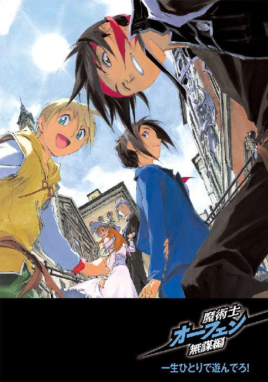
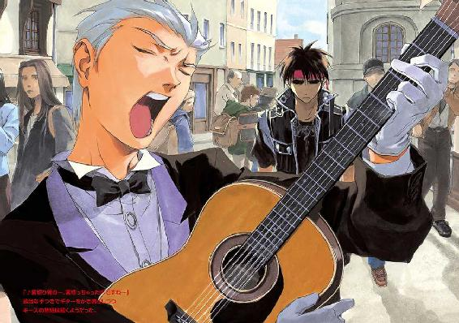
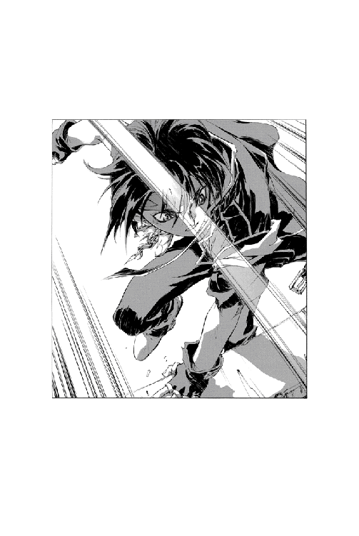
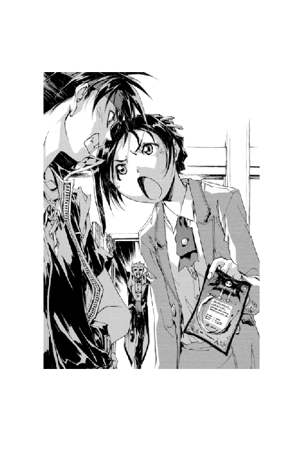

| 魔術士オーフェンしゃべる無謀編4 | |
| 秋田禎信 | |
| (2013) | |
《魔王》オーフェンの長女ラッツベイン・フィンランディには、疑問があった。「父さんって友達とかいるの？」 ともだちくらい、誰にでもいるはずだ。原大陸の覇者にして最強の魔術士と呼ばれる彼女の父親にも。しかしながら、見たことはない。もちろん会ったこともない。そうなれば、知りたいと思うのが人情である。何度無視されてもめげずに質問を繰り返す彼女に、オーフェンはついに重い口を開いた。 「......定義による」 そして、オーフェンは思い出す。親友と過ごした、騒がしくも楽しい青春の日々。あの頃の自分は、友情を感じることもあった気がする。......たぶん。



CONTENTS
イラスト：草河遊也 Yuuya Kusaka
デザイン：ヴェイア Veia
いつもの宿屋にいるというべきか、それとも宿屋がいつも変わらずにあるというべきなのか。そんなことはどうでもいいが、オーフェンは死にかけていた。
黒髪、黒目。いつも皮肉げにつり上がっていた目は、今は焦点も合わずに色をぼやけさせていた。黒ずくめの格好に、胸元には銀製のペンダント──剣にからみついた一本脚のドラゴンの紋章。死の淵にある脳は、その紋章の意味も忘れかけていた。大陸黒魔術の最高峰《牙の塔》で学んだ証である。
とはいえ、死人になりつつある男にとっては、だからどうだというものでもない。
死の手につかまれると、視界は霞むのだな──などとぼんやりと思いつつ、オーフェンは虚ろな眼差しで眼前にあるものを見つめていた。テーブルに頭を置いた姿勢で、そこから身動きも取れない。手足には力が入らず、彼にできるのは、そう、ただ見つめることだけだった。
見えるのは、焦げ茶色をした陶製の器である。柔らかそうな湯気と、スパイスの芳香も混じった温かい香り。その貝のリゾットにスプーンを突っ込んだのは、テーブルの向かいに座っている、子供っぽい顔立ちをした女である。いつも変わらぬスーツ姿（人のことは言えないが）の、コンスタンスだった。
彼女は、なにやら半眼で冷や汗のようなものを垂らしつつ──こちらを見下ろしている。半秒もなにか考え込んだようではあったが、やがて彼女はとりあえずなにかしらの決定を下したのか、目をそらしてからスプーンを持ち上げた。たっぷりと盛り上がった貝の身が、底の深いスプーンに乗せられている。
「あ......あああ......」
オーフェンは死の淵から、その貝の身を見つめ上げ──うめき声をあげた。
瞬間、コンスタンスの動きが止まる。
沈黙──
つい先ほどの黙考の仕草を、もう一度繰り返すような形で、彼女はまたその視線をあさってに向けた。なにやら後ろ暗い面持ちで、だがそれでもあくまで、スプーンを自分の口元に持っていこうとする。
「ああああああっ！」
最後の力を振り絞り──オーフェンは絶叫した。勢いで身体も少し動いたかもしれない。彼の痙攣がテーブルに伝わって、その脚をかたかたと鳴らした。コンスタンスのスプーンは、彼女の口に触れる寸前で止まっている。
再び、沈黙──
「ああ......ああ......」
無意味にオーフェンは、うめき続けた。ぽろぽろと涙がこぼれるのを自覚する。だが、コンスタンスは......
意を決したか、今度は躊躇せずにスプーンをくわえ込んだ！
「ぎゃああああああっ！」
悲鳴をあげたのは──当然オーフェンである。彼は背中をのけぞらせると、跳び上がるように椅子から転げ落ちた。ひんやりとした床の上で、力なく......動きを止める。
「ああ......あ......」
彼は目を閉じた。終わったのだ。自分でもなんだかよく分からないようなことを、唇から漏らす。
「古より......暁天にセペデトの輝く七の月、下流では定期的な氾濫が起こり、洪水とともにその両岸の砂漠地帯に黒い沃土を堆積させた......」
「ああああああっ！ もぉぉぉぉっ！」
がたん、と椅子を蹴飛ばして──コンスタンスが、立ち上がったらしい。彼女は地団駄踏むように荒々しく足音を響かせると、声まであららげた。
「うっとーしいわよ、いい加減！──とうとうお金がなくなって昼食が食べられないからって、わたしの食事を妨害しなくたっていいじゃないっ！」
「うるせぇっ！ ここ三十八時間というもの水しか飲んでねえ俺の目の前で、堂々と飯食いやがって！」
オーフェンは怒鳴り声をあげて立ち上がり、つかつか詰め寄ってくるコンスタンスにつかみかかった。
その手が、ぱちんと軽くはたかれる。
「知ってんのかコラ！ 水ってのはカロリー０なんだぞ！ いくら飲んだって、腹になにも入れてねえのと変わらねえんだからな！」
叫びつつ再度拳を振り上げたところを彼女に腹を蹴られ、肘で打たれ、倒れたところを思い切り踏みつけられる......
「ううう......さすがに力が入らないせいで、こんな無能警官にも敵わない......」
「ほーっほっほっ！ なんだか、ものすっごく気分がいいわ！」
口元に手を当てて高らかに笑う彼女の足に踏みつけられながらも、オーフェンはなんとか声をあげた。
「くっそー......」
起き上がって、彼女の足を振り払う。
「しかし、そろそろなんか食い物を手に入れねえと、さすがに死ぬ可能性が出てきたな」
かりかりと爪を噛みながら、オーフェンは立ち上がった。身体を動かすたび、胃と腸が異様に軋んだ音を立てている。
「でも、なんでこんなことになったわけ？」
またテーブルのもとの席にもどりながら、コンスタンスが聞いてくる。オーフェンは、嘆息混じりにそちらへ向き直った。
「ここんとこ、ここの厨房に食い物があまり残ってなくてな」
「相変わらずの寄生生活ねー」
しみじみとつぶやくコンスタンスに、オーフェンはうなり声をあげた。
「しゃあねえだろうが。最近、まともなバイトにありついてなかったし」
「それが問題だと思うわけよ」
気楽な様子で指を立て──彼女がこちらを見上げてくる。
「なにがだ？」
聞くと、コンスタンスはうなずいた。
「分かってるんでしょ？」
と、不敵に笑みを浮かべてくる。
オーフェンは、ただじっと彼女を見つめ返した。値踏みするような彼女の瞳は、きらきらと輝いている。
彼は彼女の答えを待った。が、彼女はなにも言ってこない。器をスプーンでかき混ぜながら、ただこちらを見ている。
そして──
半眼になって、オーフェンはつぶやいた。
「ただ言ってみただけか？」
「うん」
思いのほかあっさりと、コンスタンス。
オーフェンは手近な椅子を持ち上げた。
「......おちょくっただけなんだな？」
「まあ......そ、そうかしら。でもあの、ね？ ええと......」
青ざめた面持ちで──じわじわと後ずさりしつつ、彼女。だがそんな声には耳を貸さず、椅子を振りかぶったまま、オーフェンは前進していった。
「......つくづく、つまらんことで体力を使っちまったな」
「ううう。そのつまらんことであれだけ殴られたうえ、ご飯まで横取りされたわたしって一体......」
ふたり──ばきぼきと指を鳴らしているオーフェンと、でっかいたんこぶを頭にこさえたコンスタンスは、食堂を出て大通りを歩いていた。
「だいたい、ちょっとしたおちゃめなジョークじゃない。それをあんなに怒るなんて、人間的に減点３だわよ」
たんこぶをさすりさすり、ぶつぶつとこぼしている彼女に、オーフェンは顔だけ向けた。冷たい視線で告げる。
「人が腹減って気が立ってる時に、面白くもねえことを言うからだ」
「ぎすぎすした雰囲気をなんとか和らげようとした、このおねーさんの愛情を分かってほしいわ」
「分かるか、ンなもの」
オーフェンは毒づいて顔を上げると、通りの左右を見回した。いわゆるただの商店街である。人通りも多く、それを待ち受けている店の数も多い。食料品店、玩具屋、書店、生活用品店、家具屋──なんの脈絡もなくずらずらと店舗が並んでいる。
それらを適当に指さして、オーフェンは彼女に告げた。
「せめてもの罪滅ぼしに、俺のバイト探しを手伝ってくれると、しなくてもいいケガをせんでもすむようになるぞ」
「それって、婉曲な脅迫よね......」
腕組みして冷や汗をたらしながら、コンスタンス。
「まあ、仕事をサボるいいわけになるからいいけど」
「全然ならんと思うが」
オーフェンは指摘したが、彼女は無視したようだった。首を傾げて、言ってくる。
「でもバイト探しを手伝うって、なにをどうやって手伝うのよ」
聞かれて、オーフェンは肩をすくめてみせた。答える。
「今までは、身元を保証してくれる人間がいなかったせいで、ロクな仕事がもらえなかったからな。お前みたいな、固まりきってないかさぶたのよーな半端警官でも、警官は警官だ。身元保証人くらいにはなれるだろ」
「......まあ、ほめてくれたんだと思うことにするわ」
半眼でうめく彼女に、はっはっと笑ってやる。オーフェンは虚空をつかむようにぐっと拳を握りしめると、力瘤を作った。
「そう──俺は気づいたんだ。稼ぐに追いつく貧乏なし！ 地道にこつこつ日銭を稼いでいけば、小麦粉を溶かした水をすすって飢えをしのぐようなマネはせんですむと！」
「おー」
コンスタンスが、ぱちぱちと拍手する。道行く通行人も、何人かつられて手をたたいた者がいたようだった。
「思えばここに思い至るまで、長い道のりだった......」
歯を食いしばり、身体をわななかせ──オーフェンは続けた。
「懐も軽ければ心も寒い生活を重ね、平穏に生きたいというささやかな願いまでも無能警官にかき回されてきた」
ばっ──と腕を上げ、叫ぶ。
「だが！ それももう終わりだ！ 俺はこれから、まっとうに稼ぐんだからな！ 馬鹿どもが入り込めない常識の世界で生きてやる！ というわけでこれからの俺は生まれ変わったネオ俺だから、近づくなよ疫病神」
「なんでそこでわたしを指さすのよっ！」
コンスタンスが声をあげる。
が、それは無視するように、いつの間にか周囲に集まっていた野次馬たちから、さっきよりも大きい拍手があがっていた。おおお、と歓声とともに、口笛なども聞こえてくる。
「いいぞー、にーちゃん！」
「なんかしらんけど、真人間になれよー」
ついでにあちこちから、ちゃりんちゃりんと細かい銅貨が投げ込まれてくる。
「............」
足下に転がってきた数枚の銅貨を見下ろして──オーフェンは、コンスタンスに突きつけていた指を、ささっと引き寄せた。視線を上げて、周囲を見やる。
と、野次馬たちから、拍手が消えた。
しん......と静まり返った中、オーフェンは視線をコンスタンスへと移した。彼女は腕組みしてこちらを見据えている。
彼は、ぽつりとつぶやいた。
「......儲かったから、帰るか」
「まっとうに稼ぐってのは、どこに行っちゃったのよ」
コンスタンスの指摘はとりあえず無視しておいて、四つん這いになって銅貨を拾う。拾いこぼしがないか、あたりをかさかさ這い回って確認してから、オーフェンは立ち上がった。ふう、と息をついて、汗をぬぐう。風が彼を撫でた......
「そいつは、明日からということにしよう」
「なにをさわやかに、後ろ向きなこと言ってるのよ」
しつこい彼女はほうっておいて、オーフェンはコインをポケットにしまい込んだ。ばらばらと散り始めている野次馬たちを見ながら、鼻歌まじりに帰途につく。
と──
「駄目よぉぉぉぉぉぉ......」
唐突に響いてきたのは、ひどくかすれた、陰気な声だった。湿気を吸った樽に半年漬けっぱなしになっていたような、陰にこもったうめき声である。
「な──なに？」
うろたえた様子できょろきょろしているコンスタンスに、オーフェンはなにか言おうとし──やめた。それどころではなかった。今の声には、聞き覚えがある。
（まさか......⁉）
焦燥を押し隠し、周囲を探る。が、いくら見回しても通行人の中にそれらしき姿はない。
「そぉれぇでぇはぁ......駄目よぉぉ......」
声は再び、聞こえてきた。うらぶれたススキ畑を思い起こさせるその声音は、奇妙なイントネーションのためもあって、どちらから響いてきたものか特定させようとしない。ただオーフェンは絶望的に確信していた──
「つ......ついに......」
震える膝を手で押さえ、うめく。
「忘れてた......き、今日が期限か......」
「どうしたの？」
コンスタンスが駆け寄ってきた。不思議そうに聞いてくる。
「......知り合い？」
「も──も──」
オーフェンはそこまで言って、唾を呑んだ。
「元締めだ」
「元締め？」
「逃げるぞっ！」
わけの分からない顔でこちらを見ているコンスタンスの首根っこをひっつかまえ、彼は全力で駆け出した。
「待ちなぁぁ......さぁい......」
のろのろとした口調で言ってくる、その声には振り返らずに──オーフェンはスピードを落とさずに人混みを駆け抜けていった。手を引かれているコンスタンスが、びっくりしたような声を出してくる。
「ち──ちょっと、なんなのよ、一体！」
だが、それに答える余裕もなかった。ただ一心に走りつづける──あれに遭遇したら、それに対抗する手段など......
「ねえんだ、分かったか！」
「全然分からないわよっ！」
即座に、コンスタンスが叫び返してくる。
わーきゃー騒いでいる彼女を引っぱりながら、オーフェンはいつの間にか路地に入り込んでいた。ひとけのない場所を意識したわけではなかったが、それでも、人目がなければないに越したことはなかった。
「どうする......？ 人間が相手なら、なんとでもなるが──未知の生命体相手になにができる？」
ぶつぶつとつぶやく彼に、コンスタンスが声をあげた。
「え？ 今、なんて言ったの？」
刹那──
（はっ⁉）
視界の端に、なにか動くものをとらえて、オーフェンは立ち止まった。とっさにコンスタンスを突き飛ばすと、息を吸い、一瞬でそれを爆発させる。
「我は放つ光の白刃っ！」
振り返りざまに放った光熱波は、路地を斜めに横切って、既に通り過ぎた横道に突き刺さった。光の帯が集束し、大爆発が起こる。その爆音に驚いて、野良犬がきゃんきゃんと鳴き声をあげながら逃げていく。
舌打ちし、オーフェンは額をぬぐった。
「くそ、犬だったか......」
「なんなのよー！」
少し余波に巻き込まれたのか、ほんのり焦げたコンスタンスがわめき声をあげている。オーフェンはいらだって、声をあららげた。
「なんなのよもよのなんなもあるか！ 俺がこんだけ焦ってるのを見れば、どんだけの危険が迫ってきているのか分かりそうなもんだろーがっ！」
「......そんなこと言っても、特になにもなくったって、魔術なんて、ばかばか撃ってるじゃない。しょっちゅう」
「............」
オーフェンは、しばし沈黙してから──
「分かった。じゃあ、滅多に使わない物質消滅の魔術を使って、このあたり一帯を廃墟にしよう。まあ、未知の生命体相手にどこまで通じるか分からんが」
「いや、わたしが言ってるのはそーゆうことじゃなくって......」
と、はたと気づいたように言葉を止める。彼女はきょとんと聞き返してきた。
「未知の生命体？」
オーフェンは弾かれたように叫び返した。
「さっきからそう言ってるだろーがっ！」
「言ってるだけで説明がないじゃない！」
説明できないから未知なんだろうが、と叫びかけて──オーフェンは、背筋になにやら鋭い悪寒を覚えていた。
そしてすぐに、その悪寒が感覚として実体化する......
びちゃり、と肩に落ちてきた液体に、オーフェンは戦慄した。着ていた革のジャケットを手早く脱ぐと、液体がかかった部分から緑色の異様な煙をあげているそれを、ばさばさと地面にたたきつけた。
「うわー、うわー！」
叫びながら、何度も地面にこすりつけているうちに、煙が消える。肩の部分に穴の開いたジャケットを気味悪く眺めてから、彼は視線を上げた。
どよん、とした空気が、見上げた顔を上から押してくるのを感じる。オーフェンはゆっくりと後ずさりした......
どこをどう走ってきたものか、オーフェンもほとんど覚えていなかったが──ひとけのない路地裏である。道は通るのに苦労するほどではないが、それでも広くはない。くすんだ色のビルディングにはさまれて、薄暗い道が続いている。
そして──
「きゃああああああっ！」
コンスタンスも気づいたのか、悲鳴をあげた。オーフェンが見上げている壁の、さらに上のほうを指さしている。
オーフェンも身構えながら、さらに上を見やった。
「うふふふふふふぅ......」
壁に、なにかが張り付いていた。
黒い、そして青黒い塊。壁にできたこぶのように異様な形に盛り上がり、そして異様な形で広がっている。その物体の、無数のひだから──冷たくぎらついたふたつの眼球と、細く伸びた白い指だけがのぞいている。
その物体が、くぐもった声を発した。
「駄目よぉ。手下十四号。逃げたりしちゃあ......」
その時には──
「我が契約により──」
オーフェンは、全力で魔術の構成を解き放っていた。
「聖戦よ終われ！」
瞬間、彼が突き出した両手から、閃光が走る。一瞬で燃えた光は、ビルの壁の、その物体が張り付いているあたりに突き刺さった。同時に──
音もなく、光に触れた部分が、ごそっと消え失せる。
かなり加減しているため、消失したのは光が触れた壁だけだったが、全力で放てばその建物全体を消失させることもできる。敵を防御物ごと問答無用で消し去る、いわゆる切り札のひとつだが、威力を高めれば高めるだけ成功率が下がるという欠点もあった。
だがどちらにせよ、壁に光が集束するよりも早く、その物体はかさかさと別の場所に移動していた。物体が移動した軌跡を、よく分からない粘液のようなものがたどっている。
「きゃー！ きゃーっ！」
ばたばたと手を振り回して、コンスタンスが悲鳴をあげていた。
「な──なんなのよあれはぁぁぁっ！」
と、こちらにしがみついてくる。オーフェンは彼女を振り払いながら、
「俺にだって分からねえから未知なんだよ」
「なんでよ！ あんたのこと手下だって言ってたじゃ──」
そこまで言ってから。
ふっと、コンスタンスの顔から表情が消えた。こちらの肩をつかんでいた手を、そっとはなして......そそくさと後退していく。
「ひょっとして、あんたもああいう生物の仲間だったの？」
「誰がだっ⁉」
オーフェンはたまらずに叫んでいた。
「人をああいう魔界からの廃棄物といっしょにするんじゃねえ！ 今だって平気で魔術をよけやがったし」
「ほほほほほほ......手下十四号、もの凄まじく失礼よぉぉ」
重力を無視して壁面を八の字にくるくる回りながら、その物体が口をはさんできた。
「このぉサマンサ様をぉ、お忘れというぅわけでもありますまいにぃぃ......」
「ううう......できれば忘れたいと思ってたんだが、忘れた頃に夢の中に出てきやがるから......あの人間外」
「なんなの？ いったい」
聞いてくるコンスタンスに、オーフェンは答えようと口を開きかけ──なにを言えばいいのか分からずに、そのまま嘆息だけを漏らした。だが、それでも髪をかきながら、なにか言葉を見つけだす。
「いや、だから......世界の驚異というか......人外の魔物というか......」
「わたしぃはぁ、人間よぉぉ」
上から聞こえてきた声に、オーフェンは叫んだ。
「うるせぇっ！」
が──
さっきまでかさかさと這い回っていた壁に、もうその物体──サマンサの姿がない。
嫌な予感を覚えたのも一瞬。
そしてその、同じ一瞬に。オーフェンは地面にたたき伏せられた。
静かなその路地裏に......
サマンサは、立っていた。優雅な足取りで、その場からゆっくりと進み出る。
「ほほほほほほほ」
口に手を当てて、間延びした笑い声をあげる。すらりと伸びた指をコンスタンスにかざし、すぐ前で茫然自失している彼女に一礼する──
オーフェンは、
「おどりゃああああっ！」
渾身の力を振り絞って叫びながら、地面から立ち上がった。彼の頭の上に着地してきたサマンサが転げ落ちたことを確認すると、即座に右手を振り上げる。
「我は放つ光の白刃っ！」
彼の右手から膨れ上がった光は、倒れたサマンサもろとも地面に突き刺さった。次いで起こった大爆発は、完全にその物体を呑み込んだかに見えたが......
「おほほほほほほほほほ......」
案の定、間の抜けた笑い声は背後から響いてきた。下唇を噛みながら振り返る。
そこには、サマンサが哄笑をあげていた。
地上に立っている時には、サマンサは人間のように見えた──野暮ったい、修道服のような黒い服に、微妙に青みを帯びた髪。髪は腰まで伸びているうえ、派手なウエーブのせいで極端に末広がりになっており、身体を包み込みそうにも見える。壁に張り付いた彼女を、人間外の物体に見せていたのはその髪だった。前髪も伸ばし放題になっているため、顔はよく分からないが、とにかくぎょろついた両目だけが目立っている。
「ど......どういうこと⁉」
すっかり混乱したコンスタンスが、頭を抱えて悩んでいる。
「いきなり人間に変身したわよ？」
「もとからぁ人間だってぇ、言ってるぅでしょぉぉ」
ふらふらと指先を振りながら、サマンサがそう告げる。
「サマンサよぉぉ。よろしくぅぅ」
青白い手を伸ばし、つぶやく。コンスタンスは一瞬──か、それ以上の時間──躊躇を見せてから、その手を握った。力の入らない握手をしてから、その手を離す......
手についてきた謎の粘液を気味悪く見下ろしながら、コンスタンスは半泣きの表情をこちらに向けてきた。
「オーフェェェェン......」
「泣くな。我慢しろ」
脱力してそのまま気絶しそうな彼女をなんとか元気づけてやろうと、オーフェンは声をかけた。こちらを見てひたひたと薄笑いを浮かべているサマンサを足で追っ払いながら、持っていたハンカチでコンスタンスの手を拭いてやる。
「未知のモノに侵略されない唯一の方法は、意思を強く持つことだけだぞ。泣いたら負けだ。取り憑かれるぞ」
「ううう。だって、だって怖いの」
「なんかぁ、失礼ぃなことをぉ、言われてる気がするわぁぁ」
そんなサマンサの声にオーフェンは無言のまま、右腕をあげた。威嚇の姿勢である。が──
「無駄よぉぉ」
サマンサはつぶやくと、そのまま大きく口を開けた。と同時、口の中から舌のようなものを──数メートル──伸ばすと、その先端をまた別のビルの壁に吸い付けた。その舌が一瞬で縮むと、ゴムで跳ね上げられた玩具のように、サマンサの身体がそちらへと跳んでいく......
ビルの壁に激突し、彼女はそこに、びたっと張り付いた。舌らしきものをぢゅるぢゅると呑み込むと、顔をこちらに向ける。
「あぁなたぁの行動パタァンはぁ、分かっているのよぉぉぉ」
「まあ......衝動的に攻撃、ていうあんたの行動パターンなら、わたしにだって読めてるけど......」
ぶつぶつと、コンスタンス。
「あれのどこが人間なわけ？」
サマンサには直接話しかけたくないのか、彼女はこちらに聞いてきた。オーフェンは、つと考え込むと、
「......秘密の七つ道具のおかげだ、と本人は言い張ってるんだが......」
「七つ道具？」
「今使った、口に装着するびっくりゴム式カエル跳び移動装置とか......壁を這いずり回るための、特殊粘液質接着剤とか......」
「ほほほほほほほほほほ」
笑いながら、再び壁面をかさかさ這い回るサマンサを見上げて──オーフェンは、深々とため息をついた。怪訝な面持ちで続ける。
「どうしても、なんか納得ができなくってな......」
「なにか対処法はないわけ？ シロアリだって、通り道に毒をまいておけば退治できるじゃない」
あくまでサマンサを人間として見られないらしいコンスタンスの意見に、オーフェンはうなずいた。
「とりあえずだな」
と、サマンサを指さす。
「その接着剤とやら、三分ほどで完全に固まっちまうらしいんだよな」
「ほーほほほほ......あら？」
笑いながらぐるぐる回っていたサマンサが、動きを止める。
それを眺めて、オーフェンは続けた。
「だから、絶えず動き回ってるらしいんだが......ほっとくと、うっかり固まりかけた接着剤の上を通っちまうんだ。そうすると、もう動けない」
動けなくなり、なんとか手を引き剥がそうとしているサマンサに、オーフェンは改めて腕を振りかぶった。
「我は放つ光の白刃っ！」
彼が放った熱衝撃波は、サマンサが張り付いていたビルの壁ごと、彼女を空の彼方へと吹き飛ばしていった。
「──で、解決したところで、あれはなんだったわけ？」
大通りにもどって、コンスタンスが質問の声をあげる。オーフェンは歩いているまま腕組みし、即答した。
「だから、元締めだよ」
「元締め？ なんの？」
「金貸しの元締めに決まってるだろ？」
「............？」
理解できないらしいコンスタンスの表情を見て、オーフェンは腕を解いた。大きくため息をついて、言い直す。
「ようするにだ、俺はあの物体女から資金の一部を借りて、あの福ダヌキやらなにやらに貸し付けたんだよ。つまりは、金融業務を代理した形だ。その中間マージンが、俺の利益になる......はずだったんだけどな、順調にいってれば」
「なんでそんな面倒なことをするわけ？」
「モグリの金貸し業だからな。代理人を立てておけば、いざって時の尻尾切りになるし。それに......冷静に考えて、あの物体女がにたにた笑って『お金ぇ、貸すぅぅぅ』とか言ったところで、借りようとする人間がいると思うか？」
どちらかといえば、後者のほうの理由に納得がいったのか、コンスタンスがうんうんとうなずく。
「なんていうか、未登録であること以前の犯罪よねー、それは」
「そういうことだ。とゆーわけで、どうもすっかり忘れてたが、今日がその返納期限だったらしいんだよな」
「......て、返すお金なんて、あるの？」
「お前が貸してくれたり、くれたりしない限りは、ないな」
「じゃあ、ないってことね」
「ああ。お前が貸してくれたり、くれたりしない限りはないんだ」
「ええ。つまり、ないってことよね」
「そうなんだ。お前が貸してくれたり、くれたりしないと──」
「ああああ！ もう、しつこいわね！ なんでわたしがそんなことするのよ！」
と、その時。
「おほほほほほほほほほほ......」
突如聞こえてきた笑い声に──
ふたりは、びくりと硬直した。聞き間違えるはずもない、覚えのある哄笑。
当たり前だが大通りにはかなりの人通りがある。その人混みのどこに隠れていてもおかしくはない──オーフェンはぞっとしながら、あたりを見回した。刹那。
ごぼごぼごぼごぼ......
道に沿うように流れているマスル水道から、水が煮立つような、そんな音が響き出す。
そして、次の瞬間には爆発が起こっていた。
水道から破裂したように噴き上がった水柱は、数メートルにも達していた。道のほうから見ても、見上げるほどの高さである。そして、その水柱の上に、彼女が立っている......
「逃げるなんてぇぇ......ひどいわぁぁ」
噴き上げる水の中、にたりと半月形の笑みを浮かべるのは、言うまでもなくサマンサだった。両手をわざわざ鉤爪の形に構えて、前に突き出している。
と、水の噴出が止まった。
「あら？」
というつぶやきとともに、どぼん、と水面に落ちていく。
そのまま、沈黙が訪れた。
なにごとが起こったのかと足を止めていた通行人たちも、首を傾げながら、また道の流れにもどっていく。
「......帰るか」
オーフェンの提案に、コンスタンスもうなずいた。が。
「待ちなさいぃぃぃぃ......」
つぶやきの、次の瞬間だった。水中からどうやって跳躍してきたものか、川の水面を突き破って跳び出してきたサマンサが、落下防止用の柵にがしゃんと飛びついた。バッタのような格好で、柵に張り付いている。なぜか魚を一尾、口にくわえていた。
しゅー、と謎の威嚇音を発しつつ、彼女は言ってきた。魚をくわえたまま。
「待たないと、卵を産み付けるわよぉぉ」
「なんだって⁉」
オーフェンは、よろよろと腕を振った。
「まずいぞ、コギー......寄生されたら、最終的にはあれと同じ物体になってしまうに違いない！」
「そ、それは問題ねオーフェン！」
「冗談をぉ、真に受けないでほしいわぁぁ」
ぬたぬたと腕を蠢かせ、魚をくわえたまま落下防止用柵を乗り越えつつ、その女は気味の悪い声をあげた。人間の骨格では不可能なのではないかと思わせるような奇妙な動きで柵を越えると、ぼとり、と道に落下する。その拍子にくわえていた魚が口から落ちた。
肩から地面に激突しながら、それがどうということでもないのか、女はケケケと笑い声をあげる。
「わたしぃはぁ......人間んよぉぉ」
「説得力がないっ！ 全然っ！」
だがサマンサは、聞く耳がないようだった。濡れた靴底をしとしと言わせながら、一歩前に出る。
「さあぁ......手下十四号ぅ、代理人の義務を果たしなさぁい......」
「ううう......だがしかし、この無能警官が貸してくれたりくれたりしない限りは──」
「しっこいわよ、オーフェン！」
コンスタンスがわめいている間に、サマンサはさらに一歩を踏み出した。ゆらゆらと、濡れているはずなのになぜか揺れている髪の中から、眼光がぎらついている。
「うふふふ......あくまで空とぼけるつもりならぁ、夜道の嫌がらせシリーズを発動するわよぉぉぉ」
「な──なんだと⁉」
オーフェンは、絶叫じみた声をあげた──が、背後から、いまいち危機感のないコンスタンスが、くいくいと腕を引っぱる。彼女は怪訝な表情で聞いてきた。
「夜道の嫌がらせシリーズ？」
オーフェンは沈痛な面持ちでうなずくと、
「ああ......夜、ひとけのない道とかで、街灯の上とかにからみついて待ち伏せされるんだ。しかも、突然べちゃりとか音を立てて落っこちてくるんだぞ」
「......嫌がらせっていうか......」
「ほかにも、花壇の植え込みとかからいきなり這い出してきて、道ばたに白い胃液を吐いたりとか......」
「それは、病院に連れていったほうがいいと思うけど......」
「恐ろしいことを言うなっ！」
オーフェンは絶叫して、コンスタンスの口をふさいだ。がくがくと歯の根の合わない声音で、それでもあとを続ける。
「病院だなんて......ひとけのない夜の廊下。見回りをする看護婦の足音。人知れずそのあとをずるべたと追いかけるあの物体女──はまりすぎてて怖いだろーが！」
「問題がずれてるぅ気がぁするわぁぁ」
歩幅の合わない、にょろにょろとした足取りでまた一歩一歩近づいてくるサマンサに、通行人たちも奇異な目を向けている。オーフェンは即座に身構えると、叫んだ。
「我は放つ光の白刃っ！」
放たれた白光は、一瞬で彼女を呑み込んだ──そのまま爆発、炎上する。
「よし！」
オーフェンは歓声をあげた。
「今度こそ、あの悪魔の最期だ！」
だが。
ずるっ......
気味の悪い音とともに、炎に包まれたサマンサの身体が、膨れ上がる。さらには、その背中から、新たなる頭部がせり出してきた。
「────っ⁉」
その場にいた全員が、声にならない悲鳴をあげる。
見ている間にも、彼女は燃えている古い皮を脱ぎ捨て、炎の外に脱出した。
「だ、脱皮したわよ⁉」
コンスタンスが叫ぶ。
「脱皮してなお、あのくそ趣味の悪い服を着ているとゆーことは、やっぱりあれは服じゃなくて鱗かなにかの一種だったんだな⁉」
オーフェンのうめきに、サマンサが顔を向ける。
「失礼ねぇぇ。今のは、対魔術用の絶縁体を脱ぎ捨てただけなのよぉぉ」
「そ、そうは見えなかったが......」
つぶやきながら、オーフェンは、その場を駆け出した──今度は逃げるのではない。逃げても無駄なことは分かっていた。
（魔術が通じそうにないのなら──素手で攻撃するしかない！）
そう決心して、サマンサへと跳びかかる。
だが、彼が彼女のところへ到達するよりも早く、彼女も体勢を直していた。がぱんと大きく顎を開くと、気味の悪い音を立てながら、手の爪を伸ばす。さらには、助走もなしでこちらへと数メートルの距離を跳躍してきた。
「うわっ！」
とっさに身体をひねり、横へ跳んで逃げる──彼が跳び退いた場所へ、サマンサが飛び込んでいく。タイミング的には、完全によけられたはずだった。が。
「なんだ⁉」
予想もしないところで、がくんと足首を引っぱられ、オーフェンは転倒した。あわてて見下ろすと──足になにかからみついている。細長く黒い鞭のようなそれを、視線でたどっていくと、それはサマンサのスカートの中から伸びていて......
「尻尾じゃねーかっ⁉」
オーフェンの叫びには、サマンサは答えてこなかった。きょきょきょと謎の哄笑を発してから、こちらへとにじり寄ってきて──
「うわあああああああっ⁉」
鼻が触れるほどにまで近寄ってきたサマンサに、オーフェンは絶叫した。うす気味悪く歪められた彼女の指がのろのろと伸びてくる。
「オーフェン⁉」
コンスタンスの声が──逃げたのだろう──やたら遠くから聞こえてくる。
正体不明の緑色の付着物がついたサマンサの爪は、緩慢に、だが着実に──オーフェンのジャケットに触れた。そのまま、ポケットの中に指を突っ込んでくる。
しばしして──さっきオーフェンが拾った銅貨を、サマンサは取りだしていた。枚数を数えてから、自分の懐にしまい込み、そして、にやりと笑う。
「確かぁにぃ、もらったぁわよぉう......」
さらに、唐突に雄叫びをあげる！
「きょええええええっ！」
そのあまりの声量に、反射的に目を閉じて耳をふさいでいるうちに──
再び目を開いたときには、サマンサの姿はどこにもなかった。
「............」
誰も、なにも声を発さない。呆然としている通行人たちの中から、コンスタンスがひょこひょこと、こちらに近寄ってきた。オーフェンは地面に倒れたまま彼女を見上げると、
「くうう......」
痛恨のうめき声をあげた。
「くそう......俺の、せっかくの稼ぎを！」
「......どうせ、まっとうに働いたお金じゃないんだし、いいじゃない......」
呆れたようなコンスタンスのつぶやきには耳を貸さず──
オーフェンは地面に倒れたまま、ただ拳を握りしめていた。
（一生ひとりで遊んでろ！：おわり）
「今日はちょっと虫の居所が悪いので、かなり本気で我は放つ光の白刃っ！」
──どぉぉぉぉん......
今日も今日とて、トトカンタ市の一角に突如として立ち上る白い火柱。そして轟音。さらには、爆音の中にかすかに響くふたつの悲鳴。
「ぎゃああああああ......」
黒焦げになって倒れるふたりの地人を見ながら、オーフェンは、ふっと笑みを浮かべた。黒髪、黒目、黒ずくめの若者である。その胸元に、銀製のペンダントが揺れていた──大陸黒魔術の最高峰《牙の塔》のペンダント。力ある黒魔術士の証でもある。
彼は、かすかにニヒルな味を感じたように口元を歪ませると、天を仰いだ。
「......また無駄な殺生をしちまったな......」
「無駄だと思うのなら、ただちにやめんかい！ この口より手より先に破壊光線が出る暴走借金取りめが──」
黒焦げになった人影のひとつが、クレーターの中心からがばと起きあがり、声をあげた。毛皮のマントをまとった、身長百三十センチほどの地人である。もうひとり、似たような格好で分厚い眼鏡をかけているほうは、倒れたまま身動きできないらしい。
なんにしろ、立ち上がったほうは、手に持っている古びた長剣を杖がわりにして身を預け、叫び続けてきた。
「だいたい貴様なんぞ、本来なら飛び出しナイフで飛び出し殺されるのが相応な──」
「我は放つ光の白刃っ！」
オーフェンが即座に叫び返したその呪文とともに、荒れ狂う熱波の渦が、先にできたクレーターをさらにえぐる──爆炎の中に黒焦げの地人たちは、さらに消えた。炎が消えたあとには、もう完全に沈黙して痙攣する地人たちだけが残っている。
オーフェンは静かに、再びふっと息を漏らすと、着ている革ジャケットの背中から、立て札を一本取りだした。無言のまま、爆発のせいで粉々になった石畳に無理やりそれを立てる。
立て札には、『ここにいるのは、借りた金も返さない犯罪者ですので、ご通行の皆様方、どうぞご自由に処刑ください（注・ちょっとやそっとでは死にません）』と書いてある。その立て札の下に、これまた懐から取りだしたゴムハンマーや竹ノコギリを置いているところで、彼はふと──背後に気配を感じた。
「......？」
疑問に思いながら、振り返る。彼がよくあの地人たちから借金の取り立て業務を行なっているこの通りには、最近ではほとんど人通りがない。マスル水道という名前で知られている市内川に寄り添うような道である。彼が振り返った先には──
歳の頃十七、八といったあたりの、線の細い印象の少女が、胸元で手を握ってこちらを見つめていた。
もっとも線が細い──というよりは、単に身体がやたら細く見える、といったほうが近いかもしれなかったが。親指と小指でつかんでとどくのではないかというほどに、やたら腕が細い。血色も、あまり良好とは言えない。ふらりと立ちつくし、ゆらゆらと揺れているようなポーズである。なんにしろ、こちらをじっと見つめたまま動こうとしないその少女に、オーフェンは怪訝な視線を投げた。
「......なにか用？」
と言ってから、はっと気づく。
「あー、そうか！」
彼はにこやかな表情で、ゴムハンマーの柄のほうを彼女に差し出した。
「いやあ、こんなに早く処刑人が現れてくれるとは思わなかったぞ。あいつらときたら、どんな高熱で焼き尽くされても二分くらいで復活しやがるからな。せっかく徹夜して作った立て札が無駄になるんじゃないかって、心配だったんだ──」
彼女はしかし、差し出されたハンマーを見下ろしながら、かぶりを振った。か細い声で言ってくる。
「そうではなくて」
「なにぃ⁉」
いきなりオーフェンが声をあげると──彼女はビビったように後ずさりした。だがオーフェンもまた、多少気後れしながら、
「おとなしい顔をして......こっちの竹ノコのほうがいいってのか......まあ、一応、俺的にはそれもオーケイだが」
「そういう問題ではないんですが」
と、竹ノコギリまでも拒否する少女に、オーフェンは今度こそ不審な眼差しを向けた。傾いた夕日に斜めに照らされてもなお、その少女の顔色は白く見える。
「あなたにお願いがあるんです」
「お願い？」
オーフェンは聞き返した。竹ノコギリを見下ろして、うめく。
「そんなこと言われてもだな......これよりパワーアップした凶器となると、開発中の自動人巻き機とか、超刺激目薬──レモン汁とかしかないぞ」
「とりあえず、その話題からは離れてください」
多少うつむき加減に、少女は言ってきた。
「わたし真面目にお願いしたいんですけれど......」
「はあ」
とりあえずハンマーとノコギリを立て札の下に置きながら、オーフェンは生返事を返した。少女はどこか色の薄い黒髪をわずかにカールさせている。睫毛が長いせいか黒目がちに見えるが、実際は瞳の色すらくすんでいるのではないかと思えた。どのみち、見覚えはない。
彼女はうつむいたまま──さらに視線をそらすように夕日のほうを見つめ、小さなつぶやきを発してきた。
「わたしの青春を──わたしの人生を受け止めて欲しいんです、あなたに」
聞いたところで、無論、オーフェンが自分の眉間に刻んだしわが消えたというわけでもなかったが。
「............？」
いやむしろさらに怪訝な表情を強めると、彼は奇声じみた声をあげた。
「はあ？」
「知りたければ、こちらへ来ることです」
彼女が真剣な顔で、ぎゅっとこちらの腕をつかんでくる。
やたら細い指のわりには異様に強い握力で、オーフェンは二、三度軽く振り払おうとしてみたが、彼女の指はびくともしなかった。
彼女がこちらの腕をつかむのに使っているのは左手──そして空いている右手を、彼女は優雅に夕日へとかざしてみせた。
「さあさあ。こちらへ」
軽くそう言いながら、ぐいぐいと腕を引っぱる。
「こちらへって......なんで？」
オーフェンは腕を引かれながらも聞き返した。が、彼女は取り合おうともしない。いまいち軽薄な、へらへらとした足取りで、角を曲がった裏路地へと進もうとしていく。
なんとなく出端をくじかれた形で、腕をふりほどく気にもなれずにいるうちに、彼は結局路地の中まで引っぱられていた。と、唐突に、彼女が声をあげる──
「はうっ......」
「へ？」
オーフェンは、自分でも間が抜けていると思うような声をあげていた。が、彼女は構う素振りも見せず、こちらの腕から手をはなすとこれまた頼りなく、ふらふらと地面に膝をついた。どこか──なにかに──陶酔しているような眼差しで、胸を押さえる。
彼女はそのまま続けた。
「苦しい......持病のしゃくが......」
「はあ」
オーフェンは疑わしくうなずきながら、鼻の頭をかいた。前にもこんなことがあったななどと思いながら、とりあえず一歩退く。
だが彼女は素知らぬふうで、
「さすってください」
「やだ。なんか危ないし」
オーフェンは即答すると、きびすを返して帰りかけた。が。
しゅざざっ！──
海老のように跳んだ彼女が、後ろから足首をつかんでくる。
「............」
とりあえず無言で見下ろしていると、彼女は地べたにうつ伏せになったまま、じっと硬直してから、顔を上げた。
「これなんてどうでしょう？」
言いながら手をはなすと、その手をいったん握りしめ、また開く。
彼女の細い指の間から、貧相な作り物の花が、ぽろぽろと落ちた。
「お花」
「いや、ンな手品見せられても......」
「わたし、ジニーっていいます」
「いや、さらに名乗られても......」
「ああ、サザエも壺焼きにできそうな真っ赤な夕日」
「いや、あまつさえ、そんなこと言われても......」
「............」
彼女──ジニーとやらは、そこでようやく口を閉じた。だが、それもほんの数秒のことで、なにか思いついたのか、ぽんと手を打って言ってくる。
「さすってくださいますと、口から銅貨が出るような気がします」
「あのなぁ......あんた......」
呆れる──というよりは多少怖さなど感じつつ、オーフェンはうめいた。
「まあ、よくは分からんが、個性というのは大事だが、君のは絶対、個性とかそーゆうものではないと確信できるぞ」
「なぜかしら。わたしに出会った方は、みんなそう言うの」
いつの間にか立ち上がり、あくまで軽薄な仕草で両手を広げるジニー。と──
その時だった。
「おうおうおうっ！」
なんの前触れもなく、路地の奥から、かっきり逆三角形の体格をしたガラの悪い男が、肩をよたらせながら歩いてくる。
どくろがプリントされた黒いトレーナーに、すり切れたバンドでとめた破れジーンズ。手に、砂を詰めた革の棍棒を持っている。
オーフェンがぽかんと見ていると、その男は大股で近寄ってきた。びし！──これは棍棒で自分の腕をたたいた音だが──と音を立て、さらに声をあららげる。いかつい顔には怒りのしわが大げさなほどに刻まれていた。
「おうっ！ てめえっ！」
どうやら、自分のことらしいと気づいて、オーフェンは無言で自分を指さした。
「？」
と疑問符を浮かべていると、男は唇の端を顔面が変形するほどにつり上げ、
「てめえに決まってんだろーがっ！ 抜け作か、おら！ てめ、よくも人の女に手を出してくれたなっ！」
「............あんだと？」
わけが分からずに聞き返す。が、ふと見ると、すぐ横でジニーが、弱々しく自分の肩を自分で抱いて、よよよとくずおれている。
「ああ......もてあそばれたわたし......」
「え〜と......」
オーフェンが言葉に迷っているうちに、男はさらに詰め寄ってきた。
「痛い目にあいたくなけりゃ、人はちったぁ素直になるもんだぜ！ まあ、並の駄々っ子なら、こいつで二、三度脳天をへこまされりゃ、良い子になるけどな！」
まくし立てながら、棍棒を振り上げてみせる────
オーフェンは、半歩近づいた。左手の小指で耳の穴をかきながら（かゆかったのだ）、空いている右手で拳を作り、それを軽く男の胸板に当てる。
そして次の瞬間──オーフェンの左足が爆発するような足音を立てるのと同時、男の身体は地面に倒れていた。
「どおおおおっ⁉」
九十キロはありそうな巨体が、派手に転倒する。手を当てられていた胸のあたりを押さえつつ、男は立ち上がった。
「て、てててめぇ、刃向かうつもりかっ⁉」
「駄々っ子なんでね」
と、軽く跳躍する。
男には、なにが起きたか分からなかったかもしれない──実を言えばオーフェン自身も、自分の身体がどう動いたのか完全に理解していたというわけではなかった。相手との距離は一メートルほどだった。左足で、五十センチほどを跳んだ。同じくして、右足を一メートルほど強く突き出す。
つまり、五十センチほどを突き通す力で、つま先が男の顔面にめり込んだ。
「ぶほおおおっ⁉」
今度も大きい悲鳴をあげて、男が後ろに吹っ飛ばされる。
だがそれでも、額から血を流しながら、男は立ち上がってきた。がっくんがっくん震える指先を、こちら──だろう、多分──に向けて、叫ぶ。
「い、今のはないんじゃないか、おい⁉ すっげー痛かったぞ、コラ⁉」
「今度のは多分、痛みを感じずにすむから安心しろ」
つぶやきながら。
オーフェンは、右腕を上げた。そして叫ぶ。
「我は呼ぶ破裂の姉妹！」
呪文と同時、空気圧を伴った衝撃波が、男の顔面を歪ませた。爆音が彼を吹き飛ばし、悲鳴までもかき消して破裂するのに──半秒とかからない。
しん......
と、路地裏に静寂が下った。
オーフェンは腕組みして、とりあえずあたりを見回した。さっきまで座り込んでいたジニーは、やはり軽薄な仕草で妙な踊りを舞っている。
「なあ......ジニー......」
これまた奇妙な格好（少し強制的）で倒れている男が、震え声を発した。
「こ......こいつ、なんなんだ......？」
「カモです、兄さん」
ひらひらと舞いながら、彼女がつぶやく。
「向こうの通りで、道におっきなクレーターを作ってらっしゃるところを連れてきたのです」
「......頼むから......今度からは、俺にも勝てそーな奴を連れてきてくれ......」
ずたぼろになった身体で地面にはいつくばったまま、男はそんなぼやきを続けていた。
「つまり──」
ふたりを交互に眺めつつ、オーフェンは気づいた。
「つつもたせ、てやつか？」
「キャッチ間男と呼んでください」
「いやまあ......なんて呼んでもいーけどな」
「ああなんという運命......」
「............」
とりあえずオーフェンは、彼女のほうにそれ以上の会話を求めることはあきらめて、男のほうに向き直った。
しゃがみ込んで、聞く。
「お前ら、金持ってる？」
「金......あれば、こんなところでこんなことやっとらんと思うぞ」
「それもそうだが、ほら、それでも俺を罠にはめようとした慰謝料とか払ってもらわないとならないし」
平静に告げるオーフェンに、男は、ふらふらと顔を上げ、
「こ......ここまでやっといて、さらに金を請求するの......か......？」
「とゆーか、金を請求するためにここまでやったんだが」
言いながらオーフェンは、男の顔をがっしとつかんだ。そのまま──引きずって、路地を出ようと歩き出す。
「これ以上詳しいことは、事務所で話をしようや、なぁ」
「あああ。ヤクザだぁぁ」
「誰がだっ⁉」
まったく身に覚えのない言いがかりをつけられ、オーフェンは叫び返した。その瞬間。
「お待ちください！」
突如として、りんとした声が彼の行く手を遮るように響く──
立ちはだかっていたのは、ジニーだった。今までの軽薄な様子はどこかへ消えて、厳しい眼差しでこちらを見据えている。
ぽつりと、オーフェンは聞き返した。
「......なんで？」
「............」
視線だけが絡み合ったまま、数秒が過ぎる。
と、ジニーはさっきの気の抜けた表情にもどると、祈るように手を組み合わせた──あさってのほうを向いて。
「兄さん。死んだらあのへんの星になってね。あの肉屋の看板のうえに、ひときわでっかく輝いて欲しいと願う、妹の純真......」
「見捨てる気かぁ！ ジニィィィィっ⁉」
ばたばたと暴れて、男が叫ぶ。
「やかましいわっ！」
オーフェンは、男の脳天に蹴りを入れて黙らせた。
「黙って聞いてりゃあ、人のことを肩が触れたら暴れ出す街のアウトローみたいに言いやがって！ いいか、そーゆうチンピラってのはだな、たとえば自分より腕力の劣る一般市民に因縁をつけて、さんざ叩きのめして戦意を奪ってから、獲物を事務所に連れ込んで、慰謝料だなんだと法外な金を要求する──ような......ええと」
息も継がずにまくし立てながら、オーフェンは──冷たい眼差しで、じっとこちらを見つめているふたりに、だんだんと声を小さくしていった。完全に声を途絶えさせてから、こほん、と咳払いする。
「ええと、その、そういうようなことをしながら、鼻にストロー突っ込んで奇声をあげたり、足の裏にたんぽぽを咲かせて『世界を平和に』とか歌を唄うよーな連中のことを言うんだ！ 俺はそんなことはしないぞ！」
「無理やりマニアックな条件を付け足して、ごまかすんじゃねえっ！」
たまらず、男が叫んでくる。オーフェンはそっぽを向くと、腕組みしてうめいた。
「まったく、常識を知らない奴らはこれだから困る......」
「まったくですねぇ」
「ああっ⁉ またさりげなく裏切ってるな、ジニー！ お前またそーゆう、強い側にすり寄って細く長い人生を生きようなんて、そんな性根で人生は幸福か⁉ 光り輝く真理はあるか⁉」
男がジニーのスカートのすそをつかんで力説するが、彼女はろくに聞いてすらいないようだった。手近な壁に手を突き、ため息などついている。
「ジャガイモの芽は、もう出たかしら......」
「ええい、またわけの分からんことを」
「あら？ どこに行かれるのですか？」
と──
たずねられてオーフェンは、足を止めた。気づかれないうちに路地を出たかったのだが、そうもいかなかったらしい。
嫌々ながら振り返り、答える。
「いや......なんだか今のうちにできる限りお前らから離れたほうがいいような気がしてきて」
「ええっ⁉」
たじろいだ仕草で──ジニーが、口元に手を当てる。
しばし硬直したのち、彼女は、またふらふらと身じろぎした。服のそでを軽く口にくわえ、ぽつりとつぶやく。
「それも......愛？」
「あのな──いや、いい。もう別に」
なにかいろいろなことを言いかけて、オーフェンはかぶりを振った。
「じゃあ、元気でな。もう二度と会うこともないだろうが、もしそういうことがあったとしても、運命に抗う気持ちだけは捨てないつもりだ、それじゃ」
「待って！」
ジニーは──しつこく、叫んできた。一応見やると、彼女は白いレースつきのハンカチを目元に当て、
「あなたに......あなたに、言いたいことがあるのです」
「......なんだ？」
嫌な予感を覚えながら、聞く──と、彼女はぱっと顔を上げた。手のひらを上にして小さい手を差し出し、しれっと言ってくる。
「兄さんの治療費と慰謝料。払わないと、警察沙汰になるのですが」
「............」
オーフェンは無言で、彼女をはたき倒した。
「んで......結局お前ら、なんなんだ？」
ふたりを連れ、いつもの宿屋へ──連れていく必要もなかったような気もしたが、なんとなく連れてきてしまっていた。この馴染みの食堂には、相も変わらず客の姿はない。唯一の客はオーフェンたちということになるが、オーフェンは金を持っていなかったので、まあこういうのは普通は客と呼ばない。
そのふたり──ジニーと、男は、じっとこちらを見て座っている。ただ、こちらを見ているのは同じでもその視線には違いがあった。夢見るようなジニーの眼差し。たかだかぼろくそにやられたからくらいで恨みがましい目を向けている男。どうやら兄妹らしいが、まったく似たところはうかがえなかった。
「決まっているでしょう」
さっと──天女が衣の袖を振るように、とでも言えば多少は美しいイメージなのかもしれない。が、そうというよりは鳩時計の鳩のような無責任で軽薄な動きで、ジニーは手を横に振った。
「太陽は東から昇るのよ」
「お前らいったい、なんなんだ？」
彼女のほうは無視して、男に聞き直す。
男は──ふっと、不敵な笑みを浮かべると、
「それが......このロイ様にものをたずねる態度だとでも思っているのか？」
がたん。
オーフェンは即座に立ち上がった。と、男──ロイとやらの顔色が一気に悪くなる。
「あ、い──いや、そそ、そういうつもりじゃないんだ──ないんです、はい。ええと、あの、早とちりしてませんよね？」
わたわたと手を振りなから、彼もまた椅子から腰を浮かせる。
「や、やだなぁ。俺──いやぼくがそんな、逆らうわけないじゃないですか。あ、そうだ。く、靴、靴をなめさせてください」
ひとりで騒いで、そのままこちらの足下にかがみ込んでくる。本気で靴をなめるつもりなのかどうかしらないが、オーフェンはうんざりとうめいた。
「あのなぁ──」
が。
「ふっ......」
唐突に──こちらの足下にひれ伏した姿勢で、ロイが含み笑いを漏らす。そして、素早く手を伸ばし、こちらの左足首をしっかりとつかんで、彼は顔を上げた。
「はーははは！ とんだ甘ちゃんだな！ 慢心が油断を呼んだのさ！ それとも俺の演技力かな⁉」
誇らしげに哄笑を張り上げる──見るとジニーも気楽に踊っている。
「遠慮せずにあわててみせろよ！ 片足をつかまれて戦えるってんなら、話は別だがな！多少は戦い方を知ってるようだったが、結局は俺のストリート・ファイトのほうが──」
「うるせえ」
オーフェンは一言告げると、即座に右足でロイの顔面を踏みつけた。めこっ、と鈍い音を立てて、鉄骨の仕込まれたブーツの一撃が男を黙らせる。
悲鳴もあげられずにその場に倒れたロイの胸ぐらを、オーフェンはつかみ上げた──ぐいと引っぱって、靴底がくっきり残った彼の鼻先に、ぐっと顔を近づける。
「さ・て。もう一度だけ聞く質問と、何度でも聞くつもりの質問をひとつずつだ」
「は......はひ」
歯の欠けた声をあげながら、へこへこうなずくロイ。オーフェンは静かに続けた。
「お・ま・え・ら・は、なんなんだ？」
「し、仕事にあぶれた、可哀想な役者の兄妹ですぅ......」
「で、俺に払うべき迷惑料と慰謝料をいくらぐらい持ってるんだ？」
「え──え？ 迷惑料？ いえ、あの、そんなこと言われても......」
「俺に払うべき迷惑料と慰謝料をいくらぐらい持ってるんだ？」
「あ、だからその......」
「俺に払うべき迷惑料と慰謝料をいくらぐらい持ってるんだ？」
「ですから」
「俺に払うべき迷惑料と慰謝料をいくらぐらい持ってるんだ？」
「も、文無しですぅ......」
その一言を聞いて、オーフェンは──手から力を抜いた。どさっ、と食堂の床に、男の身体が落ちる。
「そうか......」
目を閉じて、沈痛な思いでかぶりを振り、オーフェンは続けた。
「そんなに死に急ぐとは......」
つぶやきながら右手を振り上げると、その手の先に、ぼっ、と白い火球が点る。
「っきゃあああああっ⁉」
かさかさと床を這い回りながら、ロイが悲鳴をあげた。
「ち、ちょっと待ってくださいっ！ お、お金はなくとも、俺たちには、もっと別のものがありますっ！」
「別の？」
火球を消して、オーフェンは聞き返した。ロイは、まだじわじわと後ずさりしながら、聞いてくる。
「そ、そうですね......例えば、あなたが今一番欲しいものはなんです？」
オーフェンは、つと考え込んだ。が、考えるほどでもなく答えが浮かんでくる。
「さしあたっては、まあ、食い物かな。ここ数日、またなにも食ってねえし」
「それなら、ばっちりです！ 俺たちがパン屋に扮装して、あなたにパンをあげる演技をする！ というのはどうでしょう！」
「どうにもなるかぁぁぁっ！」
残っていた靴跡にぴったり重なるようにして、ガッツポーズを取ったロイの顔面に再度ブーツがたたき込まれた。
「う......な、ならば、さ、魚──魚屋に扮装しろ、と？」
ぼたぼたと落ちる鼻血を手で押さえ、ロイがうめく。オーフェンは半眼で告げた。
「そーゆう問題ではなくて」
と、思いついて、聞く。
「だいたいお前ら、役者だったってんなら、なんであんな、つつもたせなんてやってたんだよ。素直に次の役を探せばいいだろが」
「ふっ......前の公演で、少しばかり座長との意見の食い違いが起こりましてね。ほとぼりが冷めるまで、劇場の外でお金を稼がなければならないのですよ」
「......意見の食い違い？」
「ええ。ジニーの発案で、観客席に向かって豚の内臓が入ったバケツを放り投げたら、ちょっとばかり暴動になってしまいましてね。それ以来、座長が会ってくれないのです」
「意見の食い違い......かなぁ」
オーフェンは首をひねりながら、ジニーのほうを見やった。彼女もまた、こちらを見て優しい笑みを見せている。
「なんで、豚の内臓なんて投げたんだ？」
ジニーは、うふっと息を漏らしながら肩をすくめた。
「大事に育てていた朝顔が、枯れてしまっていたことに、その日、気づいたの」
言いながら、祈るようなポーズを取って天井を見つめる。オーフェンは意味が分からずに、眉根を寄せた。
「......で？」
星のように瞳をきらきらさせながら、彼女は答えてきた。
「むしゃくしゃしてたから」
「ただの憂さ晴らしなんじゃねえかっ！」
オーフェンは軽い頭痛を覚えながら、ロイに聞いた。
「......なんでこんなののアイデアを取り入れるつもりになれるんだ？」
「なにを言うんだ⁉」
どばん、と跳ね上がるようにして、ロイが立ち上がる。よほど激昂したのか、言葉遣いがもとにもどっていた。
「ジニーは正真正銘の天才だぞ⁉ その証拠に、ほら、なんとかと天才は紙一重という物理法則があるだろうがっ！」
「それのどこが正真正銘だ⁉」
一通り叫んでから──急激に力が抜けるのを感じて、オーフェンは近くの椅子に腰を落とした。ほおづえをついて、うめく。
「ったく......この街にゃ、こーゆう連中しかいねえのか？ 頭の中になにを飼ってるんだか知らねえが、頭蓋骨の中には、本来なら脳細胞もあったほうがいいらしいぞ」
「いや、そこまでくそみそに言われる筋合いもないと思うんだが......」
ロイが弱気な抗議をあげる。と──
食堂の扉が開いた。入ってきたのは、どこか子供じみた雰囲気の残ったスーツ姿の女である。
彼女が、片手をあげて言ってくる。
「やっほー、オーフェン、帰ってたの？」
「おう。飯食いにきたのか？」
オーフェンは、彼女──コンスタンスに聞いた。
「ええ」
店の中に入りながらうなずく彼女に、さらに告げる。
「今、誰もいないみたいだぞ。バグアップの奴も、マジクもボニーもいねえみたいだから、なんも出ないぜ」
「えー、じゃあ、わたしが作る」
口をへの字にしながら、彼の前を通り過ぎて厨房に向かいかけ──コンスタンスは、ようやく気づいたように立ち止まった。ロイとジニーを見て、きょとんとしている。
コンスタンスはこちらを向くと、ごく平然と言ってきた。
「珍しいわね、あなたに友達がいるなんて」
「どーゆう意味だっ⁉」
オーフェンは叫ぶと同時に立ち上がった。すたこらと厨房へ逃げていくコンスタンスの背中を指さして、さらに声をあららげる。
「お前といっしょにするなよな！ 俺には友達なんざ、いくらでも──いくらでも......」
数々の顔が脳裏を横切っていき──オーフェンは、その顔と名前を一致させるごとに、声を小さくしていった。
完全に声が途絶えてから、咳払いする。既にコンスタンスは厨房へと姿を消していたので、あさっての方に向かって、
「まあ、大事なのは友達の数ではないさ」
「そうさ。その通りだぜ」
拳を握って──いつの間にか隣に立ち、同じ方向へ顔を向けているロイが、言葉を重ねてきた。
ジニーもまたその横でロイの肘に手を添えて、微笑んでいる。
「わたしたち三人だけでも生きていけるわ」
「勝手に俺まで同類にするな！」
「その通りです。このわたしと黒魔術士殿との無双の友情に割って入ろうなど、いけずうずうしい」
............
唐突に、背後から声が聞こえてきて──
オーフェンは、振り向いた。と、そこには顔面──というか身体の前面をすべて真っ白に塗った銀髪の男が立っている。
「キース⁉」
タキシード（前面は白）姿のその男に、オーフェンは驚愕の声をあげた。
「い、いつの間に現れたんだ？」
いつものことと言えばいつものことなのだが、気にかからないことではない。聞くと、キースは平然と壁のほうを指さした。
「ずっとあそこにおりましたが」
白い手袋に包まれた彼の指先が示していたのは──
壁である。食堂の白い壁に、ぽっかりとキース型のへこみがあった。へこみは等身大で、深さも人が入れるくらいにはある。
オーフェンは半眼で聞き直した。
「あの......中にか？」
「はい。僭越ながらわたし専用に、とりあえず作ってみました」
「いや、どーとは言わんが」
顔に塗ってある白の塗料をタオルで拭いているキースに、オーフェンはため息だけを返して、あとの答えはあきらめた。
と......
キースの動きが、止まった。驚いたように、目を見開いている。
「......？」
疑問に思って、オーフェンはあたりを見回した──と、キースと向かい合うように、ロイとジニーが、やはり驚愕に顔をひきつらせて立ちつくしている。
キースの手から、タオルが滑り落ちた......
「まさか、あなたは......」
「まさか、あなたがたは......」
ロイとジニー、そしてキースの声がすれ違う。
その時、厨房からコンスタンスが顔を出した。
「ねーオーフェン、あまりたいした材料がないみたいなんだけど、食べたいものある？」
オーフェンはくるりとそちらを向いた。
「あ、そうだな。なんか腹にたまるもんだったら、なんでもいいけど」
刹那──
「黒魔術士様、危なぁぁぁぁぁいっ！」
雄叫びとともに、猛烈なプレッシャーが襲いかかってくるのを感じて、オーフェンは横に跳んだ。同時、天井を突き破って、巨大な鉄球が落下してくる──一トンはありそうなその鉄球は、彼が立っていた場所に思い切りその重さをたたきつけた。半分以上も床にめり込んで、そして動きを止める......
地鳴りのような轟音が、どこかへ遠ざかっていった。
「なんということでしょう......」
恐ろしげに、キースがうめく。手に、天井から垂れ下がったロープを握っている。ロープの先には『スイッチ』と書いてある札がぶら下がっていた。
「いったい誰が、こんなトラップを⁉」
「おのれじゃあああああっ！」
オーフェンは叫びながらくってかかったが──キースは、ひょいとその手をかわした。握り拳を抱いて、ひとりうなずいている。
「きっと、無二の親友であるところのわたしが、意外な事実に直面して驚いている演技をしているというのに、お腹にたまるもののことしか考えていない食欲第一主義者に対するテロ的な犯行に違いありません。犯人はきっとわたしが捕まえてみせますぞ」
「捕まえようとしているのがお前である限り、絶対に捕まらんと思うが」
オーフェンは冷たい視線でキースに告げた。
「しかも、演技だったのか、さっきの」
と、ついでに鉄球のせいでめちゃめちゃに壊れた店内を見回す。これだけ壊れると、魔術で直すのにもかなりの手間がかかる。ついでに飛び散った破片が直撃してコンスタンスも倒れていたが、まあそれはどうということでもない。
そして──見回している間に、視線がロイとジニーのふたりに触れた。ふたりとも、いまだにキースから凝視を外していない。
「演技......演技か......」
憎々しげに、ロイがうめくのが聞こえた。その隣で、ジニーはくるくると踊っている。
「ついに、俺たち兄妹の前に姿を現したってわけだ......」
びしっ！ と指をこちら──というかキースに向けて、ロイは続けた。
「あの日以来、貴様に勝る力を得るために、どれだけの血と汗を流したか......」
と、歯を食いしばったロイの口元から、苦渋の血がにじみ出るのがはっきりと見える。
「伝説となったあの舞台での屈辱、俺たちはいまだ忘れていない。だがあれから俺たちは、途方もない努力を続けたのだ！ 演技力を養うために、道ばたでつつもたせをしたり、ご年輩の方々だけを狙って『金を買いませんか』と勧誘したりした」
「......つつもたせはともかく、金の売買の勧誘に、演技力が関係あるのか？」
オーフェンの指摘に、ロイは自信たっぷりにうなずいてきた。
「俺たちは金なんぞ当然持ってなかったから、そのあたりを演技力でカバーしたのさ」
「犯罪じゃねーか」
オーフェンは再度指摘したが、今度のはロイの耳にはとどかなかったようだった。
「とにかくっ！ このよーな努力の結果、俺たちは貴様を超えたのさ！ お前も言ってやれ、ジニー！」
「その通りです」
と、いつの間にか踊るのをやめていたジニーが、兄の横に並んで声をあげる。周囲の視線の集まる中、その小さな手を兄の肘に添えて、彼女は──毅然とあとを続けた。
ただし、ちょっと首を傾げて。
「......どの通り？」
............
つらくて重い沈黙が、場を支配した。
（つづく）
しん......
凍りついた空気は、冷気を感じさせるというよりはただぱさついて喉が渇くだけだった。その中で溺れている──というか沈んでいる。もがくとも動けない。
オーフェンはただ呆然と、その場に立ちつくしていた。鉄球のせいで壊れた床であるとか、それに巻き込まれてぶっ倒れているコンスタンスであるとか、なぜかこんな時だけ真顔でしゃんとしているキースであるとか、そんなものはどうでも良かった。ただ待たなければならなかった。
「お......」
そのどくろのシャツの胸の部分にしわが寄って、どくろのプリントが泣いているように見える──なんにしろロイが、声を震わせてなにやらしゃべろうとするのが聞こえた。
唐突に、砂がたっぷり詰まった革の棍棒を振り上げて、叫び出す。
「愚か者ぉぉぉぉぉぉっ！」
彼は大声をあげながら、横に立っている妹──軽薄な仕草で首を傾げていたジニーの後頭部に、その棍棒を打ち付けた。やたら派手なモーションで、小柄なジニーが殴り倒される。
ロイはなにやら男泣きに泣きながら、さらに大声でわめき続けた。
「そんな──そんなネタで、奴に勝てるかぁぁぁぁぁっ⁉」
殴り倒されたジニーが、ひょこっと起き上がる。ケガひとつないらしい。
彼女はやはり軽薄な声で、ひょろりとつぶやいた。
「......血が」
「出てないっ！」
「くも膜下に」
「死んでるっ！」
「良かった......」
「なにがだっ⁉」
胸元で手を組んで安らかにつぶやく妹に、ロイは地団駄踏むように床を蹴っていたようだが──
「はっ⁉ 待て、ジニー！」
突然、気づいたようだった。あたりを見回して、
「どこへ行く⁉」
いつの間にかジニーが、ほほほほほと笑い声をあげながら、まったく無表情に、後ろ向きに走っていく──
「ジニィィィィィ⁉」
そして、追いかけていく兄とともに。
ジニーは、食堂の外へと走り去っていった......
「............」
さらに深い静寂。オーフェンは、こめかみに人差し指を当てて、きつく目を閉じた。ここ数時間で起きた出来事が次々と浮かんでは消えていく。
彼は目を開けると、手近なテーブルの上に正座して茶などすすっているキースへと視線を向けた。一応、聞いておく。
「......あいつら、なんだったんだ？」
「ふっ......」
どこか無表情な部分の残る半端な笑みを漏らして──まあ、それはいつものことなのだが──、キースがことんとティーカップを置く。彼は腕組みすると、あさってのほうを見上げ、答えてきた。
「どうやら、わたしの過去を話さなければならない時が来たようですね......」
「......いや、いい」
オーフェンはきっぱりと断ると、キースを置き去りにして、がれきの中に埋もれたコンスタンスを掘り返しに行った。
夜が明けるために払う犠牲もなく──つまりはつつがなく夜は明け、オーフェンはいつものように通りを歩いていた。まあ、これまたつまり、いつものように行くあてもなくということだが。
「それはそれとして──」
オーフェンは、振り向いた。
「なんでお前がついてくるんだ？」
「黒魔術士殿のためなのです！」
握った拳をぶんぶか振って、力強くキースが言ってくる。
疑わしげに見つめていると、彼はさらに口調を強めた。
「つまり、昨日の者ども、わたしとは浅からぬ因縁が......」
オーフェンは無視して、歩調を速めた。
トトカンタには大きな通りがいくつもあるが、言うまでもなく、むしろ路地などのほうが数は多い。馬車道と大通りは現実には分かれていないが、法制上は区分けされているらしい。馬車が禁止されている通りに入ってくることもあるし、通行人は言うまでもなく、近道とあらばどのような場所でも通り抜けようとする。
結果として、こういう声も聞こえてくる。
「きゃあっ！」
「ばっけやろう、気をつけろい！」
──どうやら、馬車が誰かを轢きそうになったらしい。
オーフェンは即座に声のしたほうを向きやると、きらりと目を輝かせた。と、キースが声をあげる。
「おお、黒魔術士殿。そのケダモノのような下心満載の下卑た眼差しは、なにか忌まわしい悪事でも思いついたのですか？」
「......とりあえず、言われたことへの仕返しはあとでやることにしとくが、この状況でやることはひとつだ！」
「と申しますと？」
「とりあえずその現場をひき逃げと勝手に決めつけて、その被害者の代理人として、御者から慰謝料をふんだくる！ まっとうな商売だ！」
と──
「ど・こ・が──」
声は、近くの人混みの中から聞こえてきた。女の声。ついでに言うと、知っている声......
「まっとうな商売なのよぉぉっ！」
その声は怒声をあげながら、人混みの中から飛び出してきた。しっかりと構えている長い警棒を、ぶんと振り下ろしてくる──
ぱしぃっ！
オーフェンはその警棒を白刃取りで受け止めると、その声の主──コンスタンスにきっぱりと告げた。
「なに言ってやがる！ 弁護士がやってることとおおむね同じだろうが！」
「あんたには弁護士の資格なんてないでしょーがっ！」
警棒を握る手に力を込めながら、コンスタンスが言ってくる。
「ぐっ......！」
痛いところを突かれたが、弱気になるわけにはいかなかった。とりあえず、話題を変える。
「それはそれとして、コギー、なんだっていきなり現れたんだ⁉ この通りは、警邏の範囲じゃねえはずだろ⁉」
「ふうん......よぉく知ってるわねぇ......」
ぎりぎりと歯を鳴らす音がはっきり聞こえてくる。そのくらい顔を近づけてきて、彼女はうめくように言ってきた。
「まるで、あらかじめわたしの警邏範囲を調べておいて、わたしを避けてたみたいな感じじゃない？」
オーフェンは、一瞬ならずぎくりとたじろいだが、あわててかぶりを振った。
「な、なんのことだっ⁉」
「あんた、昨日わたしが気絶してる時に、わたしの財布から二百ソケット札を抜き取ったでしょ！」
「ぐ......し、知らないぞ！ その程度の額なら気づかないはずだなんて思ってもいなかったし！」
「あんたの嘘はすぐ分かるのよぉぉ！ とぼけたって駄目よ！ ちゃんとお札にはわたしの名前書いてあるんですからね！ さっさと返しなさい！ 素直に返せば無実の罪で三年くらいぶち込むだけで許してあげるわ！」
「ぐうううううう！」
オーフェンは警棒を受け止めながら──その力に脅威を覚えて歯を食いしばっていた。コンスタンスのこめかみに、青筋が浮かぶのが見える。恐らく、こちらも似たようなものだろうとは思ったりもするが。
だが──
オーフェンは、ふっと笑みを漏らした。勝利を確信して、告げる。
「コギー......ちょっと待ってくれ」
「なにを？」
ぎりぎりと軋む警棒の向こうで、彼女も笑みを浮かべている。なんというか、簡潔に言うならば「殺ス笑み」だ。
オーフェンは、彼女の一瞬の隙に両腕の力を入れ直すと、さっと警棒を横に弾き、膠着状態を脱出した。ふたりの手から警棒が弾け飛び、からんと音を立てて道に転がる......
すぐにそちらを追いかけると思いきや、コンスタンスはその場に立ったまま、こちらを見ていた。オーフェンもそれを見返し、あらためて口を開く。
「今、面白いことを言っていたな......札に名前が書いてある？」
「そうよ」
彼女がうなずく。オーフェンはまた笑うと、自分の財布を取り出し、彼女に手渡した。すぐさま、彼女がその財布をのぞき込む。
即座に財布から青色の二百ソケット紙幣を取り出すと──彼女は勝ち誇ったような声をあげた。
「これよ！ 間違いないわ！ ここの折り目としわが特徴よ！ 私の大切なトミー！ 帰ってきたのね⁉」
「笑止！」
オーフェンは、その紙幣をびしと指さすと──哄笑した。
「よく見ろ！」
「え......？」
疑問の声をあげて、コンスタンスが再び紙幣に視線を落とす。そして──
「ああっ⁉」
「その通り！ その紙幣に記してあるのは、俺の名前だぁっ！」
呆然と立ちつくす彼女の手から紙幣をもぎ取り──オーフェンは、わき上がる歓喜を抱きしめた。胸中で、自分に対する賞賛の声をあげる......
（お帰りメアリー......そして、おめでとう俺......おめでとう俺！）
目頭までもが熱くなる。だが泣くことは自制した。
（お札に名前を書いておく。しごく当たり前なこの行為が、こんなところで役立つなんて......！ 良かった......あの腐れ警官の名前を書き直しておいて、本当に良かった......！）
勝利の味を存分に噛みしめて、オーフェンは、その場にくずおれているコンスタンスにちょっとした憐れみの視線を送った。だが、敗者にかけてやる言葉を勝者は持ち得ない。
彼女の横を通り過ぎて、オーフェンは、さきほど女の悲鳴が聞こえてきたほうに歩いていった。つまらないことで時間を食ってしまったが、まだ間に合うかもしれなかった。と思ったのだが──
「それですむと思ってんのか⁉ ああ⁉」
「ひいいいいっ！」
やはり、聞いたことのある声......
悲鳴のほうは、さっきの御者のものに間違いなかった。だが、それを罵倒したほうの声は......
オーフェンは人混みをかき分け、前に進んだ。馬車が停まっている。御者台には、いかにも腕っ節の強そうな初老の男──だが、それが、御者席の隅っこに縮こまっている。
馬車を停めて、御者を脅しつけている男は──
「人ひとりはねといて、逃げるたぁ大した度胸じゃねえか！ ひき逃げが殺人と同罪なのは知ってるんだろうなあ⁉」
「ひいっ！」
と、短い悲鳴──これは男が、御者台を棍棒で叩きつけたからである。
かなり怯えた様子で、御者は震え声をあげていた。
「で、でも......その、実際にぶつかったわけじゃあ......」
「そらっとぼけるとは、これまた恐ろしい度胸じゃねえか！」
男は──言うまでもない。昨日の男だった。確か、ロイとか言ったか。
「しらばっくれても、そこのご婦人がなんと言うかなぁ⁉」
「あああああ」
近くの道路に倒れたまま、ぐったりと──ジニーとやらがうめいている。
「わたし......わたし、もう死ぬのね......」
どう見ても無傷だったが、あえて野次馬たちの中にも、それを指摘しようとする声はないようだった。
とりあえず──
オーフェンは頭の中で、なにかを切り替えた。
すうっと息を吸い込み、
「我は放つ光の白刃っ！」
放たれた光の帯は──
まっすぐに、ロイの足下に炸裂した。光は炎と化し、爆音をあげる。突然の爆発に、野次馬たちが、わぁっと散っていった。
何メートルか後退した人混みの中で、動かずにいたオーフェンだけが取り残される......
爆風で吹き飛ばされ、少しばかり焦げた様子のロイが、こちらを見て声をあげた──今度、悲鳴じみた叫びをあげたのは彼である。
「て、てめえはっ⁉」
「ふっふっふっ......」
オーフェンは腕をぴっと振ると、含み笑いに合わせて肩を揺らした。
「昨日はつつもたせ、今日は当たり屋か？」
「な、なんだって⁉」
御者が、びっくりしたような声をあげる。
オーフェンは、びしと指を突きだした。
「聞いて驚け！ そいつらはグルだ！ というわけで爺さん！」
「はいっ⁉」
御者に向かって空いているほうの手を──ただしこちらは手のひらを上に向けて、突きつける。
「謝礼っ！」
「............は？」
「助けてやった謝礼！」
なんの疑問も持たない眼差しで、オーフェンは繰り返した。対して御者の老人は、多少の疑問は持っていたようだったが......とりあえず懐から紙入れを取り出すと、
「ええと......持ち合わせがないんで、乗り合い馬車の回数券......」
「む。まあいいだろう」
「ど、どうも」
首を傾げながらも礼を言って、さっさと馬車で去っていく......
あとに残され、オーフェンがロイと対峙していると──後ろから、コンスタンスが近づいてきた。どうやら、敗北の衝撃から立ち直ってきたらしい。
とりあえずオーフェンは、ロイへと向かって口を開いた。
「ふん......わけの分からんことで騒ぎ倒したあげく逃げていって、正体が当たり屋だとはな。街に巣くう害虫が。事故を装って罪もない御者を脅し、慰謝料をせしめようとは、言語道断！」
背後からコンスタンスが、冷たく問いかけてくる。
「あんたそれ、本気で言ってる？」
「やましいところなどなにひとつないっ！」
オーフェンはきっぱりと叫ぶと、ロイに向かって突きつけている指を、さらに前に進めた。
「というわけで、この俺がてめえをしょっ引いてやる！ ちなみにコギー、こーゆう当たり屋を捕まえた場合、賞金はいくらだ⁉」
「あんた、賞金稼ぎの免許なんて持ってないでしょ......？」
「なんでそーやって、免許だの資格だのなけりゃなんにもできねえんだよ！」
「みんなでよってたかってそれをやったとしたら、犯罪よりタチが悪いからに決まってるでしょ！ バウンティー・ハンター法に明記されてるわよ！」
即座に叫び返してくるコンスタンスに──オーフェンは、うめいた。
「くっ......無能警官のくせに、なんでそんなことには詳しいんだ？」
コンスタンスは、ふふんと鼻先を上げてみせた。
「こー見えてもわたしは、ペーパーテストじゃ、難解な問題ほど成績が良かったのよ。警察学校じゃトップだったんだから」
「つまり......」
オーフェンは、妙に納得してうなずいた。
「必要なことはなんも覚えてないくせに、普通の人間じゃまず覚えていないよーな、役にも立たない知識ばかりに詳しかった、てことだな？」
「大きなお世話よ！ 悔しかったら、あんたもトップ取ってみなさい！」
「い、言うな......それは個人的に、ものすごく悲しい思い出だから......」
オーフェンは、危うくいろいろと思い出してしまいそうになって頭を抱えながら、ロイのほうへと向き直った。
ロイはじっと、こちらを見据えている。ちなみに昨日と同じ、どくろの服である。ほかに服を持っていないのかもしれない。
「くそったれが......俺たちの、演技力向上のための修業を邪魔しやがって......」
「きっぱりと犯罪だっ！」
「しかも、ここらでちょっとは儲けておかないと、明日は牛乳一本買えそうにないってのに！」
「なおさら犯罪だっ！」
「うううるせぇぇぇぇぇっ！」
やけくそになったのか、ロイが叫ぶ──
刹那。
「待って、兄さんっ！」
いつの間にかジニーが、彼の横に立っていた。彼女はその細い手をすっとあげ──ある一点を静かに指さす。
野次馬どころか、通りの喧騒までもが、凍るように静まっていった。そして......人だかりをふたつに割って、ひとりの人影が現れいでる──
キースだった。ぴしっとしたタキシード姿は、不思議ですらある。特に、人混みの中を通ってきたはずだというのにしわひとつないあたりなど。
ついでに言うと、ジニーが指さした方向とは、まったく別方向からの登場ではあった。
「............」
しばしして、ジニーがつぶやく。
「あっちが西よ」
「き、貴様はっ⁉」
ジニーのことは完全に無視して──ロイが、叫び声をあげた。すべてが注視する中、キースはあくまで優雅に、白手袋に包まれた指を立てた。そして、口を開く。
「ふっ......まあ、先ほどせがまれてせがまれてせがみ倒されたあげく、仕方なしに説明して差し上げた黒魔術士殿にはご理解いただけているでしょうが......」
「捏造するなっ！ 勝手にっ！」
オーフェンは無駄だと知りつつ叫んだが、案の定、キースは聞いた素振りも見せてこなかった。
「お久しぶりですね──役者殿」
「おうとも！ 長かった──この年月は！」
ロイが叫びながら、棍棒を構える。ジニーが横でまた、よく分からない踊りを踊っているせいで緊迫感はないが。
だが、なんにしろ......
「帰るか」
「そうね」
オーフェンとコンスタンスは即座にそう言ってうなずくと、さっさとそこを後にした。
オーフェンたちは早足で道を進んでいった。
「え、ええとだな、その......聞いてる？」
オーフェンたちはさらに足を速めた。
「あの──だから、俺はこの男に因縁が......あ、あれ？ ひょっとして聞きたくない？ そんなわけないなぁ。そんなわけないさ」
またさらに足を速める。
「ことの起こりは──そう！ 先々週！......って、全然遠い昔じゃないやんけ！ って、そーゆう突っ込みもなし？ ほったらかし？ あれ？」
フェイントで立ち止まり、また早足で歩き始める。
「ええと、その、先々週なんだけど、ハーサン通りのカミルペア劇場って、俺たちはそこで働いていて──」
オーフェンは......
ようやく、立ち止まった。根負けした自分を責めながら、ずっとあとをついてきていたロイとジニー、そしてキースを見回す......
コンスタンスも似たような表情だった。彼女は見回すだけでなく、うんざりとうめいている。
「あんたたち......なんでついてくるの？」
「だって！」
ごつい体格で妙に可愛くいやいやをして、ロイが叫んでくる。
「誰も全然見てないところで、人知れず決着をつけたって、なんだか馬鹿みたいじゃないかっ！」
「それを見せられたら、俺らが馬鹿みたいだろーがっ！」
オーフェンはたまらず叫んだが、その虚を突くように、ひょいとキースが口をはさんできた。
「まあまあ、黒魔術士殿」
と、諭すように続ける。
「彼らも、あの『輝け！ 暴れ豚の後ろ足をかじった者勝ちコンテスト』での雪辱を晴らしたいと頑張っているのです」
「ほほう」
オーフェンはうなずいた。ロイがわめきはじめるが。
「い、いや、ちょっと待て！ そんなわけの分からない因縁じゃなくて──」
「どこのイベントだ？」
オーフェンが無視して聞くと、キースは、神妙にこくりとうなずき、
「確か、協賛は株成金の八百屋さんでございました。賞品は大根四百本。勝利の虚しさ、というところでしょうか......」
「なるほど、な」
オーフェンはただただおとなしくうなずいて──そして、コンスタンスのほうを見やった。真剣に聞く。
「こいつら殺したら、どのくらいの罪になるんだ？」
「きっと、情状酌量の余地は認めてもらえると思うの」
「うがああああああっ！」
ばたばたと地面を踏み叩いて、ロイが雄叫びを発するのが聞こえた。その横でジニーはやはり妙な踊りを踊りながら、どこへともなくふらふらと進み出している。
とりあえず、またそちらを見て、オーフェンは嘆息した。
「まあ、それはそれとしてだ......」
腕組みして、うめく──
「要点をちゃっちゃと言ってもらおうじゃねえか。なぁ？」
「う......ううう......つまり、あ、あの男に恨みがあるんですぅぅ」
キースを指さしながら、ロイが泣き声をあげる。
当のキースは、まったく涼しげな面持ちだった。銀髪の執事はきっぱりと、
「そうです......いつか、この日がやってくるとは思っておりました」
きっ、といつになく厳しい眼差しで、あとを続ける。
「わたしから、ご説明いたしましょう......」
「い、いや待て、俺が──」
あわててロイがキースを押しとどめようとするのだが、いくら押されても執事は微動だにせずあとを続けた。
「あれは、遠い昔のことでした......」
言った通りに遠い眼差しで、風の草原を眺めるような表情で、キースが語り始めた。その横で、彼をなんとか黙らせようと奮闘しながら、ロイが口早に言い直している。
「い、いや、そんな、つい最近のことなんだけど、ホントは──」
「そして、惨劇の舞台となったのは、とある田舎の小さな劇場......」
「そーじゃなくて、この街の、ほら、知ってるだろ？ ハーサン通りのカミルぺア劇場って、俺たちはそこで働いていて──」
「しかしその劇場には開かずの扉なるものがあり......」
「俺たちがついにつかんだ主演の座！ だが、なぜだかエキストラに混じっていたこの男が──」
「その扉は、十年に一度だけ開くという伝説が！」
「その舞台をぶち壊しやがったんだ！」
とりあえず。
そこで、話が中断する。
オーフェンは、しばしコンスタンスと顔を見合わせて──
「......どっちが面白かった？」
「キースの話がまだ未完だし、もうちょっと聞いたほうがいいんじゃないかしら」
「恐縮いたします、コンスタンス様」
「そーゆうことじゃなぁぁぁいっ！」
両腕をぶんぶか振り回し、ロイが怒声を張り上げる。
キースの襟首を猫づかみし、それをロイは片手だけで持ち上げた。ぶらんと垂れ下がった銀髪執事を空いている手で指さして、続けてくる。
「いいか！ こいつはな、先々週の舞台をめちゃくちゃにした悪党なんだぞ！」
「悪党ではないぞ」
「変態だけどね」
オーフェンとコンスタンスがどうということもなく言うのだが、ロイは納得しないようだった。
「いーや！ こいつのやったことを聞けば、分かるはずだ！」
と、つかみ上げているキースをぶらぶらと振り回す。
「こいつはなぁ、こいつはなぁ.........」
男泣きに泣きながら、ロイが言ってくる。
「あの伝説的な『木の上のうっぷん男』の舞台に、俺たちはすべてを賭けていたんだ......それを、それをこの男は......」
言葉が詰まったのか、ロイはそのまま黙り込んでしまった。えぐえぐと涙を流しながら、ただ仁王立ちしている。
とりあえずオーフェンは、ぶら下げられたままのキースに聞いてみた。
「......んで、そのかなり恥ずかしいタイトルの舞台で、お前なにをしでかしたんだ？」
「恥ずかしくなんかないっ！」
ロイが言ってくるが、それは無視しておく。
「つまりですな」
宙づりにされたまま、ぶらんぶらんと身体を揺らし（気に入ったらしい）、キースが答えてきた。白手袋に包まれた指を一本立てて、真顔で。
「その日、わたしはなぜかその劇場でアルバイトなどしていたのですが」
「なぜか......なのか？」
一応指摘しておく。キースは答えてこなかったが。
あっさりあきらめて、オーフェンは聞き直した。
「バイトって、なんでまた？」
こちらには、答えてくる。キースは目を閉じ（やはり揺れながら）、
「やはり芸術家であったわたしの祖父の血が騒いだのでしょうか......」
オーフェンは冷たい視線をさらに細めて、ぽつりと告げた。
「一度、お前の家系図を書いてみようと思ってるんだが、その好奇心って我ながら危険だという気もする」
「ていうか、そもそもあんたに血なんて流れてたの？」
コンスタンスも続けて言うのだが、キースは白い歯を輝かせ、はっはっと笑うだけだった。そのまま、続ける。
「とまれ、そこの座長殿が、急病で役者がひとり倒れたため、誰でもいいから代役はいないかと探しておられたのです。そこで──」
キースはそこまで言うと、ぱっと身を翻し──のみならず足を蹴り上げ、ばさばさとタキシードを羽ばたかせながら、頭を下にして手近な街灯の、横に突き出たアームの部分にびたっとぶら下がる！
「おおっ！」
さすがにオーフェンが驚きの声をあげると、キースは街灯に逆さ吊りの状態で、含み笑いを浮かべてきた。そして──数秒後。
ぼとっと床に落ちる。
さらにその上を踏みつけて、なんだかよく分からない舞を踊りながら、ジニーが通り過ぎていった。
............
しばし待つと、にゅっ、とキースが立ち上がる。傷ひとつない。
「そこでわたしは、その代役を申し出たわけです」
「なんの役？」
それまでに起こったいろいろなことはどうでもいいのか──あるいは、ただの慣れか、平然とコンスタンスが聞く。
オーフェンは道の隅っこに移動して、頭を抱えていたが。
「それは大役でした......その役名を聞いた瞬間、このわたしの身体にかつてない歓喜と、それとともにある恐怖が！ その栄光いついつまでも！ 代役が大役とはこれいかに！ わたしが負うことになったその役名とは！」
「なんだよう......こっち来るなよぅ......俺はひとりでいたいんだよう......」
隅っこで泣きながらオーフェンはうめいていたが、キースはわざわざこちらをのぞき込むようにして回り込むと、その指を強く握りしめて叫んだ。思わず、熱気を感じるほどの強さを含んだ声で──
「わたしは座長からその舞台の主演たる──『木』の役を授かったのです！」
「主演じゃなぁぁぁぁいっ！」
ロイが、怒鳴り声をあげる。
「どこの世界に、主演が『木』なんて舞台があるんだ⁉」
「いやまあ、ないとは限らんが......」
とりあえず立ち上がって、オーフェンはうめいた。なるたけ嫌そうに。
「じゃあ、てめえの役はなんだったんだ？」
「当然、俺は『うっぷん男』の役だっ！ そしてジニーが──」
勢いよく、妹を指さす──が。
ちょうどジニーは、転んだところだった。
それはそれとして、
「ジニーは、まさにその天才に相応しい大役......『常にタンスの中から出てくる女』だった。身体が小さいから、大道具さんがそうしろって」
「観たいよーな観たくないよーな、ものすごく境界線上の劇だな、それ」
「俺たちは燃えていた！」
オーフェンのぼやきは無視して、ロイが火山を噴火でもさせるように瞳を燃やす。
「運命にチャンスがあるのなら、これこそがそうだと、そう信じて、連日の猛稽古にも耐えた！ そして当日の舞台に立って！ 大入りの客の前で！ なにが起こったと思う！」
「さあ」
気のない返事に対し、ロイだけが、勝手に燃え上がっていく。キースを指さして、
「まさしくそれは──神の演技だった！ 主演は俺だった......誰もが知っていた。座長も知っていた。客も、出演したすべての役者たちも！ だが──同時に誰もが分かってしまったんだ」
苦悩に拳を震わせ、続ける。
「スタンディングオベーション！ だがその拍手は、この俺ではなく、『木』に向けられたものだったんだ......！」
と、ここで、がばと顔を近づけてくる。
「......この屈辱が分かるか⁉」
「......屈辱だけは分かったが」
オーフェンは、ぽつりと付け加えた。
「にしても......『木』に負けちまうお前の演技って......」
「それは言うなっ！」
でっかい手のひらをこちらに向けて、つらそうにロイが叫ぶ。
「こうして『木の上のうっぷん男』は、大成功で幕を閉じた......だが俺の中の『木の上のうっぷん男』は死んだんだ。ああ......『木の上のうっぷん男』......」
「繰り返して言うと、さらに恥ずかしいな、それ」
「これっぽっちも恥ずかしくなんかない！」
「恥を知らないのね」
と、これはコンスタンス。
「くおおおおっ！」
ばたばたと暴れながら──ともかくも、ロイはあとを続ける。
「それ以来、俺たち兄妹はその屈辱が忘れられず、演技にも熱が入らない、眠れば拍手の音にうなされる、『ダミアン』の新人ミフィちゃんは全然俺になびかない......」
「最後のは関係ないんじゃねえか？」
「そして！ 座長はとうとう俺たちをクビにしたんだ！ これですべて悪いのは、奴だということが分かってもらえただろう⁉」
叫んで、キースを指さすロイの指を見つめて、オーフェンはぼやいた。額を親指でかきながら。
「昨日の話じゃ、豚の内臓投げたって......」
「それはきっかけに過ぎないっ！ その男が舞台を台無しにしたことで、座長は俺たちを解雇するため、ちょっとした理由でも見逃さなかったのさ！」
「......ちょっとしてるか？」
「そんなことはどーでもいいんだっ！」
ガッツポーズ──というか、ベクトルの狂った怒りのポーズというか、とにかくロイはそんな様子で怒ってみせると、文字通り芝居がかった仕草でどんと足を踏みならした。
「ジニー！ お前も言ってやれ──」
と、妹に振って──
オーフェンも見ていてもう慣れたが、そこで会話が止まる。
「......ジニー？」
きょろきょろとあたりを見回すロイ。コンスタンスが、つぶやいた。
「さっき猫を追いかけて、そこの壁をよじ登ってたわよ」
「ジニィィィィィィィ⁉」
数分後。
「で、結局──」
猫のひっかき傷だらけになりながらジニーを連れてもどってきたロイに、オーフェンは聞いた。
「俺に、なにをしろってんだ？」
「思い知ってもらえばそれでいい！」
ジニーの腰に結びつけた紐をしっかりと握って、ロイが大見得を切る。
「分かっている！ その男が役者でもなんでもないことは──俺たちは自信を取りもどしたい。それだけでいいんだ！」
「おお──」
ぱちぱちと、オーフェンとコンスタンス、そしてキースは拍手を送った。
にっと歯を出して、ロイが決めポーズ（らしい）を取ってくる。
「と、いうわけで、そこで待っていてくれ！ 今度は俺たちが、スタンディングオベーションを受けるのさ！ 挫折を機に新たに燃え上がった俺の役者魂、見せつけてやるぜ！」
「おおお──」
拍手を受けながら、兄妹は近くの路地へと入っていった。オーフェンらの視界から消える。
いまだぱちぱちと乾いた拍手をしているオーフェンに、コンスタンスがぽつりと告げてくる。
「......あんた、適当に手を打ってさっさと終わらせようとか思ってるでしょ」
「......なんで分かった？」
「いえ。自分の考えを言っただけ」
「お二方、クッションを用意いたしました。お使いくださいませ」
キースが地面に並べるクッションに、ぼふんと腰を下ろしながら、兄妹の登場を待つ。
待つことしばし──やがて。
「はい──、どうもー」
ぱんぱんぱんぱん、と、妙にかがみ込んだ姿勢で手を叩きながら、ロイとジニーが路地から入場してくる......
ふたりは舞台の中央、というか道のまん中だが、そこに並ぶと、いったん背筋を伸ばして胸を張ってから、
「それにしても、そろそろ夏ですねぇ」
第一声を発したのは、ロイだった。その横でジニーが無表情に、つぶやく。
「白い雲......」
「あはははははは」
彼女を指さして、ロイがわざとらしい笑い声をあげる。そしてすぐさま、
「ま、夏と言えは暑い。冷たいものなんてすぐ欲しくなるんですけれどもね。あれ、逆効果なんですね。ますます暑くなってしまう」
「アップルソースの奇跡......」
「あはははははは！」
またさっきと同じポーズで、笑うロイ。
「やっぱりここは覚悟を決めて、むしろホットなものを試してみるってぇのが古人よりの知恵ってやつでしょうかね。ホット。ホット。ホット出の新人。なんちゃって」
「沢蟹......」
「あははははは......は？」
ロイの笑いが、いきなり止まる。
「............」
オーフェンはただ静かに、ふたりを見つめていた。クッションから、腰を上げる。
「............」
コンスタンスも──いつの間に用意したのかポップコーンのカップを抱えたまま立ち上がっていた。こちらを向かずに言ってくる。
「......オーフェン......ここでうけてあげれば、きっと彼らは満足なのよ」
「......そーだな......それで俺らが損するわけじゃねえしな......」
まったく無表情に、オーフェンも答える。
ジニーは相変わらず、なにやら踊っている。腑に落ちない表情で、ロイがこちらを見ていた......
「お前たち......」
と、聞いてくる。
「ひょっとして、ノリの悪い奴ら？」
「素人演芸大会から出直して来ぉぉいっ！」
叫びながらオーフェンの放った魔術が──
きれいさっぱり、ふたりを吹き飛ばした。
（口先だけは立派だな！：おわり）
ちりーん......
「魔女の刻限へ、ようこそ......」
古びた鈴を右手でつまむようにして提げ、テーブルの上に立ててある蝋燭の明かりだけで顔を浮かび上がらせている。無表情の、銀髪の執事である。それがつぶやく。
「............」
とりあえずオーフェンは、うめいた。
「今回は、なんのつもりだ？ キース」
「はっはっ。お戯れを、黒魔術士殿。そのお言葉では、まるでわたしが連日連夜、わけの分からない用件で押し掛けては黒魔術士殿を煩わせているようではないですか」
「......どうやら、こちらの真意は伝わっているらしいな」
睡魔を振り切れていないまぶたをこすりながら、オーフェンは、いつの間にかベッドわきに現れた──といっても神出鬼没は今さら驚くほどのことでもない──男を、半眼で見つめた。なんとなく、勘で時刻を推し量る。真夜中は過ぎているだろう。
午前二時前、というところか。
とりあえず彼は、手近にほっぽりだしていたシャツを、ベッドに入ったままごそごそと着込んだ。椅子の背に革のジャケットがかかっているが、それまで着る必要はないだろうと、そのままキースに向き直る。
「で？」
「いえいえ。ほんの、ちょっとした余興ですよ、黒魔術士殿」
「......お前の人生自体、余興みたいなもんだしな」
「はっはっは。よく分からないことをおっしゃる」
ちりーん。
また鈴を鳴らしながら──キース。
机、というより、首に紐をひっかけて固定する、画板のようなものなのだが、その上の蝋燭がちらちらと炎を揺らしている。それだけならばまだしも、なにやら後ろ手に、大きな袋を引きずってきているようだった。人ひとり入れそうなほどの大きさである。
また鈴を鳴らしてから、キースは言ってきた。
「今宵は、黒魔術士殿にお引き合わせしたいお方がいるのですよ」
「......こんな時間にか？」
「はい。というより、この時間でないと駄目なのです。先方の都合でして......」
「俺の貴重な睡眠時間を削ってまで会わなきゃならんような人間なんだろうな？」
「それは無論ですとも」
自信たっぷりに、キースはうなずいてくる。オールバックの銀髪同様、その表情にも乱れたところはひとつもない。
疑わしげに顔をしかめながら──オーフェンは、聞いてみた。
「......で、ようするにどういうことをしたいんだか、はっきり言ってみろよ」
キースは即答してくる。
「降霊会など」
「......降霊会？」
そういった儀式は、オーフェンも聞いたことはあった──つまりは死んだ人間の霊魂を、この世に引きもどすという試みである。
言うまでもないが──
（インチキじゃねえか）
オーフェンははっきりと疑念を表情に浮かべてみせた。死んだ人間とコンタクトを取るなど、最高の力を持った白魔術士ですら成功したことはないのだといわれている。もっとも、それが本当のことなのかどうかは不明だが。
ましてや魔術とは関係ない一般人が、迷信の延長として行う降霊会など、トリックとしてすらくだらないものが多かった──霊魂を抽出してみせましょうと言い切って、ドライアイスの煙を鼻から出した者もいたらしい。大火傷をしてすぐに病院にかつぎ込まれたらしいが。
だがこれなどはまだマシなほうであって、妙な悪魔主義と結びつくと、さらにタチが悪くなる。催眠暗示。麻薬。サバト......
と──
なんとなく気になって、オーフェンはキースが持ってきた大きな袋を指さした。
「......なあ、一応聞いておきたいんだが、そっちの袋はなんなんだ？」
キースは、言われて初めて思い出したような顔をして、振り返ってみせた。
「いえ一応、降霊会ということで、それらしいものを持ってきたのですが」
「......それらしいもの？」
嫌な予感を覚えつつ、聞く。キースはこちらへ向き直り指を立てると、即答してきた。
「犬の」
「いや、いい、言うな」
耳をふさいで、制止する。
が、キースは表情を変えずにそのまま、
「ヒントその一......保健所」
「やめいと言っとろーが！」
オーフェンはキースの顔面に右拳を打ち込み、続けて叫んだ。
「だいたいだなぁ、今時、降霊会なんつー手品、流行りゃしねえぞ」
「手品⁉」
驚愕の声をあげて──頭を抱え、大仰にキースが絶叫する。
「なんという、罰当たりな！ 非科学的なものをすべて一様に認めないこともまた非科学的な態度にほかならないと、あなたほどのお方がなぜ分からないのですか⁉」
「いや......ンなこと言われてもな」
「──毎夜毎夜の降霊によってマギー家邸宅を魑魅魍魎の跋扈する怪物屋敷に変貌させたのが、誰だとお思いです？」
「噓でもホントでもいいから威張るな！ ンなこと！」
「と・いうわけで、黒魔術士殿もご協力ください！」
こちらのことには構わずに──ばっと右手をあげて、キースが叫ぶ。首から下げた携帯机の上で、蝋燭が激しく揺れている。
彼はそのまま、それこそ手品よろしくどこから取り出したのか、大きな敷布のようなものをばさっと床に広げた。部屋にある明かりといえばキースが持ち込んだ蝋燭の灯だけで、よく分からないのだが──
「魔方陣？」
敷布に大きく描かれた図形を見て、オーフェンはあからさまにうめいた。てきぱきと、その降霊会とやらの準備を続けているキースを眺めつつ、ぶつぶつとぼやく。
「......だいたい、いきなり、この魔方陣って奴がなぁ......大昔のドラゴン種族が使った、魔術文字をまねただけの紛い物で......」
「そんなことはございませんっ！」
やたらきっぱりと、キースが否定してくる。彼は足音も立てずに、すすすっとこちらへ寄ってくると、床に広げた敷布──魔方陣を示してみせた。
「よくご覧ください。左隅下の部分......」
言われたところを見てみると、なにやら小さく、赤インクでハンコのようなものが押してある。
誇らしげに、キースが叫んだ。
「『本物によく似てます』マークがついているのです！」
「偽物の証明じゃねえかっ！」
ベッドから跳び起きて、蹴りを入れる。
顔面を蹴り倒されて、いったんは倒れたキースだが──いつものごとく、すぐににゅっと復活すると、
「お遊びはここまでです、黒魔術士殿」
澄ました表情で言ってくるキースを、オーフェンはにらみ返した。
「......もうなに言っても無駄らしいから、さっさと終わらせてくれ」
「分かりました！ そこまで熱烈に頼まれてしまっては、わたしも断る言葉を持ちませんっ！」
ばんざいのポーズで叫んでから──ぱっと飛び退いて、魔方陣の向こうまで移動する。その動作自体が魔法じみてはいたが。
優雅に腰を折り、右手を添えて一礼し、キースが言ってきた。
「今宵、ここに呼び出すのは、伝説にある美貌の姫......」
「伝説......」
できる限り相手にしないほうがいいとは分かっていたが、そういうことを聞いてつい思い出してしまう者の弱みで、オーフェンは反射的に聞き返していた。
「アジストラウス家のマレーネ姫？ そりゃ、呼び出せるんなら一度くらい見てみたい気もするけどな」
「ああ、惜しいですな、黒魔術士殿......少し違います」
指を鳴らして──というか、白手袋をしているため音が鳴ったりはしないが、とにかくそんな仕草をして、キースがかぶりを振る。
「昔々、王家にあって幼少の頃より人目を惹いた、美しい姫がございました」
「ていうか、王家の伝説ってみんなそんな出だしなんだよな」
「しかし、この姫君に限っては、そんな月並みな言葉は本当に月並みとなってしまうほど、その美貌は群を抜き、憧れる者は姫に奪われた魂で空を舞い、妬む者はかの姫が魔界の血統を引いているものと陰口し......そしてその姫の姿を見るたびに、いやその足音を聞いただけでも、ため息をついたと申します」
厳粛に、だが軽やかに語って──
キースは、自分自身も、はぁとため息をついてみせた。憧憬するように天井を見上げ、あとを続ける。
「ああ、その吐息に触れて薔薇も怯えよ、麗しのサンダーストロンガー姫......」
「ちょっと待たんかい！」
オーフェンはあわてて制止したが──キースは止まらなかった。
「しかし、美しき姫が女神により紡がれたのは、比類なき悲劇の人生だったのです......」
ひとりで粛々と続けている。オーフェンはあくまで口をはさんだ。
「さんだーすとろんがー？ ンな名前の王族、聞いたこともねえぞ！」
「おや？ 異な事をおっしゃる」
きらりと目を輝かせて、キース。彼は口元に手を当て、噂好きのおばさんじみたポーズを取ると、
「王族と一口に言っても、その家系はあまたあるのですよ。いくら黒魔術士殿が博識とはいえ、そのすべてをご存じというわけではございますまい？」
「王家の家系がどれだけあろうが、サンダーストロンガーなんつー姫がいたら、絶対に覚えてるに決まってんだろーが！」
「さて、では始めますかな」
「あ！ こらてめえ！ 変態執事！ なにシカトこいてやがる！」
指を突きつけて怒鳴るが、キースは聞いている素振りもなく、床に敷いた魔方陣へと身体を向けた。真っ直ぐに両腕を伸ばし、なにやらぶつぶつと唱え始める──
静まり返った真夜中過ぎ。魔女の刻限。ただそれだけのことと言えばそれだけのことだが、落ち着いたキースの声音が闇に響く。雷鳴も地響きもない。ただ声だけ。
長い詠唱ではなかった。むしろ、ただ一言だけと言ったほうが近いかもしれない。オーフェンは息を呑んで、キースの声を聞いていた......
「出てきてちょー」
............
それだけだった。
唱えてから......あたりを見回すように、キースが頭を左右に振る。夜はただ静まり返っている。闇も動かない。風も響かない。
やがて、キースが、こちらへと向き直ってきた。
「失敗したようですな」
「帰れ！」
オーフェンは怒声をあげながら、枕をひっつかむと、それを澄まし顔のキースへと投げつけた。が──
唐突に、枕は空中でＵターンした。
「────⁉」
声にならない悲鳴をあげながら、ヘッドスリップしてそれをかわす。枕はオーフェンの頭の上を通り過ぎて、後ろの壁にぶつかって音を立てた。
「な、なんだ......⁉」
混乱して、オーフェンはうめいた。キースに問いかける。
「今、なんかしたか、お前？」
「いえ。特に」
無表情に、キースが答えてくる。
そして......オーフェンは、ふと耳障りな音を聞いて、びくりとした。
かたかたと、なにかが揺れる音。単音ではない。部屋にある、無数の家具が──椅子が、ベッドが、水差しが、時計が、ゴミ箱が、地震でも起きたように、音を立てている。
が、床は揺れていない。地震ではない。
「........................」
ぞっとするほどの悪寒を抱いて──オーフェンは、半眼で顔を上げた。
「どぉゆう......ことだ？」
「ふむ」
考え深げに声を漏らすキースの横に、空っぽの菓子入れが浮いている。空中に、ふわふわと。
それを横目に見ながら、銀髪の執事は、ぽんと手を打ってみせた。
「なぜか、成功してしまったようですな」
「『なぜか』とか言うなぁぁぁぁっ！」
オーフェンが叫ぶのとほぼ同時──
その夜の騒乱は始まった。
「どーするんだよ、これぇぇっ！」
勢いよく部屋を飛び交うベッドやハンガーをかわしながら、とにかく叫ぶ。避けきれそうにない花瓶を手刀でたたき落とし、激痛に舌打ちして、オーフェンはうめいた。
「てめキース！ なにをやりやがったんだ⁉ これは魔術じゃねえな⁉」
部屋を縦横無尽に、無数の軌跡を描いて乱舞する家具の類には──魔術士になら確実に分かる、魔力との関わりは見えなかった。
（ていうか......なんだ？ なにかがあるんだが──分からねえ！）
魔力とは異質ななにかが影響しているようにも見える。はっきりとは分からないが。
「......なにをした、と申されましても」
聞かれたキースは、気楽そうに、いつの間にか部屋の隅でちょこんと正座していた。例の敷布の魔方陣を縦に丸めて抱えている。とりあえず部屋の隅には、家具の襲撃はないらしい。
オーフェンもそれに気づいて、家具が飛び交う部屋の中央から、キースのすぐ近くまであわてて移動した。うなりをあげて背後を通り過ぎていくテーブルにぞっとしながら。
「なにが、と申されましても、だ！」
のほほんとしているキースの胸ぐらをつかみ上げ、声をあららげる。
「なんもしてねぇとは言わせねえぞ！ ベッドやら椅子やら鍋やら、ぶんぶん飛びまくってるじゃねえか──って、なに？ 鍋？」
自分で言って、訝る。
オーフェンはゆっくりと背後を向きやった。部屋を横切って、鍋が飛んでいる。ここは、宿の客室である──言うまでもなく、鍋などなかったはずだ。
だが、飛んでいる。眉根を寄せて、彼は窓を見やった。窓は開いている。そこから──ひょいと、自転車が飛び込んでくるのが見えた。
くらり......と、頭の中が一回転する。
目眩を抑えるべく頭を抱えて、オーフェンはうめき声をあげた。
「ま、まさかとは思うんだが......」
その、直後──
「きゃあああああああっ⁉」
「うわああああああっ⁉」
宿の中で、いくつかの悲鳴が響くのが聞こえた。オーフェンは、キースの胸ぐらをつかむ手にさらに力を入れながら──怒鳴った。
「この部屋だけじゃねーのか⁉」
「どうやら、そのようですな」
ひどく気楽に、キースが同意してくる。
と──
「出て行け......ここから......出て......」
震え声が──女のものと思しき声が、静かに響いた。
ぞっとしながら、振り返る。部屋には彼らのほか、誰もいない。ただ声は、さらにはっきりと響きわたった。
「デ・テ・イ・ケ──ここから！」
「うわぁぁぁぁぁぁぁ⁉」
叫んで。
オーフェンは、魔力を解放した。とっさに編み上げた構成を展開し、狙いを、漠然と部屋の中央に据える。
夜の深淵にどこからともなく膨れ上がった白い輝きは、なにに阻まれるということもなく部屋を突っ切ると、向こう側の壁に炸裂した。爆音と衝撃が宿を揺らし、壁に大穴が開く──飛んでいた家具をも巻き込んで炎が渦を巻き、そして一瞬で消えた。壁の大穴だけが、あとに残る。
オーフェンはキースを引きずって、その場から駆け出した。数秒後には、壁に開いた穴から外へと飛び出す。
二階の部屋から虚空に躍り出て、落下の衝撃に身構えながら──彼は、はっきりと悟っていた。
（まずいぞ──こりゃあ！）
彼の力では、対抗どころか対応もできないものが──
現れたのだ。
「オーフェン⁉」
名前を呼んで駆け寄ってきたのは──コンスタンスだった。二階から落下して、その衝撃に耐えていたところだったので返事はできないが、とりあえずそちらを見やる。
当たり前と言えば当たり前だが彼女は寝間着姿だった。ぺたぺたと裸足でこちらへ駆け寄ってくる。宿の客室にあるものとは明らかに別物の──恐らくは自前だろう──巨大な枕を抱きかかえていた。髪もほどいているので別人のようにも見えたが、とにかく間違いない。コンスタンスである。だぶだぶの寝間着を着ているせいで、いつもより小柄に見えた。
まだつかみ上げていたキースを横にぽいと捨てながら、オーフェンは口を開いた。
「なんだお前──ここに泊まってたのか？」
「そーよ！ ここ便利だし！」
涙目になって──なにやら混乱した様子でばたばたと騒ぎながら、答えてくる。
「どーゆうことなのよ、これって⁉ いきなりベッドが跳び上がって、床に放り出されたと思ったら、起き上がったところをデカンターに一撃されて、さらに落っこちてきたガス灯にコンビネーションを食らったのよ⁉ さらには毛布に関節技かけられたわ！」
「......つくづく運動神経ねーな、お前。ちょっとくらいよけろよ」
「うるさいわね！」
「推論を言っても、よろしいでしょうか......？」
唐突に──
キースが、口をはさんでくる。
オーフェンは一応、うなずいた。
「言え」
「これは恐らく、普段から虐げられてきた家具たちの、人類への反乱ではないかと」
「黙れ」
即座に告げて、黙らせる。と。
「ふはははははははは！」
宿のほうから、哄笑が響いた。
「愚かな人類よ──我らの苦しみの歴史を知るが良い！ 今まで道具として顧みられることのなかった隷従の苦難！ 思い知らせてくれるわ！ 人類よ、我ら家具に跪け！ 泣け！ 命乞いせよ！ ふはははは......」
「............」
取り残されたような表情で、コンスタンスが聞いてくる......
「......どゆこと？」
さすがに騒ぎが大きくなって、近所からもぞろぞろと野次馬が姿を見せ始めていた。真夜中であるため、かなり迷惑げな表情を見せている者も少なくない。
だが、それはそれとして──オーフェンは、つぶやいた。
「精霊だ」
「せ、精霊？」
すっとんきょうな声をあげて、コンスタンスが聞き返してくる。
オーフェンはうなずいた。自分自身思い出しながら、続ける──
「意思ある自然現象。ドラゴン種族の精霊魔術で発生し、契約によって行使されるとかなんとか──なにしろ大昔のことなんで、ロクな資料が残ってねえんだが、現象から見て間違いない」
「......つまり......どういうことなの？」
「この馬鹿がな！」
オーフェンは叫び声をあげながら──キースの襟首をつかまえた。思い切り絞め上げながら、説明する。
「馬鹿馬鹿しい降霊術だかなんだか馬鹿なことを馬鹿なりに考えて馬鹿っぽくやっちまって、それが馬鹿げたことに馬鹿な精霊を造り上げちまった、てことだ！」
「......そんなことがあり得るわけ？」
疑わしげに、コンスタンスが聞いてくる。
オーフェンは叫んだ。
「この魔方陣だ！」
と、キースを投げ捨てて、彼が抱えていた敷布の魔方陣を取り上げる。それを広げて、よく眺めてみると──
「......魔術文字じゃない。よく似てるが、精霊魔術の契約書だ」
「......読めるの？」
複雑な記号の羅列である魔方陣を指さして、コンスタンスがつぶやく。魔方陣は円形で、文字はその円を、螺旋を描いてつづられている。オーフェンは即座に告げた。
「読めるわけねーだろが！」
「なんで怒るのよー！」
コンスタンスが非難するように言い返してくるが、それは無視する。オーフェンは魔方陣をくしゃくしゃに丸めると、地面に投げ捨てた。
今度はキースを拾い上げる。
「この魔方陣、いったいどーやって手に入れたんだ？」
聞く。が、キースは、はっはっと笑うと、
「実は、いただきものでして」
「誰にもらった⁉ こんなもの！」
「マジク少年に、でございます。マジク少年は、ご学友から譲り受けたとかおっしゃっておりましたが」
「マジク⁉」
言われて思い出す──
オーフェンは、あたりを見回した。なにやら低いうめき声や、家具が壁にぶつかる音などが響く宿の前に、近所の住人やらパトロールの警官やらがたむろしているのだが、その中に当然いるべき姿がどこにもなかった。
宿の主人バグアップと、その息子のマジクである。
「まさか──宿の中にいるのか、まだ⁉」
考え込む。確か、さっき、マジクのものらしい悲鳴も聞こえたような記憶があった。
精霊には悪意はない。というより、擬似的な人格すらない。契約をこなすことしかできないわけだ。
魔方陣に描かれていた契約がなんであるのか、オーフェンにも解読する術はなかったが──まさか殺人ではないだろう。もしそうなら、オーフェンとてとっくに死んでいたはずだった。もし伝説が正しかったとしたら、契約にありさえすれば、この宿をまるごと消滅させるどころか、このトトカンタ市全域を壊滅させることすら容易なのだから。
（......宿の中に閉じ込められているのかもしれねえな）
異変に気づいているというのに宿から飛び出してこないというのは、つまりそういうことなのだろう。通路がふさがったかなにかで、出てこられないのかもしれない。
（精霊が直接悪意を持っていなかったとしても......あの騒ぎだ。危険なことには違いねえな）
オーフェンは、舌打ちした。
「なんてことだ......」
拳を握って、うめく。月明かりに照らされて、騒音収まらない宿の建物が、黒々とそびえていた。
横から、ひょいとのぞき込んできたコンスタンスをちらりと見返して、彼はかぶりを振った。
「キエサルヒマでも最強の魔術のひとつ──精霊魔術に挑んで、バグアップの野郎とマジクの馬鹿を救出しなくちゃならんとは......」
思わず、顔がほころんでくる。
「こんなところで恩を売って今までのツケをちゃらにしたあげく謝礼までもらってさらにはきっとあいつら馬鹿だから、向こう五年くらいはただ飯ただ宿提供してくれるに違いないよな！ なんて俺ってついてるんだ⁉」
「......サイテー......」
コンスタンスの冷たい視線が、妙にちくちくと痛くはあった。
「ふむ」
このバグアップズ・インの一階部分のほとんどは、食堂になっている──泊まり客の食事を出す場所でもあるし、無論、泊まり客でなかったとしても利用できる。
勝手口を除けば、この建物そのものへの入り口はここしかない。勝手口から入れば厨房に出る。食堂と厨房、一階部分の残りが、バグアップやマジクの私室や洗面台、風呂などに割り当てられていた。彼ら家族専用の食堂というのはない──彼らも、食事は客たちといっしょに表の食堂で食べている。
「重要なのはだな」
左右にいるコンスタンスとキースに、オーフェンは告げた。
「あの魔方陣──つまり精霊との契約書の内容だ。解読できないのが残念だが、それによっちゃあ、俺らに生命の危険があるかないかが変わってくる」
「......そ、そんなに大げさなもんなの？」
枕を抱いて、コンスタンスが聞き返してくる。
オーフェンはうなずいた。
「精霊の力は絶大だ。それこそ、ドラゴン種族そのものをねじ伏せるほどの力を持っている。もちろん、そのくらい強力な精霊と契約するためには、術者にもそれ相応の実力が要求されるけどな。ただ、仮になにかの間違いででも、精霊と『自分を殺してくれ』と約束しちまったら──もうなにをどうあがこうが、絶対に殺される。精霊魔術ってのはこの〝契約〟を媒体にするのさ。俺ら音声魔術士が声、つまり呪文を媒体にするようにな」
「それって......どうしようもないじゃない」
一応、こちらの言った内容は理解できたのか──怯えた声を出すコンスタンスに、オーフェンは肩をすくめた。宿からは、いつしか物音が聞こえなくなってきている。
少なくとも、もう家具が飛び回ったりはしていないらしい。
「......だが逆に、契約がない限りは精霊は無力だ──契約の内容が重要になるってのは、そういうことさ。契約内容に、宿に入ってきた者を『殺せ』とはっきり明示してない限りは、精霊は絶対に俺たちを殺せない。ちなみに契約内容はあまりややこしくもできないらしい──とまあ、俺が知ってるのはこのくらいだな。先生からの聞きかじりだけどよ」
「んで、これからどうするの？」
食堂の入り口に三人、並んで立っている。
「ふむ......」
とオーフェンは、つぶやいた。
とりあえず、コンスタンスの襟首をつかむ。
空いている左手で食堂の扉を開け──
「ち、ちょっとオーフェ──」
オーフェンは渾身の力で、悲鳴をあげるコンスタンスを食堂の中に放り込んだ。刹那。
「っきゃあああああっ⁉」
中に投げ込んだはずのコンスタンスの身体が、凄まじい勢いで──外に放り出されてくる！
さっとそれを避けながら、オーフェンは玩具のように吹き飛んでいくコンスタンスを見送った。どうやら、食堂から強烈な突風が吹き返して、彼女の身体を吹き飛ばしたらしい。
ごうっ、と高密度の空気の塊が、入り口から吹きだして野次馬数人を薙ぎ払う。
そしてしばしして──食堂の扉が、ばたんと閉じた。
「こ、これは──」
オーフェンは、拳を握って叫んだ。
「精霊め、さっき『出て行け』とか言ってたからもしやと思ってたが、やっぱり俺らを宿の中に入れないつもりらしいな！」
「あんたはぁぁぁぁっ！」
吹き飛ばされて地面を何メートルも転がったせいか──血塗れになったコンスタンスが、駆けもどってくる。
「おう、コギー。走ってもどってこられるなんて、その分ならあと二回くらい先行偵察できそうだな」
「誰がやるもんですか！」
彼女は両腕を伸ばして怒声をあげた。
「なんでいきなりわたしが先行偵察なのよ！ 一番頑丈そうなあんたがやるのが筋ってもんでしょ⁉」
「そうですぞ、黒魔術士殿！」
彼女の後ろから、キースも言ってくる。
「か弱いコンスタンス様を盾にするなど、このわたしが許しません！ ここはわたしが行かせていただきます！」
「キース⁉」
自分のあごに手を当て、決めポーズのようなものを取っているキースの発言に──コンスタンスが驚愕の声をあげる。
「さ。コンスタンス様はわたしの後ろにどうぞ。命に代えても、コンスタンス様の身柄はお守りします」
「ああ、キース、ありがとう......」
うるうると瞳を涙で濡らし、コンスタンスが感極まった声でうめくのが聞こえた。
「わたし、あなたのこと誤解してたわ──ただの変態とか怪人とか犯罪者とか通りで見かけたらとりあえず防犯ベル鳴らせとか思ってたのに」
「はっはっ。コンスタンス様、そのようなこと気になさらないでください」
「ありがとう、キース！」
涙をこぼし──コンスタンスが執事の背中に抱きつく。
とりあえずそれを見ながら、オーフェンはあくびを噛み殺していた。なんとなく、食堂の入り口──閉じた入り口のわきに移動する。
その間にも、コンスタンスの声は続いていた。
「キース──あなたこそ理想の執事だわ。そうに決まってる！」
「はっはっ。コンスタンス様。あなたにお仕えするからこそ、どのようなことでもできるのです」
「ああ......わたし、もう、あなたのこと陰でコウモリなんて呼んだりしないわ！」
「え？」
唐突に、キースの動きが止まる......
「？ どしたの？」
顔を上げて、コンスタンスが聞く。キースの身体が、わなわなと震えているのが、はためにも見えた──
がばと振り返り、キースが叫ぶ。
「わたしの──わたしのどこが、コウモリなのですかぁぁぁぁぁっ⁉」
「やかましい」
蚊帳の外でオーフェンはつぶやくと、扉の横の壁に身体を隠す格好で、がちゃりとノブを回した。扉が開き──
ごうっ！
コンスタンスとキースのふたりを、通りの向こうまで吹き飛ばす。
「つまらんことで時間を食ったな」
星となって消えたふたりを見送りつつ──オーフェンは、まだ中から突風の吹き出している入り口を横から見やった。間近にいると、直接風にさらされていなくとも、その風圧だけで息がしづらい。それほどの気流である。力では対抗できそうにない。
「力では......駄目、か」
思わず、独りごちる。
そういった局面には、何度も当たったことがあった。というより人生には、力押しが通用する場合のほうが、よほど少ないのかもしれない。
（力で駄目ならば......考える。状況を見定めろ──入り口からは入れそうにない。多分、勝手口も同じようなもんだろう。精霊は融通が利かない。裏をかくんだ。力押しではなく、もっと搦め手から......）
静かに考え込む。野次馬のざわめきも、入り口からの突風の騒音も、耳に入らないほどに。オーフェンは──沈黙を保ったまま、思いついた。
ふっと......寄りかかっていた壁から背中を離し、身体を半回転させる。入り口わきの壁に向かって、彼はつぶやいた。
「よし」
と、右手を振り上げる。
「このへんをぶち抜いて入るか」
「結局、力じゃねーか......」
ギャラリーから指摘があるが、そのへんは聞かなかったことにしておく。
と──
「なにやっとるんだ？」
聞き覚えのある、声。
向きやると、入り口から──いつの間にか突風の吹き止んでいる入り口から、バグアップとマジクが顔を出していた。きょとんと、こちらを見つめている。
「あれ？」
こちらもきょとんとして──オーフェンは、目をぱちくりさせた。
マジクが、聞いてくる。
「どうかしたんですか？ オーフェンさん」
「ど、どうかって......なんつーか、大変だったんだが......」
「大変？」
「いや、だから家具が飛んだり──って、お前だってさっき悲鳴あげてたろ？」
「ええ」
あっけらかんと、マジク。
「いきなり家具が飛んでるの見たもんですからびっくりしましたけど、飛ぶなって言ったら、すぐに収まりましたし......」
（飛んでる家具に『飛ぶな』と言うってのも、アレだが......）
不可解な思いを噛みしめながら、とにかくオーフェンは胸中で舌打ちしていた。ともあれ精霊の騒動は、終わってしまったらしい。
（こいつら助けて謝礼ってのも、パーじゃねぇか......）
「ったく。まあいいや。寝直すか」
オーフェンはぼやきながら、入り口の前に移動した。と──
ごうっ！
風が──
殴りつけるように、扉の奥から押し寄せてきて──
やはりその入り口できょとんとした顔を見せているふたりを見ながら──
オーフェンは為す術もなく、後方に吹き飛ばされていた。
──それより、六時間ほど前のこと──
トトカンタ市の、高級住宅街。名前は伏せるが、この街でも指折りの名家での、ちょっとした出来事......
彼女は自分の部屋で、ベッドに腹這いになって、手作りのクッキーをつまみながら雑誌など読んでいた。うつ伏せになると腰まである金髪が邪魔になるが──仰向けになるのは、寝返りを打つたびに自分の髪を引っぱるような気がして好きではない。寝る時も、彼女はうつ伏せだった。まあそれはどうでもいいことだが。
ふと時計を見やる。九時前。寝なくてはならない時間というわけではないが、そろそろ明かりは消さなければならない。と、身体を起こしかけた時──
扉がノックされた。返事する。扉が開くと、そこには自分によく似た、だが明らかに齢を重ねた女性が立っている。
母親である。
彼女は、不思議に思って声をあげた。
「お母様？ どしたの、いきなり？」
「クリーオウ」
母親は、困ったように眉根を寄せていた。腰に両手を当てて、嘆息混じりに言ってくる。
「あなた、また、お父様の保管庫から物を持ち出したわね？」
「うん」
あっさりと、彼女はうなずいた──隠すほどのことではない。
「学校で簡単な繕いものの教習をやるから、いらない布を持ってこいって言われたの」
「......なら、なんでわざわざ保管庫の物を持っていくの？ 布なんて、ほかにいくらでもあるのに」
「だってぇ。変わった柄のを持っていきたかったんだもの」
彼女はベッドの上にうつ伏せに寝そべったまま、器用に肩をすくめた──これは意外と難しいのだが、彼女の得意技だった。
「結局その布、なんだか分からないけど全然はさみも針も通さないもんだから、シーナから余分の布借りてそっちでやったけど。頭にきたもんだから、その布マジクにあげちゃった」
母親は──長いため息をついてみせた。
「クリーオウ、あれはお父様が生前、大切なお友達から託された預かり物なのですよ。それをあげてしまうだなんて」
「......ごめんなさい」
「まあいいわ。明日にでも、失礼ではあるけれど返してもらってきなさい。もちろん、お詫びはきちんとするんですよ」
「はぁい」
返事する。なんとなく気まずくなって、彼女は母親に聞いてみた。
「......でもあの布って、なんだったの？ 飾り物にしちゃ、趣味悪いし」
「さあ、くわしくは知らないけれど......」
実際、よく分かっていないのだろう──曖昧な表情で、母親は答えてくる。
「あれはお守りだと、お父様はおっしゃっていらしたわよ。なんでも......正しく命令すれば、不思議な力がその家を守り、その家にとって害となる者を排除してくれるのだとか」
「ふうん。そんな便利なものなら、うちで使えば良かったかもね」
「......あなたが持ち出したりしなければね」
「だから、ごめんなさいってば、お母様」
彼女はベッドの上に起き上がって、ぺこりと頭を下げた。
それはただそれだけの、ちょっとした会話──
そして......
「どぉぉぉぉいうことだぁぁぁぁっ⁉」
もう何度目の突進なのかも覚えてはいなかったが──
オーフェンは、道路から、がばと跳ね起きた。幾度となく、入り口から吹く突風に阻まれ、傷だらけになっている。
いまだ入り口でぼんやりしているバグアップらを指さして、オーフェンは叫んだ。
「なんでてめえらは平気な顔して立ってられるんだよ⁉ 俺は入れないのに！」
「いや......」
「そんなこと言われても......」
親子で、ぼんやりとうめいている。
「くっそぉぉ！ やはり悪霊か⁉ サンダーストロンガー姫か⁉ こーなったら、意地でも自力で中に入ってやるからな！」
オーフェンは地団駄踏んで、再びダッシュした。宿の入り口まで、あと一歩というところで──
また、突風に吹き飛ばされる。
「なぜだぁぁぁぁぁぁっ⁉」
叫びは突風にかき消された。
とりあえず、この戦いは──精霊の契約期間だったらしい十二時間が過ぎるまで、延々と続いたという......
（そんなに俺が憎いのか？：おわり）
ちりぃん。
ベルが静かに鳴り響く。金色の鈴はひたすら小さく控えめに空気を揺らし、そしてどこまでもその美しい音色を広げていく。テーブルの上に置かれた小さな呼び鈴。
だがその音色はどこまでも響いていくだけで──
数秒。彼女は待った。が、なにも起こらない。
努めて平静を保つべし。それは重要なことであったし、彼女自身も納得してそれを体現していた。
だが、やがて一分が過ぎ、五分が過ぎる。
「どういう......ことですの？」
その日、ボニー・マギーは、ひとり静かに──苛立ちの声をあげていた。
「だぁぁぁぁっ！ てめえら、いいかげんにしろぉぉぉっ⁉」
静かな声で、あのひとが言っている。落ち着きのある静かな、あのひとの声。その静かさの中に、わたしは安らぎを覚えている。
「だいたいコギー！ なんだって毎日毎日、わけの分からん失敗をしちゃ俺に尻拭いさせるんだ⁉ たまにゃ自分で後始末しろ！」
その優しい言葉は、誰に向けられているのかしら？ あなたの声は、まだ誰のものでもない。誰に向けられてもいい。でもきっと、いつかわたしのところから動かなくなるように......わたしは祈っている。
「なんでよー！」
ああ、姉は今日も泣いている。愚かでぐずで間抜けでどーしよーもないほど救いがたい無能さを自覚してない哀れさは、ちょっと可哀想だけれど、まあなんてゆーか憐憫を覚える価値もないほどのろまでスカで脳の三割ほどが小麦粉と同じ程度の比重しかないわけだから、仕方ないですわね。ああ、馬鹿なコギー姉様。妹のわたしをしても信頼なんてできはしない。
「いいじゃない、ちょっとわたしが手違いで釈放しちゃった連続殺人犯の足取りを追って、聞き込みと尾行と張り込みと再逮捕くらいしてくれたって！」
「それじゃ全部だろーがっ！」
本当に、たくましい足......まるで野生動物のよう。ああ、でもなんだかやたらに人間的な動きで姉をげしげし蹴っている。ヤクザキックというやつね。なんて芸術的な破壊力......ああ。姉が壊れていくわ。まあどうでもいいけれど。
「はっはっ。まあまあ、落ち着いてくださいませ、黒魔術士殿──」
「キース！ さっき外まで吹っ飛ばしてやったってのに、もう復活してきやがったか⁉」
「いやしかし、あくまでわたしは、黒魔術士殿のことを思って、このお揃いの着ぐるみカンガルーを用意したわけでして」
「だから、ンなもん誰が着るかぁぁ！」
............
「あああああああああああ。どういうことですのぉぉぉ？」
ずるべたと顔面を涙で濡らしながら──ボニーは、手にした『マイ・ポエム』にひたすらぺンを走らせていた。彼女がウェイトレスのバイトをしている宿屋の厨房から、騒ぎの起こっている食堂をのぞいている。入り口の陰からなので、向こうはこちらに気づいていないようだが......
カンガルーの着ぐるみを着た、銀髪の執事──彼女の執事キースを狙って、黒ずくめの格好をした男が、魔術を乱射している。一撃一撃が着実に食堂の壁やら床やらを破壊していく、確かな破壊力をもった光熱波や衝撃波である。が、キースはカンガルーらしくぴょんぴょん跳ねながら、それをかわしていた。
魔術を乱射している男──彼がオーフェンだった。胸元には、剣にからみついたドラゴンの紋章がぶら下がっている。それは魔術の最高峰《牙の塔》で学んだ者であるという証だという話だったが、彼女には正直、よく分からない。
彼の魔術に巻き込まれ、壊れた床の穴に埋もれているスーツ姿の女は、彼女の姉、コンスタンスだったが、それはどうでもいい。
ボニーはその騒ぎをこっそりのぞきながら、ただ泣いていた。
「みんな、あんなに楽しそうに......わたしの呼びかけには応えなかったくせに、キースまで......ううう。わたしだけ、除け者ですのねぇぇぇ」
「巻き込まれずに、幸運だと思いますけど」
半眼でつぶやいてきたのは、金髪の少年だった。この宿の主人の息子で、マジクとかいう名前だったような気がする。あまり覚えていなかったが。
少年は、学校から帰ってきたばかりだったのだろう──厨房まで入ってくると、持っていた鞄を床に置いた。オーフェンがいまだ魔術を乱射しているあの食堂を通り抜けてきたせいか、うっすらと煤けている。なんにしろ少年は慣れた顔で、壁に掛けられたひも付きのメモ帳を手に取った。表紙に『壊されたものメモ』と書かれている。
「なにを言っているんですの⁉」
ボニーは少年を、きっとにらみ付けた。
「自分が団欒の輪に入れなかったからといって、それを悔しがるのならともかく、拗ねて強がるのは素直じゃありませんわ！ そんなにひねくれていると、不良さんになってしまいますわよ！」
「ううんと......そういうことじゃないと思うんですけど......」
少年は、メモにはただ一言だけ書いて、すぐにやめてしまったようだった。のぞき込むと、『食堂全部』と記されている。
それはそれとして、ボニーは自分のポエムをばたんと閉じ、ぎゅっと拳を握りしめた。
「いけませんわ......危機感を覚えます！」
「危機感？」
あまり興味のなさそうな顔で、少年。ボニーは、彼の肩をがっしとつかんだ。
「あああ......愛し合うふたりなのに、その想いはすれ違いっぱなし。オーフェン様ったら、最近照れているのか、わたしに話しかけてくれませんの。以前のあの、熱い愛の会話はどこへ行ってしまったのか......」
「愛の会話？」
「ええ......あの鋭い眼差しで、あのひとはわたしを見るの。そして──」
ひときわ大きい爆音に、ぞっとしたような顔で食堂を向く少年の顔を、ぐわしとつかんでこちらに向きなおさせる。
ボニーはそのまま、あとを続けた。
「『海老のドリア』って！ あのひとはおっしゃったのよ！ きっと永遠の愛を、その言葉に秘めていたのね......あああ......この想いとともにとろけてしまいたい......」
「そーやってよく分からない妄想に入って、オーダーを厨房まで伝えてくれないから、オーフェンさん、最近厨房に直接注文するようになったんだと思うんですけど......」
「またそんな、ひねくれたことを！」
「いや......ひねくれてるのはむしろボニーさんじゃあ......しかも、ひねくれ方が尋常な方向性じゃないし」
「そんな屁理屈をおっしゃっても、ごまかされませんわよ！」
小さな拳をきつくきつく握りしめ──
彼女は、少年をつかまえたまま、決心して声をあげた。
「わたしは悟りましたわ！ オーフェン様があえてわたしを避けるならば、こちらからアプローチしていかなくてはならないのです！ 愛とはつまり、奪い取るものですわ！」
握り拳をそのまま天井に向けて、決意のポーズを取る。
「キースがあてにならないのなら、わたしの手で、オーフェン様のハートとソウルを虜にしてみせますわ」
「あ」
と、短くつぶやいたのはマジク──
彼女らのいる厨房の入り口前を、カンガルー姿のキースが横切っていく。
一瞬後、オーフェンの放った魔術が──たまたま──彼女らと厨房を吹き飛ばした。
まあ、それはそれとして......
それは、その数日後の昼過ぎから始まる。
街はいつでも平和だった。
いつものようにしていれば、いつものように時間が過ぎていく。トトカンタ市はそういったところだった。誰もが自分を不幸だと思いながら、幸福な人生を謳歌している。
オーフェンはぼんやりと、普段通りと変わらない歩調でその道を歩いていた。歩いている道だけがいつもとは違う。閑散として、人通りもない。道に面した扉も窓もすべて閉ざされ、まるでゴーストタウンのような雰囲気だった。けばけばしいチラシがくしゃくしゃに丸められ、道を転がっている。まったくと言っていいほど、ひとけはなかった。ただ向かいから、少年が歩いてきているだけである。
（......え？）
と──
唐突に、見知った顔を見かけて、彼は立ち止まった。金髪の少年が、へらへらとぎこちない笑みを浮かべながら、近寄ってくる。
「マジク？」
オーフェンは、少年に呼びかけた。マジクが、やはりどこかわざとらしく笑顔を見せたまま、挨拶してくる。
「あ、オーフェンさん。奇遇ですねぇ」
「奇遇って......」
オーフェンは、あたりを見回した。トトカンタは、大陸でも有数の都市である。人口も多い。となると、その街にも裏側というものができる。
彼が歩いていたのは、そのいわゆる「裏道」──娼婦宿や、指名制の薄暗いバーなど、とにかくそんな店が並んでいる通りだった。昼間のこの時間帯は、流行病でも蔓延しているかのように静まり返っている。
「......お前、こんなとこでなにしてるんだ？ 見つかったら補導されるぞ」
「え、ええ──まあ、それは気をつけますけど......その、オーフェンさん、この道をまっすぐ行くつもりなんでしょう？」
と、マジクは彼が進もうとしていた道の先を指さしながら、そう聞いてきた。
「ああ......って、なんで知ってるんだ？」
ますますわけが分からなくなって、聞く。
が、少年はごまかすように──ごまかしきれていなかったが──笑うと、すぐ近くの路地へと指の向きを変えて、
「ええとですね、オーフェンさん......なんか、その......こっちの道を通ったほうがいいらしいですよ」
「......なんで」
「そのほうが都合が──じゃなくて、あ！ そうそう。近道なんです。ええ。じゃあ、まあ、ぼくはちゃんと伝えましたからね。さようなら〜」
最後までぎくしゃくと、手を振りながら、去っていく。オーフェンは眉間にしわを寄せて、去りゆく少年を見送っていた。わけが分からなかったが──
とりあえず、少年が示した路地を見やる。
そこいらにあるほかの路地と変わらない。汚れた壁に、張り紙がはがれかけていて、無事な下半分に女の足らしいイラストが残っている。壁の下のほうには、誰かが吐いた跡があった。この通りにある、すべての建物の壁が似たようなもので──つまりは、路地もほかと同じにしか見えなかった。
「なんなんだ......？」
独りごちる。
マジクの言っていたことを真に受けるつもりはなかったが、気にならないと言えば嘘になった。路地をのぞき込んでみる。と。
「............」
オーフェンは、ただ無言で、その路地の壁と壁の間に渡された横断幕を見上げた。静かに、それを読み上げる。
「『ふたりの愛のハッピーランド入り口』」
彼は、ため息をついた。そのままくるりと、きびすを返す。
刹那。
殺気を感じて、オーフェンは跳んだ──が、彼が跳躍して避けたのと同じ分だけ、殺気もまた追いかけてくる！
（............っ⁉）
胸中で悲鳴をあげながら彼は、地面に身を投げ出した。くるりと一回転して、起き上がる。ちょうど──
分銅付きの鎖が、通りの向こうから飛んできたところだった。
（当たる⁉）
時間にすれば、一秒の何分の一もないだろう。それだけの刹那の間に、彼ははっきりと判断していた。その分銅は、自分に当たる。
「こなくそっ！」
やけになって、彼は手のひらで、その鎖の先についた分銅をはたき落とした。手のひらから、肘にまで突き抜けるしびれに顔をしかめる。だがともかく、鎖は弾かれたことで軌跡を変え、彼の足下に落下した。ぐわん、と鈍い音がアスファルトに響く。
そして──
しゅざざざざっ！
と、恐ろしいほどの速さで、人影が通りの向こうのビル──つまり、鎖分銅が飛び出してきた場所から飛び出してきた。人影は、目にも止まらないような速度で走り回ると、突然向きを変え、こちらへと突進してくる。
とっさに、落下した鎖付き分銅を持ち上げて......
オーフェンは、渾身の力で、その分銅を人影に向かって投げつけた！
がんっ！ と──
自分でも思わず後悔するほどの手応えで、分銅は人影へと命中した。さすがに、人影がその場に倒れて動きを止める。
「......やりすぎた......かな？」
いやぁな寒さを腹の下に抱え込みつつ、オーフェンは、その人影へと近寄っていった。ピンク色のドレスに、同じ色の帽子。帽子に添えられた白い花。栗色の髪の女。
見覚えがある。というより、ほかに考えられない。だくだくと血を流して倒れているその女をのぞき込んで、オーフェンは小声で呼びかけた。返事がなかったら全力で逃げようなどと思いつつ、
「......ボニー？」
「オーフェン様ぁぁぁぁぁぁっ⁉」
がばと、血塗れのまま、肉食動物のように唐突に、静から動へと急激な動きを見せて、立ち上がる──間違いなくボニーだった。流血の顔面をぬぐいもせずににっこりと微笑んでくると、
「奇遇ですわね？ こんなところでお会いできるなんて......運命的なものを感じますわ」
「......ていうか......俺としては、お前が現れるより先に飛んできた鎖分銅のほうが気になるんだが......」
「そんな、誰が投げたのかも分からないようなもののことはお忘れになって、オーフェン様♡」
と、持っていた、鎖のもう片方の端を背後へ隠しつつ、ボニーが言ってくる。肩幅を小さくしてこちらを見上げてくると、彼女は夢見るような眼差しを見せた。
「あ──あら⁉ オーフェン様、あれをご覧になって⁉」
大げさな身振りで、例の路地──『ふたりの愛のハッピーランド入り口』とやら──を指さす彼女に、オーフェンは半眼になりながらも、口ははさまないでおいた。それをかなり強引に同意と取ったのか、ボニーはきらきらと目を輝かせ、あとを続けた。
「なんという偶然かしら......『ふたりの愛のハッピーランド』？ 好奇心をくすぐりますわね。ていうか、行くの決定って感じですわ。オーフェン様も、きっとそうお思いになられますわよね？ ね？ ね？」
「いや別に」
即座に告げて、ぶんかぶんか首を横に振ってやる。
「いいえ！ そんなことありませんわ。わたしには分かります。さあさあ。オーフェン様こちらへ......」
「たまに思うんだが......こいつら姉妹は、どーしてこうたまに、とんでもない腕力を発揮するんだか......」
骨を折られそうなほど強力に、ボニーに腕を引っぱられ──それに必死で抵抗しながら、オーフェンはうめいた。彼自身も全力で引っぱり返しているのだが、どれほど力を入れても、拮抗はしても打開できそうにない。
と──
「なにやってるの⁉ オーフェン！」
背後から聞こえてきた声に、オーフェンは振り返らず──というか振り返る余裕もなく──、ただうめき声をあげた。
「見れば......分かると思うんだが」
「......なんでボニーがここにいるのかはともかく、あんたはなんでこんなとこでもたもたしてんのよ」
「普通は、こいつがこんなとこにいることを不思議に思うべきだろーがっ！」
オーフェンは勢いをつけて、肩越しに背後を見やった。そこにはスーツ姿の女が、腰に手を当てて立っている。
コンスタンスだった。子供にしか見えないが、これでもれっきとした派遣警察官である。というよりは、派遣警察の仕事を可能な限り失敗するだけの迷惑警官である。彼女はにこりともせずに、真顔で言ってきた。
「この子がどこにいたって、今さら驚くほどのことでもないでしょ」
「そーゆう問題かっ⁉ この場所に俺らがいるってことは、極秘だから誰にもしゃべるなとか、てめえが言ってたんじゃねえか！」
「確かに言ったけど......」
コンスタンスは、そこまで言われてようやく、疑問に思ったようだった。いまだ力を抜くことなく、こちらの腕を引っぱり続けているボニーへと視線を移し、
「......あんた、なんでまたここにいるの？」
「決まっておりますわ、コギー姉様！」
自信たっぷりに、ボニーが答える。
「姉様が昨日、たまたま落っことしていらした書類を拾って読んだのですわ」
「............」
しばし黙って──
コンスタンスは存外あっさり口を開いた。
「意外な答えだったわね」
「あーあ！ 意外だよ、やらねーよそんなこと普通は！ この無能警官！」
オーフェンはひとしきり叫びつつ、とにかくボニーの力に負けないよう、両足を踏ん張った。肩の筋肉が悲鳴をあげている。
ボニーもまた、必死の形相だったが──なぜか声だけは、妙に穏やかだった。
「というわけで、急遽思い立って、ここいら一帯にオーフェン様用の愛の罠を多数しかけたのですわ」
「多数......」
ぞっとしたように、コンスタンスがうめく。
「どんな罠よ？」
「それを言ってしまったら、罠にはなりませんわよ。とりあえず計画表に従ってオーフェン様を誘導すれば、最終的には、オーフェン様はわたしのものとなるのですわ♡」
「罠......てめえが仕掛けた？」
オーフェンは、思わず悲鳴をあげた。
「最悪の取り合わせじゃねーか！」
「そうよ！ 困るわ！」
コンスタンスもまた、叫び出す。
「やむない事情で取り逃がした連続殺人犯四一一二○一号が、ここいらに潜伏してるはずだから、逮捕しないと大変なことになるのよ⁉ その愛の罠云々っていうのは、明日以降にしてよ！」
「違うだろ⁉」
オーフェンは、さらに声をあららげた。いや、そうではなく、どちらかといえば声を裏返らせたというほうが近いが。
なんにしろ、ボニーは会話の流れなどまったくお構いなしに、ただひたすら腕を引っぱり続けている──こちらの体力には限りがあるというのに、彼女の執念には底などないことを、オーフェンは嫌というほど知っていた。
「な、なあボニー。罠を仕掛けたって、命に関わるようなものはないはず......っていうか、せめてそういうつもりではいるんだよな？ あてにゃなんねえが」
「もちろんですわ！」
きっぱりと断言して、ボニーは、突然こちらの腕をはなした──危うくしりもちをつきそうになるが、なんとかバランスをたもって踏みとどまる。彼女はさっと、隠し持っていたらしい一冊の多色刷りパンフレットを取り出すと、それを広げてみせた。
「ちなみにこれは、そこの『ふたりの永遠のワンダーランド』トラップですけれど──」
「......微妙にタイトルが違うことには......意味なんかないんだろうな、どうせ」
「最近、なかなか悟ってきたみたいね」
と、コンスタンスが感心したように言ってくる。どうでもよかったが。
ボニーは、さっとその細い腕を例の『入り口』横断幕のかかった路地のほうへと振りながら、あとを続けてきた。
「この横断幕をくぐると、ふたりは否応なく永遠の愛の国へと旅立つのですわ！」
「ほう」
オーフェンは無表情にうなずくと、足下に転がっていた小石を、路地の中に投げ込んでやった。
小さな音を立てて、路地の中を二度ほど跳ねる、小石......
そして。
どうんっ！
爆音はあたりの建物をふたつほど、激しく振動させた。炎が路地を満たし、横断幕を呆気なく焼き尽くす。爆風から身をかわし──オーフェンは、顔を上げた。例の路地と、その両隣の建物が、完全に倒壊している。
「............」
無言で、オーフェンはボニーを見つめた。
ボニーは、逃げるのが少し遅れて煤けていた。こほ、と黒い咳をして、ぽつりと漏らす。
「......火薬の量が多すぎたようですわね」
「そんな問題じゃなぁぁぁぁいっ！」
全力で、オーフェンは怒鳴り声をあげた。
つかつかとボニーに近寄ると、ぐい、と首根っこをつかまえて引っぱり上げる。
「はっきり言え！ 即座に答えろ！ いったいどこに、どのくらいの規模で、どんな罠を仕掛けたんだ⁉」
詰問するが──
彼女がなにか言ってくるよりも早く、爆裂した路地から、へろへろと──黒焦げになった警官が、ふたりほどよろめき出てきた。痙攣しながら道に倒れ、なにやらうめき始める。
「ううう......な──なんだったんだ......？」
「テ、テロリストか──？ それとも戦争か......？」
「あああ......マックス......お前が殉職した時に言い残してくれた言葉......今ようやく分かったよ......」
命に別状はないようだったが──というのも信じられないが──、とにかく混乱して目を回している。オーフェンは、コンスタンスに向き直った。
「......なんだ？ こいつら」
「配備された、トトカンタ市警の警官ね」
「配備？」
「そーよ」
コンスタンスはあっさりとうなずいてきた。
「連続殺人犯四一一二○一号を再逮捕するために、トトカンタ市警がかなりの数の警官を配備してるみたいなの。だいたい、奴がここいらに潜伏してるってことを突き止めたのも彼らだし......現場の包囲は完成しつつあるみたいだから、あんたも早く持ち場についてくれないと困るんだけど」
「それはこいつに言ってくれ」
オーフェンは半眼で、ボニーを突き出した。と、思いつく。
「にしても、市警が人員を出してるんならいいじゃねえか。俺が参加してなくたって」
それを聞いて、コンスタンスは仰天したようだった──大げさによろけてから、食ってかかるように身を乗り出してくる。
「なに言ってるの⁉」
その声には、焦燥と恐怖がにじんでいた。
「犯人を逃がしたわたしじゃなくて、トトカンタ市警が奴を逮捕しちゃったりしたら、またあの陰険な部長になに言われるか分からないでしょ⁉」
「ンなことは、てめえの事情じゃねーか！」
オーフェンはボニーを投げ捨てると、すぐに回れ右した。早足で、その場を去る。
「俺は帰るからな！ お前ら姉妹にはつき合ってられん！」
「なんでわたしまでいっしょくたなのよ」
カケラも自覚のないことを、コンスタンスがぼやいているが、それは無視しておく。
そして──ボニーは、
「ああああああ。オーフェン様......」
いつもの、本気だかなんだか分からない口調で、涙声を出してきている。
背後から聞こえてくるその声を、オーフェンはきっぱりと無視して歩き続けた。
「わたしたち、ここでお別れなのですか？ オーフェン様......」
無視して進む。
「わたしたちの未来は永遠だったはずなのに......その永遠が、楽園から地獄へと変わってしまった今、わたしには生きるあてなどありませんわ......」
あくまで無視して進む。
「わたしのことはお忘れになってくださいまし、オーフェン様......でもわたしは、あなたのことを決して忘れませんわ。ああ、さようならオーフェン様......」
無視──しようとしたのだが。
「オーフェーン」
どうでもいいような口調で、コンスタンスが呼びかけてくる。
「まあ、一応あなたのためを思って忠告してあげるけど、とりあえず一回こっちを向いたほうがいいわよー」
（知るか）
オーフェンは気にせずに歩き続けようとした。が──
（まあ、一度くらいなら、見るくらいいいか......？）
完全にほうっておくのも後味が悪く、肩越しに振り向いてみる──
「............⁉」
彼は無言の悲鳴をあげながら、そこで足を止めた。
もとの場所で──黒焦げの警官ふたりが気絶しているすぐそばに、コンスタンスとボニーはいる。コンスタンスは投げやりに後ろ頭で手を組んで、その足下に、ボニーが泣き崩れている。
が、そのボニーの手に──
「俺の財布⁉」
古びた革の財布がボニーの手の中にあった。あわててポケットを探るが、なにも入っていない。さっき近づいた時にすられたらしい。
さっと立ち上がり──ボニーはあくまで悲劇調にあとを続けてきた。
「ああ、オーフェン様......ここでお別れならば、決してわたしを追わないで──」
と、背中を向けて走り出す。財布を片手に。
「ちょっと待てぇぇぇぇぇっ！」
オーフェンは全力で、逃げるボニーを追いかけ始めた。
ひとけのない昼の裏街を、オーフェンは全力で疾走していた。足にはそれなりに自信があったが──
（どういうことだ⁉）
思わず、悲鳴をあげる。前方を走るボニーに、まったく追いつけない。
しばらく通りを直進するように、追いかけっこを続けてから、彼女は──戸口が開いている建物へと、躊躇なく入っていった。オーフェンもあとを追うが、さすがにその建物の前で足を止める。
見上げる。看板のようなものはない。三階建ての木造の建物なのだが、屋根を見ても玄関を見ても、しばらく人が手入れした気配もなかった。どうやら、空きビルらしい。
ただし空きビルであったのならば、扉が開いていることなどあり得ないはずだった。
（ボニーのやつが、勝手に戸を開けておいたってことか？）
と、分析する。
だとすれば──
（中に、例の愛の罠とやらの続きがあるってことだろうな）
用心しながら、ビルの中に足を踏み入れる。
昼だというのに、ビルの中は薄暗かった。窓はある。ふさがれてもいない。ただどの窓にも、外からの光は入らないように、角度のついたひさしがついていた。あるいは、外からのぞかれないように、ということなのかもしれないが。
建物の入り口から中をのぞくと、そこはすぐに広間になっていた。真正面に階段。あちこちに、ソファーが置いてある。それ以外の家具は、すべて持ち出されたあとのようだった。ソファーだけは、重くて動かせなかったのだろう。一応は動かした形跡もあるが、そのままになっている。
一階はすべて、その広間になっていた。階段で二階へと上がれる。壁をぐるりと囲むように、吹き抜けのテラスになっている。三階も同様だった。二階と三階には個室しかない。
入ってすぐに、オーフェンは身体を緊張させた──広間の真ん中に、ボニーがうずくまって、背中を見せている。
ずっと走り続けて、疲れて動けないのか、身動きもしていない......
オーフェンは、そっと迂回するように歩きながら、そのボニーの後ろ姿を観察した。間違いなくボニーのように見えた。が──
「......どしたの？ オーフェン」
ぱたぱたと、コンスタンスが入り口から入ってきた。まったく無造作に、はっと気づく。
「あら、ボニー？ どうかしたの？」
と、うずくまったままの妹のほうに駆け寄っていき──
ばさぁっ！
「きゃああああああっ⁉」
唐突に、天井から落ちてきた網に捕らえられる。同時に、入ってきた入り口の扉が、勝手にばたんと閉じた。
「どーゆうことなの、これは」
網の中でもがくコンスタンスを後目に、オーフェンはボニーのもとへと駆け寄った。うずくまった背中を軽く蹴ってみる。ころん、と床に倒れたのは──ボニーとそっくりの服を着せられた、木のマネキン人形だった。
「ええい、古典的な」
オーフェンは毒づくと、二階のテラスを見上げた。一階の広間には、身を隠すところなどほとんどない──ボニーが隠れているとすれば、二階か三階の個室に間違いなかった。
「ちょっとぉ！ 私を助けてから行ってよぉぉ！」
わめくコンスタンスは無視して、オーフェンは階段をかけのぼった。叫ぶ。
「ボニィィィっ！ 今までのことは全部水に流してやる！ おとなしく財布を返せ！」
目をぎらつかせ、あたりを見回す。
「今すぐ返せば──ついでに俺の知らない間に、財布の中身が倍になってたりしたら──痛い目にあわんですむぞ！ すっごくお得だぞ、それって！ ええと──」
階段を駆け上がったところで言葉を止める。
テラスの床に一枚の紙が落ちていた。手を触れるのは危険かもしれないので、遠くから眺める。上半分は完全に真っ白で、下のほうに一文だけ書いてある。一応、文字は読めた。
「......『なんとなく名前を書きたくなった人は、ご自由にどうぞ』」
傍らに、ぺンも置いてある。
オーフェンは用心深くその紙を取り上げると、一言呪文を唱えて、鬼火を造りだした。ぱちぱちと燃える白い鬼火の上に、紙をかざす。
しばらく待つと──紙に文字が浮かんできた。白紙だった上半分に。『婚姻届』
オーフェンは無言で、その紙を破り捨てた。
と──
「あああ......嬉しいですわオーフェン様」
声に反応して、オーフェンは顔を上げた。ぎし、と目を凝らす。テラスの端に、ボニーの姿があった。個室の扉が並ぶ中、その一番端の扉の前である。
「ボニー！」
こちらの叫びは無視して、彼女は手を組み、祈るように言ってくる。
「オーフェン様......わたしを追いかけてきてくださったのですね⁉」
「財布を追っかけてきたんだよっ！」
オーフェンは即座に言い返した。組まれた彼女の手の中に、財布がのぞいている。
それをにらみ据えながら──彼は、ゆっくりと告げた。
「いいか、ボニー──ほかのどんなことをしても、笑ってすますこともできるだろう。だがな、こればっかりは、しゃれじゃすまんぞ。みっつ数えるうちに、その財布を返すんだ。いいな？」
「いやですわ」
あっさりと、彼女が言ってくる。
「だって、これを渡したら......終わってしまいますもの」
「終わる？」
「とにかく、いやですわ！」
彼女は、はっきりとそう叫んで──テラスの手すりに、もたれるように寄りかかった。下には広間がある。いまだにコンスタンスが網に絡まっていた。というより、不器用にもがいているため、さっきよりますますひどい状態になっている。
だが、そんなことはどうでもいい。オーフェンは、辛抱強くボニーに告げた。
「あのな、いいか──」
「もう、疲れましたわ......想うことに疲れました......」
ボニーは夢見るような瞳で、そうつぶやいてきた。いや、ただ独りごちただけかもしれない。そして──
手すりから、身を乗り出す。
「さようなら、オーフェン様......」
「おい⁉」
叫ぶ間もない。
次の瞬間には、ボニーがテラスの手すりから、ばっと身を躍らせていた。動くこともできなかった。彼女の腰についたゴムひもが伸びていくのを見送るしかない。
............
（ゴムひも？）
今度は、疑問に答えを出す間もなかった。びよ〜ん、と音を立てて、ボニーが再びもといた場所へと舞いもどってくる。彼女の腰についたゴムひもが、そのまま手すりにつながっていたのだ。
すたっ、と器用に着地して、彼女は──
「ああああっ⁉」
感動に満ちた叫びをあげてくる。
「オーフェン様のわたしへの想いが、奇跡を生んだのですわね⁉ これはもう、わたしたち、永遠に同じ道を生きていくしかありませんわ！」
「やかましいわぁぁぁぁぁっ！」
喉が張り裂けるほどに、叫ぶ。
と。
ばたんっ！ とボニーが立っているすぐそばの扉が、勢いよく蹴り開けられた。そして、人相の危なげな中年の男が、飛び出してくる。
「きゃあっ⁉」
悲鳴をあげるボニーをつかまえて、男は押し殺した怒鳴り声を発してきた。
「くそっ！ 運良く扉が開いてると思って隠れてたら、人が入ってきやがるとはな！」
「オーフェン様ぁぁぁっ⁉ 助けてぇっ⁉」
ボニーが、黄色い声で叫んでいる。
その男は鋭い刃物──明らかに台所用品ではない、殺傷用の刃物をボニーの首に突きつけて、吐き捨てるように言ってきた。
「そこの男、この女の命が惜しかったら──てめえの命も含めてだがな──、そこの手すりから飛び降りるんだ！ 運が良ければ助かるぜ──って、あれ？」
オーフェンは──
つかつかと、男──とボニーのほうへと近寄っていった。拳を固めて、視線でその男を突き刺す。
「え？ あれ？ 俺の言ったこと、聞こえてなかったか？ あのな──」
がづんっ！
思い切り、腕を振り回すようなフックで、男の横面を殴りつけてやる。男はあっさりと、ボニーから手をはなして吹き飛ばされた。
「どおおおおっ⁉」
壁に叩きつけられ、混乱したように叫んでいる。ぶつけた顔面を、刃物を持ったまま手でさすろうとして──刃が少し突き刺さり、流血とともにさらに悲鳴をあげている。
「ぎょおおおおっ⁉」
「うるせぇ！」
怒鳴ってやると、男はますます混乱したようだった。
「う、うるせぇって、あの──俺は......」
「猿芝居になんぞつき合ってられるか！」
「さ、猿芝居？」
男は、ようやく混乱から脱したのか、自分を指さして声をあげた。
「お、俺を甘く見るなよ！ 俺はもう何人も殺してんだ！ 警官だって殺したんだぜ⁉ もう二、三人殺したって──」
「うるせぇやかましいとにかく黙れぇっ！」
その声とともに──
オーフェンが振り下ろした手の先から、純白の熱衝撃波が膨れ上がった。光の帯は男の足下に突き刺さると、そのまま激しく爆裂する──男はさらに悲鳴をあげると、そのまま立ち上がり、階段を駆け下りて建物の外へと逃げ出していった。
「ったく......」
唾棄して、うめく。ボニーは床に座り込んで、きょとんとこちらを見上げてきていた。そして──ふと、気づいたように立ち上がる。
「オーフェン様⁉」
彼女は、さきほどまでとはまた違うテンションで、叫んできた。
「わたしのことを助けてくださったのですわね⁉」
「あーあー。はいはい」
適当に返事してやる。彼女はぽろりと涙をこぼして──両腕を広げて駆け寄ってきた。
「オーフェン様ぁぁぁぁ！」
ひょい、とオーフェンは彼女の腕をかわし、その横を通り過ぎていった。床に落とされた財布を拾う。さきほど、男に捕まった時に、ボニーが落としたのだ。
その財布をポケットにしまいながら、オーフェンは彼女へと向き直った。
指を立てて、説教を始める──
「あのな、いいかボニー。いたずらも度が過ぎるとだな──」
と。彼は、言葉を止めた。
ボニーはじっと、こちらを見ている。
そして突然──ぺたんと、床に座り込んだ。こぼしていた涙が、またぼろぼろと二重三重に筋を描く。
冷や汗が流れるのを感じながら、オーフェンは、呼びかけた。
「ボ......ボニー？」
そこまでだった。
「うわぁぁぁぁぁぁぁぁぁん！」
突然──子供のように大声をあげて、ボニーが泣き始める。
大挙して押し寄せてくる虫の羽音を思わせる泣き声である。少なくとも、大の大人が出すような声ではない。聞き慣れないものを聞いて、オーフェンが硬直していると──
「どうしたの？ ボギー。泣いちゃって」
救いの声──だと、オーフェンは、限りなく感謝しながら振り向いた。
「コギー⁉ 助かった。網から抜けてきたのか？──って、うわぁ⁉」
最悪なまでに網に絡まったまま、生ハムよろしくの姿になったコンスタンスを見て、思わず悲鳴をあげる。が、彼女は──気にした様子もなく、ずるずると（網を引きずっている音である）ボニーへと近寄っていった。泣き続ける妹のかたわらに腰を下ろし、よしよしと肩に手を置いてやっている。
ぐずぐずと泣き声をつまらせながら──ボニーが、なんとか言葉を紡ぎ出す。
「ううう。だって、だって最近オーフェン様がかまってくれませんでしたから......こんなことでもしないと、お話もしてくれないのかと......ううう」
「馬鹿ねぇ、ボニー」
コンスタンスが、やんわりと、妹の背中を撫でてやっている。
「こんな一文無しの寄生男、銅貨の一枚も投げてあげれば、八時間ぶっ続けで歌を唄わせるなり目からシチューを食べさせるなりとりあえず意味もなく首をくくらせるなり、なんでもさせられるのに」
「......お前が俺のことをどー思ってるのか、今はっきりと理解したからな」
オーフェンは半眼で、そう告げた。コンスタンスはほおに汗を一滴流して、一応は聞こえなかったふりをしているらしい。
なんにしろ──
オーフェンは、ため息をついた。
「......今度、マジクも連れて、四人くらいでどっかに遊びに行くか？」
結局、例の連続殺人犯四一一二○一号は。
あの直後、一番最初に見つけた警官に、すがりつくようにして自首したという......
（開き直ってどーすんだ！：おわり）
「オーフェェェェン！ なんで逃げるのよぉぉっ⁉」
「なんでもくそもあるかぁっ！」
肩越しに振り返って、オーフェンは絶叫していた。まだひとけのない早朝のトトカンタ市。コンスタンスに追いかけられながら、ひたすらに走り続けている。
しつこく追いかけてきているコンスタンスは、意外そうな声をあげてきていた。
「なんでもなにもあるわよ！ 逃げる理由がないじゃない！ いつものよーに、わたしの警邏を手伝ってねって頼んだだけなのにぃっ！」
「いつものことだから、逃げてるんだろーがっ！」
黒髪、黒目、黒ずくめ──そんな男である。胸元には、銀でできたドラゴンの紋章のペンダントがぶら下げられている。それは大陸黒魔術の最高峰《牙の塔》で学んだ者の証だった。最高クラスの魔術士たる印と言ってもいい。
だがそんな肩書はこの際関係なく、オーフェンはひたすら逃げ続けた。後から追いかけてくるコンスタンス──スーツ姿の、どこか子供っぽさの残る女──が、さらに声を張り上げるのが聞こえてくる。
「なんでっ⁉ どーして⁉ いつもいつも、どーせ最後には手伝ってくれるんだから、いちいち逃げなくたっていいじゃないっ！」
「逃げる！ 今日こそはお断りだからな！ 絶対に外せない用事があるんだっ！」
「どーせまた、缶詰の特売日でしょ⁉ そんなものと、市民の平和な生活を守るためのパトロールと、どっちが大切だと思ってるのよう！」
「別に今日は特売日じゃないが、どちらかと聞かれりゃ、きっぱりと特売日だっ！」
「なに言ってるのっ⁉」
彼女は、ショックを受けたように声を裏返らせた。
「しかも今日の警邏に関しては、なんとなくめんどくさいから、わたしのかわりにあんたひとりで行ってきてねっていうつもりなのに！」
「なんじゃ、そりゃあああっ⁉」
たまらずに、オーフェンは立ち止まった。振り向いて、さらに続けてコンスタンスに怒鳴ろうと息を吸う。と──
ごしゃっ！
なにが起こったのか、オーフェンには分からなかったが......
ただひとつ理解できたことは、背後で、なにか大きな激突音がしたということだった。こちらへと走り続けていたコンスタンスが、こちらの肩越しに、その先を見て──ぞっとしたように立ち止まっている。嫌な予感を覚えつつ、オーフェンはさらに振り向いた。
そして。
「どわああああっ⁉」
悲鳴をあげて、後ずさりする。
路面に、ひとりの男が突っ伏している。だくだくと流れ出す血が、アスファルトを汚していた。どうやら──と、オーフェンはすぐ近くのビルを見上げた。二階建てのアパートメント。その屋根あたりから、飛び降りてきたものらしい。
「と......」
「飛び降り自殺⁉」
コンスタンスが、ぞっとしたように叫んでくる。ぱたぱたと駆け寄ってくる彼女を遮って──というつもりはなかったが、とにかくオーフェンは、叫んでいた。
「飛び降りコンテストの練習だな⁉」
「へ？」
腑に落ちない声を、コンスタンスがあげている。
だがオーフェンは無視して、男に駆け寄った。うつ伏せになっているのでよく分からないが、歳は二十歳ほどだろうか。おかっぱ頭で、胸に一本横線の入った赤いポロシャツに、草色のスラックスと、妙に派手な格好をしている。その赤いシャツに、血の色が混ざって異様な色彩を作りだしていた。
「うわー、すごぉい、血塗れ」
コンスタンスが、うめくのが聞こえる。
「そうだな」
オーフェンはうなずいて、男のほうを指さした。
「それに、見ろ。ズボンのほうなんて、緑に赤が混ざって、えぐい色になってるぞ」
「あ、ホントねー」
「い......いや......そんなことは......いいから......タスケテ......」
ひくひくと指を痙攣させながら、男が苦悶の声を漏らしている。
オーフェンはとりあえず、意識を集中して言葉を紡いだ。男に触れない程度に、手をかざす。
「我は癒やす斜陽の傷痕！」
呪文とともに魔術の構成が解き放たれ、男の傷が、あっさりとふさがっていく。
男は──傷が治るや否や、がばと跳ね起きた。ぽんぽんと自分の身体を叩いて、そして驚愕の声をあげる。
「おおっ⁉ こんな一瞬で傷を治すとは⁉」
わきわきと指を握り、こちらを向いてくる。つり上がった細い目でじっと見つめて、男は言ってきた。
「さてはあなた──わたしの傷を治すがために長年の修行を⁉」
「いや......そんな人生はヤだなぁ」
オーフェンは、思い切り正直にそううめいた。
「..................んで？」
いつもの食堂にもどって。
なぜか、限りなく地平までも凍りつかせるような冷たい眼差しでこちらを見つめてきているコンスタンスが、長い沈黙を破り、つぶやきを口にする。
「なにその、飛び降り自殺コンテストって」
「不吉なことを言わんでくださいっ！」
どん！ とテーブルを叩いて抗議の声をあげたのは、さきほど道に激突してうめいていた、あの男だった。
「わたしが挑んでいるのは生死の極限に挑む男のスポーツ！ 飛び降りです！」
「だから、飛び降り自殺でしょ」
「自殺をつけんでくださいっ！」
うんうんと、オーフェンはうなずいた。腕組みして同意する。
「自殺をつけちゃいかんな」
「そーです！」
またもやテーブルに拳を打ち付け、男が唾を飛ばす。
嫌そうな仕草でその唾をよけながら、コンスタンスはこちらに──彼女のとなりに座っているオーフェンに──不審げな視線を投げてきた。とりあえず無視しておくと、彼女はすぐに男へと向き直った。
「聞いたことないわよ、飛び降りスポーツなんて」
「まあ、確かに歴史は浅いかもしれません......」
男は、今までとは突然トーンを変えて、静かにつぶやいた。
「しかし！」
ばっと顔を上げると、握り込んだ拳を激しく震わせる。
「落下の恐怖に耐える精神力！ そして落下の衝撃に耐える強靭な体躯！ まさしく極限のスポーツです。間違いなく、これから発展していくに違いありませんっ！」
「うむ。そーだな。いや、どーだか知らんけど」
オーフェンはうんうんと、再度あごで喉元をこづいた。コンスタンスもまた先ほどのように疑わしげにこちらを見ているが。
「じゃあ、つまり......」
彼女が自分に言い聞かせるように、ゆっくりとつぶやくのが聞こえてくる。
「あんたって、単に趣味で、高いところから飛び降りたりしてるわけ？」
「スポーツスピリットに従って、最も困難な競技に挑んでいるのだと承知いただきたいですな」
「いただけないわよ、そんなもん」
素っ気なく、コンスタンス。
「だいたいあなた、誰なの？」
「わたしは、カーネルと申します。放浪の旅を続けながら、この素晴らしい新スポーツ、飛び降りを広めようとしているわけです」
「はた迷惑ねー」
「迷惑じゃありませんっ！」
「どうしようかしら。とりあえず鬱陶しいから、逮捕でいいわよね」
「いいわきゃないでしょーが⁉」
「うむ。逮捕されちゃ困るな」
オーフェンは、またうなずいたが。
さすがに三度目になると──
コンスタンスは、はっきりとこちらを向いて聞いてきた。
「......さっきから、どーしちゃったわけ？ オーフェン」
「どうやら、説明しなけりゃならんようだな、コギー......」
オーフェンは組んでいた腕をゆっくりとほどくと、ポケットから、折り畳まれたチラシを一枚取り出した。ぽんと、テーブルの上にほうってやる。
コンスタンスはさらに眉間にしわを寄せながらも、無言でそれを開き始めた。二色刷りだが色使いが派手なチラシである。とりあえず、一番最初に目に入る文字は──
「......『第一回飛び降りコンテスト開催』って......？」
「文字通りの意味だが」
落ち着いてオーフェンが言うや否や──割り込むように、カーネルとやらが声をあげてきた。
「おおっ！ それはっ⁉ 今日の飛び降りコンテストの告知ですなっ⁉」
勢いよくテーブルの上に飛び乗って、大仰にその指をチラシに突きつける。男は、さらに大声であとを続けた。
「ふっ......わたしが提唱する次世代スポーツ、飛び降りの第一回公式大会！ なにを隠そうこのわたしが町内会に働きかけてスポンサーになっていただいたのです！」
カーネルはろくに息も継がずにまくし立てるのだが、コンスタンスは聞いている様子もなく、ただチラシに見入っている。その横顔を見る限り──どうやら、信じられないという心境らしい。
「......冬の第九十八日──今日ね──の午後四時から、トトカンタ市マーシャルストリート商店街中央広場にて開催......参加は自由。ルールは......時間内に、この街に存在するあらゆる高所から飛び降りて、とにかく最も高い場所から飛び降りた者が勝ち......」
読み進めるうちに、チラシを持つ手が震えはじめている。
と、カーネルが、感じ入ったようにうめくのが聞こえた。
「素晴らしい。過不足なしの、完全な公式ルールと言えましょう」
「言えるわけないでしょっ⁉」
べし、とテーブルにチラシを叩きつけ、コンスタンスが悲鳴じみた声をあげる。彼女は椅子を蹴って立ち上がると、
「あーもー、事前に知ることができて幸いだったわ。こんな馬鹿なイベントをわたしの管轄でやられて、しかも死人が出よーもんなら、あの部長になにを言われるか分かったもんじゃないわよ」
「む⁉」
意外そうに、カーネルがうめく。
「まさか、反対なのですか？」
「なんで『まさか』とか言えるのよ！」
「ぬう......商店街の会長さんも、これは素晴らしい、月一くらいでやろうじゃないかと、絶賛してくれたというのに......」
「............ホントに？」
ぐったりと、肩を落としてコンスタンス。
オーフェンは、彼女がテーブルに叩きつけたチラシを、そっと取り上げた。
「確かに、危険な競技かもしれないが......人生には、あえて困難なことに挑まなければならない時というものがあるんだぞ、コギー」
「へ？」
眉を吊り上げて──裏切られたとでもいうような意外な顔で、彼女は振り向いてきた。しばし、こちらの言ったことを吟味でもしているのか目をぱちくりさせて、震える指を、ゆっくりと上げる。その人差し指をこちらに向けてから、
「......って」
コンスタンスは、しゃっくりにも似た声音で聞いてきた。
「あんたも出るわけ⁉ なんで⁉ どーして、こんなしょーもないことなんかに！」
「しょーもないとはなんですか⁉」
カーネルが抗議の声をあげるが、オーフェンはそれを無視してうなずいた。
「確かにしょーもないが」
「あ！ あなたまで！」
あくまでカーネルは無視したまま──
オーフェンは、例のチラシをコンスタンスへと差し出した。音を立てずに椅子を引き、立ち上がる。
彼は静かに付け加えた。
「賞金が二万ソケットなんだ」
「......そ......そこまで......追いつめられてたわけ......？」
彼女の同情的な視線が、ちくちくと痛くはあった。
ひゅごぉぉぉぉぉぉぉぉっ......
鋭い風が、はるか眼下を吹き抜けていく。トトカンタの街並みは、普段よりほんの数メートル高い場所から見渡すだけで、まるで違ったように見えた。並ぶ屋根。いつもより広い空。雲の切れ間から、そろそろ高くなってきた太陽がのぞいている。
二階建てのバグアップズ・イン──今までいた食堂──の、一番高い屋根の上で、オーフェンは風の冷たさに思わず身震いしていた。
腕組みして立つ、その右足に、コンスタンスがしゃがみ込むような姿勢でしがみついてきていた。
正直、寒い。だがその中で、カーネルだけは生き生きとしているようだった。
「と・いうわけで、時間までに我々がやらなければならないのは猛特訓ですっ！」
「なにが──と、いうわけなのよっ⁉」
高いところが苦手なのか──あるいは、足場が悪いからか、がたがたと震えながら、コンスタンスが叫び声をあげる。
さらに風が吹き、彼女はオーフェンの右足にしがみついている腕に、さらに力を込めたようだった。
「なにが、ですと？」
きらりと目を輝かせ──カーネルが、振り向いてくる。親指を立てて、彼は続けて言ってきた。
ただし、コンスタンスではなく、オーフェンに。
「さきほど、あなたにケガを治していただきまして......わたしは、閃いたのです」
「ほう？」
「まずは論より証拠っ！ とぉぉっ！」
言うが早いか、カーネルは横跳びに、大きく跳躍した。
「え？」
と、これはコンスタンスの声。
だが、そんな声が重力に抗う力を持っているわけもなく──
カーネルは、その横跳びの姿勢のまま、一気に地面まで落下していった。ぐしゃ、と音を立てて、アスファルトに叩きつけられる。
「............」
上からすべてを見下ろして、オーフェンはぽつりとつぶやいた。
「落下してもバウンドしないんだなー、人間の身体って」
「ええっと......」
いまだこちらの右足にしがみついたまま、首だけを伸ばして屋根の下をのぞき込み、コンスタンスが困惑した顔を見せる。
なんにしろオーフェンは一言呪文を叫ぶと、重力を中和して、ふよふよと道路まで漂い降りた。しがみついたコンスタンスもそのままに、カーネルが倒れているわきに着地する。
カーネルは地面に突っ伏して、ひくひくと痙攣していた。とりあえず、また呪文を唱えて傷を癒やしてやる。
と──
「そーなのですっ！」
がばっ！ と、なにごともなかったかのように上体を起き上がらせて、カーネルが叫び声をあげた。
「きゃあっ！」
悲鳴を漏らしつつ、かさこそとコンスタンスが後ずさりする。が、カーネルはまったく気にもせず、びしと指を突きつけてきた。
「ことほどさよーに、落下すると、人はケガをしてしまいますっ！」
「当たり前でしょっ⁉」
コンスタンスの抗議にも、彼は取り合おうとしなかった。聞こえてないだけかもしれないが。
「しかしです！ あなたの助力が得られれば──わたしはケガの心配もなく、とにかくひたすら落ち放題っ！ 大会の優勝も間違いなしです！」
自分の形をした血の跡の上で、ぜえはあと息を切らしながら、カーネルが、ね？ と同意を求めてくる。
「いや、まあ、それはいいんだが......」
オーフェンは、ぽりぽりとほおをかきながら聞いた。
「それって、俺になんのメリットがあるんだ？」
「わたしは、ぜひとも今回のコンテストには優勝したいのですっ！」
カーネルは目を閉じると、拳を握り力説を繰り返した。
「なにしろ、この前途洋々たる新スポーツ、飛び降りの第一回公式大会！ その優勝者として、この競技の発案者たるわたしが名を残したいと思うのは当然ではないですかっ⁉」
「いや、だから俺のメリットは......」
「これは未来への遺産！ そして、この競技を熱い魂とともに、各々のネクスト・ジェネレーションへと伝えていく後代たちへの、わたしからのプレゼントなのです！ わたしの名を追え、と！」
「俺の......」
「わたしは当然、熱きフライト、魂の落下を大観衆にご覧に入れます！ 誰もが理解するでしょう──彼らが憧れるべきは、棒っきれで軽く球をひっぱたいて喜ぶよーな小手先のお遊戯などではなく、この『飛び降り』なのだと！」
「............」
オーフェンは、ついに無言になってただ半眼を彼へと向けた。その沈黙が通じたのか、それまで口だけではなく両腕までも使って熱弁していたカーネルの動きが、ぴたりと止まる。
「............」
さらに、しばしの静かな時間。カーネルはこちらは見ずに──ぼそりと囁いてきた。
「賞金の半分、ということで......」
「うむ。それなら俺も痛い目も見ずにぼろもーけだな」
「交渉成立ですねっ⁉」
「うう......なんか早くも、スポーツの汚い面を見せつけられたよーな気がするわ......」
コンスタンスが遠くでつぶやいているのが聞こえてくるが、とりあえず無視しておく。
と、その時だった。
ぴくり──と、オーフェンはなにかを感じていた。殺気ではない。悪寒とも違う。なにか、彼に告げてきたというわけではない。
彼自身が、気づいたことだった。なにかが弾けて、彼は振り向いた。バグアップズ・インの向かいにある、三階建ての雑居ビル。
その──屋上！
「うわーっはっはっはっはっはっはっ！」
哄笑が、響きわたった。見上げた屋上に、人影が見える。子供のようだったが、そうではない。はっきりと、オーフェンは否定していた。毛皮のマントが揺れている。腰に下げられた剣が見える。
黒い髪。ぼさぼさ頭。見間違えるはずもなかった。
その人影は、ひたすら得意げに、一生分を絞り尽くすように哄笑を続けた。たっぷり三十秒は笑い続けたあとに──ぴたりと止める。
そして、マントを翻し、こちらに指を向けてきた。
「愚かな夢だな、この貧窮極まり借金取り！ 自らの分もわきまえず、このマスマテュリアの闘犬ボルカノ・ボルカン様の栄光に立ちふさがったところで、しょせんは星から来て星に帰り殺されるだけだというのに！」
大陸の少数種族たる『地人』だった。そして、叫ぶだけ叫んだあとに、ばっ──
と、虚空に身を躍らせる。
ひうううううう......
という音も一瞬。落下した地人は、そのまま頭から、アスファルトに激突した。頑丈に舗装されたはずの真新しいアスファルト（なぜか、数日に一回はクレーターになるためだが）は、呆気なく砕け散った。たっぷり数十センチほど路面にめり込んでから──
「ふははははははは！」
数秒もすると、ボルカンは起き上がってきた。
「さあ、俺の前にひれ伏すがいい！ コンテストに優勝するのが誰だか、言ってみろ！」
がすっ──！
「まあ、それはそれとして──」
つぶやく前に、ボルカンの顔面へと突き刺したつま先をぐりぐりとねじ込みながら、オーフェンはカーネルのほうへと顔だけ向き直った。
「取り分なんだが、七・三くらいにまからんかな。ていうかお前、好きで飛び降りてるんだから、金なんぞいらんだろ。全部俺にくれてもいいよな」
「いや......なんか当然そうに、むちゃくちゃなこと言いますね、あなた......」
カーネルが、つぶやくのが聞こえてくる。
彼に対して、説得力ある言葉──というか火力──をかけようとして、ふと、オーフェンは動きを止めた。あわてて、ボルカンのほうへと顔の向きをもどす。
「コンテストだと⁉」
聞き返す。ボルカンは顔面に足を打ち込まれて、気絶しているのか答えてこなかったが。
「実はですね......」
すささっと、どこから出てきたのか、ボルカンにそっくりの地人──ただし、奥が見えないほど分厚い眼鏡をかけている──が姿を見せてきた。ボルカンの弟、ドーチンである。短い指を一本立てて、言ってくる。
「どうやら兄さん、街角でチラシを拾ってきたらしくて、それ以来、出場するってきかなくって」
「くうううううっ！ 福ダヌキの分際で、俺の儲け話の邪魔をする気かっ⁉」

オーフェンはボルカンの顔面から足をどかすと、気絶したままのボルカンの胸ぐらをつかみ上げた。そのまま、だらんと宙づりになるまで持ち上げる。
「ええいっ！ 金がないからって、こんなしょーもない大会に食らいつきやがって！ 卑しい奴！」
「全っっっっ然、人のこと言えないと思うけど」
またもや遠くから、コンスタンスが冷たい眼差しで指摘してくるが、無視。
「まったくですっ！ 思い上がりも甚だしい──このわたしを差し置いて優勝などと！」
これは、カーネルだった。どこから取り出したのかハンカチをくわえて、金切り声じみた声音でボルカンへと食ってかかる。
「まったく──勘違いしてもらっては困りますがね！ 言っておきますが、あなたがたが三階から飛び降りたから言うわけではありませんよ⁉ わたしの優勝は、揺るがないのですから！ ええ、全然不安などありませんとも！ まったく、三階程度で大きな顔をしてもらっては困ります！ 三階だなんて三階だなんて。ええいくそ、三階なんて！ わたしなんか──」
「そーだ！ こいつは、やろうと思えば三百階くらいのビルからだって飛び降りるぞ！」
「どええっ⁉」
大げさに跳び退いて、カーネルが驚愕の声をあげている。
「そんなビルあるわけないでしょーが......」
あくまでも冷たいコンスタンスの声も聞こえてきていたが。
「と──とにかくっ！ 飛び降りとは、ただ原始的に高いところから飛び降りればいいというものではないのです！ 科学的な計算がすべての、理知的スポーツなのですよ！」
「さっき熱い魂がどーとか......」
「飛び降りとはっ！」
コンスタンスの指摘はあくまで無視して、カーネルは瞳に激しい炎を宿し、拳を突き上げた──気絶したままのボルカンに向かって。
「まさしく理知的な判断と訓練がものを言う高度なプロスポーツ！ 確かに高度は重要です。が！」
拳から人差し指を一本立て、今度は太陽を指さし──特に意味はないのだろうが──彼は続けた。
「しかし！ ただ自由落下するだけでは、お客さんを沸かせることなどできませんっ！」
「十分沸くと思う......」
妙にもっともなことを、コンスタンスがつぶやいている。見ると、彼女はもう疲れたのか、食堂の入り口にハンカチを敷いて、その上に腰を下ろしていた。
なんにしろ、カーネルの耳にはとどかないらしい。彼はさらに声をあららげた。
「そこでわたしは、華麗なる落下ポーズを研究したのです！ まだ開発中ではありますが──まずはこれっ！ テーブルのポーズ！」
と、その場に、ブリッジのようなポーズを取る。
「そしてこれっ！ 羊のポーズっ！」
今度は、四つん這いだった。
「極めつけはこれですっ！ 水魚の舞のポーズっ！」
ぱっと見では、なんだか分からない複雑なポーズを決めて力説するカーネルに──
コンスタンスは、どうしても冷静にしかなれないようだった。
「......どれを試しても死ぬと思うけど......」
「俺もそー思う」
「あ！ またあなた、裏切ってますね⁉」
とうにボルカンを地面に置いて、こっそりとコンスタンスの横に腰を下ろしていたオーフェンに向かって、カーネルは指さして非難の声をあげてきた。
オーフェンは、とりあえず少し視線をそらして、
「いや、だって......あんた、どこまで本気か分からないから、なんだか怖くってな」
「すべて本気ですっ！」
「今ので怖さが三倍くらいになったわね」
と、コンスタンス。
「ええい、軟弱なっ！」
カーネルは、だんだんだんと派手に地団駄を踏むと、
「スポーツには危険が付き物です！ ですがあえてっ！ その危険性をクローズアップしたのがこの飛び降り競技！ 怖いなどと言っていては始まりませんよ！」
「いや......怖いってのは、そーゆう意味じゃないんだが......」
そんなことを言い合っているうちに──
「はーっはっはっ！ 仲間割れとは見苦しいな！」
いつの間にか復活したボルカンが、両手を腰に、得意げに仁王立ちしている。地人は胸を張り、挑発のポーズを取ってみせた。
「そのよーにびくついて、一生このマスマテュリアの闘犬を恐れて生きていくがいいぞ、借金取り！ 貴様が逃げても誰も文句は言うまいが、逃げたことは決して忘れない！ というわけで、行く先々で陰口され殺されるがいい！」
ぴくり──
と、オーフェンは立ち上がった。
ボルカンはさらに続けている。
「はぁっはっはっ！ 負け犬となった貴様を救うものなどなにもない！ みじめにいつまでも負け犬ライフを送るのだ！ というかもう既に貴様、二十三パーセントくらいは負け犬だがな！ というわけで──」
「我は放つ光の白刃っ！」
オーフェンが放った光熱波は、吸い込まれるようにボルカンの足下に突き刺さり、爆裂した。炎を噴き上げ、地人を得意げなポーズそのままで黒こげにする。
炎が収まって──ボルカンと、その近くにいたせいで巻き添えになったドーチンが、ぽてりと倒れた。
「ふん......」
オーフェンは、ふらりとした足取りで、いまだ地団駄踏んでいるカーネルへと近寄った。彼の肩を、がっしと捕まえる。
「へへへへへへ......」
ぎゅっ、とその手に力を込めながら、オーフェンはうめいた。
「勝ちたいよな？」
「は？」
「勝・ち・た・い・んだよな？」
「え、ええ！」
カーネルは、一転、歓喜の表情を見せた。
「分かってくださったんですね──ええ、もちろん信じていましたとも！ わたしとともに、歴史を作りましょう！」
と。
「ふっ！ 笑止！」
割り込んできた声に振り返ると、黒こげになりながらも、ボルカンは立ち上がっている。
「歴史を作るのはこの民族の英雄たる俺様であると、なんかいろんな人が決めている！ 貴様らがいかに無駄な努力をしよーと、このコンテストの栄誉と優勝賞金は、俺様のものだ！ 貴様らは子供に鼻水つけ殺されるがいい！」
「栄誉はともかく、賞金はてめぇら福ダヌキどもなんぞに渡すかっ！」
「あのさ、オーフェン......」
最後まで冷静な、コンスタンスのつぶやきが背後から聞こえてくる。
「わたし、あの地人たちをとにかくひたすら高いところから突き落として、優勝させてから、その賞金で借金返させればいいと思うんだけど......」
「分をわきまえておらんとは、情けないな、借金取り！」
「わきまえてねえのは、どっちだこの裏街道の吹き溜まり！」
「............！」
「......！」
と............
延々と続く口論の中、オーフェンは気づかなかったが。
コンスタンスはため息をついて、食堂へと入っていった。
一時間ほどしてから。
食べ終わった白身魚のパスタに満足しながら、コンスタンスは、ふと窓から外を見やった。さっきから、喧噪だけは聞こえてきていたが、オーフェンとあのカーネルとかいう男、そして地人の兄弟が、向かいのビルの屋上で騒いでいる。
「はぁーっはっはっはっ！ しょせん貴様らは、この高さから飛び降りることはできまいっ！ このマスマテュリアの闘犬に飛び降りで勝とーなど、夢のまた夢よ！」
「あのさ兄さん、飛び降りが得意なのって、自慢できないと思うんだけど......」
「くそ！ あんなこと言われてるぞ、カーネル！ 元祖変態競技の第一人者として悔しくねえのかっ⁉」
「誰が変態競技の第一人者ですかっ⁉」
「きっぱりとお前だっ！」
「あ......そ、そうですか。いやあの、でもさすがにこの高さから落ちると即死しちゃうかなー、なんて思うんですが......」
と言っているうちに、どがっ！ とアスファルトになにかが落ちる。
「はぁーっはっはっ！ どーだクソ借金取り！ この高さは完璧に制したぞ！ と・いうわけで、俺様はさらなる高さに挑戦だ！ ドーチン、あっちの時計塔に移動するぞ！」
「ぬう！ 高さで勝てそうにねえなら、芸の多さで勝負だ！ ほれ、福ダヌキ！ こっちは頭からきりもみ状に落下したりするぞ！」
「どひぃぃぃぃっ⁉」
ぼぎっ！
「しかも、上から俺が光熱波を雨霰と降り注ぐ！」
「どぎぁぁぁぁぁっ⁉」
立て続けに魔術が炸裂し、轟音と地鳴りが響く。
「ん⁉ どーしたカーネル！ 魔術の攻撃が終わったら、にっこり笑って立ち上がらないと！」
「できるわけがないでしょーがぁぁっ⁉」
「じゃあ、こーゆうのはどうだ？ とりあえず身体に灯油ぶっかけて、松明つきの短剣を一気に呑み込むんだ。きっとうけるぞ」
「あなた、奇人変人大会といっしょにしてませんか⁉」
とりあえず──
コンスタンスは、ため息をついて、窓から離れた。
風は止んでいた。
時刻は四時。
すべてが始まる──すべてを決するべく始まる、その時刻だった。
マーシャルストリート商店街中央広場。
『希望』とタイトルのついた老人の像が、広場に集まった、肉ある人間たちを見下ろしている。
肉、即ち生命。石の像がそれをうらやんでいると思うのは思い上がりだろうか。オーフェンは腕組みして立ちながら、ふと思い浮かんだ考えに、かぶりを振った。そうだ。違う。この石像は──そしてほかの観衆たちも、これから始まる、生命たちの戦いを見ることになるのだから。
派手に掲げられた横断幕には、こう記されていた。
『第一回飛び降りコンテスト』
その横断幕を見上げて、カーネルがぽつりとつぶやく......
「『月例』の文字が抜けているようですな」
「いや、そりゃさすがに毎月はやらんだろ」
とりあえず、突っ込んでおく。
広場に集まった観衆は、五百人ほどだろうか──スタッフを含めれば、もっと多いだろう。選手は、たったのふたりだった。言うまでもなく希望者がそれだけだったわけだが。カーネルとボルカン。それぞれの補助役ということで、オーフェンとドーチンもいる。
広場は、しんと静まり返っていた。選手たちの前に、壇が設えられている。壇の下には、役員と思しき、商店街の重鎮たちが並んでいた。中でも、最も高齢らしい老人が、胸に大会役員長のバッジをつけている。白髭に埋もれた顔の中に、その表情をうかがうことはできない。ただ役員として武者震いでもするのか──あるいは単にもうろくしているのか、ふるふると、杖を持つ手を震わせている。
司会役の男が、声をあげた。
「では、開会式を始めますっ！」
おおおおおおおおお！
観衆から、どよめきがあがる。
カーネルが、うんうんと、うなずいているのが見えた。目の下を手でこすっている。泣いているらしい。
「開会の言葉──！」
「はひ」
気の抜けたような返事を返したのは、例の大会役員長である。老人は頼りない観葉植物のようにふるふると揺れながら、壇上へとのぼっていった。壇に立ってから、しばらく、老人特有の間を取ったあと──
口を開く。
「え〜と......な」
老人は、あっさりと告げてきた。
「中止」
............
沈黙が、あたりを包んだ。
まだ日は明るい。だが夕日になりかけている。その微妙な色彩の中で、老人は繰り返した。
「この大会......やめにしとこ」
「な──」
信じられない、というように、カーネルが声をあげる。
「なんでだっ⁉ あんたこの前、あんなに乗り気だったじゃないか──」
「いや......さっき、階段で転んで、気づいたんだがの......」
老人は、よぼよぼと右手をあげた。これまた老人特有の意味のない動作のようだったが。
なんにしろ、あとを続ける。
「落ちたら......死んじゃうし......」
「............」
完。
（まさか本気じゃねぇだろな？：おわり）
人生について。
オーフェンは目を閉じて、そんなことを考えていた。生まれた時は、自分の人生について、もう少しマシな将来を想定していたような気がする。でなければ、生まれることを拒否する程度の知恵はあっても良さそうなものだった。
ついでに言えば、人生の最初の十数年ほどは、しごく問題なかった──多分。
だが、なにがどう崩れたのか知らないが、今はこうして、こんなことになっている。
彼はゆっくりと目を開けた。
わいきゃい騒ぎまくる園児たちの中に立ちつくし、オーフェンは、絶望的な気分を味わっていた。
「わぁぁぁぁぁぁぁい！」
ただひたすらに大声をあげて走り回る。
「あはははははははははは！」
笑ったりもする。
「ねーねー。おトイレー」
なぜ、ひとりで行こうとしない。
「えいえいえいっ！」
意味なく蹴ってきたりもする。
オーフェンはただひたすら放心して、天井を見上げていた。建物の中なので風はない。が、心の中では枯れた風に吹かれていた。
ただよく分からないのは、そこが待合室だということだった──というか、そのはずだったように思う。だが、だとしたら、どうして待合室で子供が遊び回っているのか、彼にはどうしても合点がいかなかった。客が使うはずのものと思しきソファーには、四歳ほどの女の子がスケッチブックを広げて、なにやら抽象的な風景画をクレヨンで描き殴っている。天井すれすれにボールが飛び回り、床には積み木が散らばっていた。さらには、積み木などよりも数倍乱雑に、数十人の園児が、嵐のように駆け回っている。
その中で、自分の心だけが静かに動きを止めるのが自覚できた。力を抜いたまぶたが、視界の半分を閉ざしている。
いつも着ている黒いジャケット。黒いシャツに革ズボン。それらはともかくとして、胸にさげている、銀製のドラゴンの紋章は、大陸黒魔術の最高峰《牙の塔》で学んだ術者の証だった。力ある血統に生まれ──その力を制御する術を身に着けた者。即ち、魔術士である。
だがその力に関して、彼は粉々に打ち砕かれたような心境で独りごちた。
「無力だ......」
肩を落とし、ぼんやりとした口調でうめき声を漏らす。
「いっそのこと、旅に出てしまおーか......」
「なにをのんきなことを言ってるのよ！」
怒鳴ってきたのは──
コンスタンスだった。どことなく子供っぽい容姿とそのスーツ姿は、ちぐはぐなようで似合っている。
彼女は、やはり子供に蹴られながら言ってきた。
「捜査を忘れたわけ？」
オーフェンは、即答した。
「忘れとらんぞ。相も変わらず無能警官の不始末の尻拭いに駆り出され、手伝い料ももらえるわけじゃないのに、こんガキどもにゃ蹴られるわ引っぱられるわ......」
「そのへんは、器用に忘れてちょうだい」
「できるかっ⁉」
無茶なことを言われてオーフェンは怒鳴り返したが、彼女はまったく聞いた素振りも見せなかった。素知らぬふうに、ひとりで拳を握りしめている。決意を固めるように。
「忘れちゃならないのは──」
コンスタンスが、きっぱりと叫ぶ。
「この連続幼児誘拐事件を解決しないと、わたしのボーナスが向こう五年間支給停止になるっていうことなのよ！」
「知ったことかぁぁぁぁっ！」
「なんでそーゆう冷たいことを言うのっ⁉」
さっきからぺしぺしと足を蹴ってくる子供を蹴り返し、背中を踏みつけてから、彼女は拳を握っていやいやのような仕草をした。そのまま、涙ながらに訴えてくる。
「罪もないいたいけな子供たちを無慈悲に狙う凶悪犯を、決して許すわけにはいかないわ！」
「言ってることとやってることがちぐはぐだぞ、お前」
「いいのよっ！ 建前さえしっかりしてればっ！」
「いいわけないだろがっ⁉」
オーフェンはとりあえず怒鳴り返してから──
力なく、はぁとため息をついた。飛んできたボールを適当に避けて、ぶつぶつと続ける。
「ったく......ホントにこの無能警官は......どーせ人を巻き込むんなら、食堂の厨房とか、食品会社の倉庫とか、八百屋の店先とか、もーちょっと役得のありそうな場所に連れてけってんだ」
「役得？」
「腹がいっぱいになるかもしれんだろうが」
「捜査現場でつまみ食いする警察が、どこの世の中にあるのよっ！」
「俺は民間人だっ！」
「同じことよっ！」
と──
しばし交互に叫びあい、オーフェンとコンスタンスは、いいかげん息を切らせて肩を上下させながらにらみ合った。その周りで、相変わらず子供たちは途切れることなく騒ぎ続けている。まったく同じことを繰り返しているようでもあり、そうでないようでもある。とまれ、オーフェンは小さくつぶやいた。
「......そーいや、保育園って、おやつの時間とかあるよな？」
「取り上げるつもりじゃないでしょうね」
冷たく言ってくるコンスタンスの頭に、ぽこんと、花柄のボールがぶつかった。
子供たちの歓声がどこまでも続いている。
ふたりがいるのは。
トトカンタ市の住宅街にある、とある小さな保育所だった。
「......確かに、わたくしの保育所が、警備という点で、万全と言えないことは正直に認めますわよ」
園長のマリアンヌ──だったように思う。とにかくそんな名前だった──は、見たところまったく不快さを隠そうとしていないようだった。小皺がやや目立つ目尻に手を当てて、じろじろとこちらを見ている。
彼女は少しの間、目をそらし、ため息混じりにあとを続けた。
「ですが、わざわざ警察の方に来ていただくほどのことだとは、わたくし思っておりませんでしたのに」
「それは失礼ながら、少し認識が甘いのではないですか？」
毅然と言い返すコンスタンスの横で。
オーフェンはとにかく、腰掛けているソファーのスプリングがいかれていることのほうが気になっていた。まるで子供が何度も上で飛び跳ねたように──まあ、想像通りなのだろうが。
なんにしろ園長室で、コンスタンスが少しでも相手の優位に立とうと、落ち着いた〝警官口調〟でまくし立てるのを、オーフェンは横でぼーっと聞いていた。すぐ外の待合室から、子供の笑い声が聞こえてくる。もっともこの騒ぎようでは、敷地内のどこにいたとしても、聞こえてきただろうが。
「現実に、この保育園で預かっている子供が行方をくらますという事件が何度も起きているんです。むしろ、あなたから積極的な通報が今までなかったということを、当局は残念に思っています」
「ですが......行方をくらますといっても、少し姿を見せなくなるだけで、夕方までにはもどってくるんですし......」
「次もまたそのように無事ですむという保証はないんですよ⁉」
それがどういった事件であるのか──
そもそも、事件と呼べるのか、オーフェンには分からなかった。
この保育所では、朝から昼下がりまでの数時間、約三十人の子供を預かっている。通報者は、その子供たちの母親のひとりである。
この数日の間、預けていたはずの子供がいなくなるということが、頻発しているのだという。
いつの間にか、保育所から子供が数人ほど消えて、そして心配して捜し回っていると、ひょっこりと、夕方頃に帰ってくる。どこに行っていたのか子供に聞いても、相手が四、五歳の子供では、筋の通った説明が期待できるわけでもない。かろうじて意味のありそうな返事を並べてみても──「遊びに行っていた」「お婆さんが迎えに来てくれた」「楽しかった」「また来いって言ってた」......
一応、事態を厳密に分類すれば、これは間違いなく誘拐事件である。当然、警察としては、通報を受けた以上無視はできない。
「──というわけで、この暇を持て余した無能警官に、なんとなくお鉢が回ってきたというわけです」
「ああっ！ なにを解説してるのよ⁉」
悲鳴をあげるコンスタンスのことは無視して、オーフェンはひとりでうんうんとうなずいた。園長に向かい、あとを続ける。
「ちなみに俺は、このどぉぉぉぉぉぉぉぉぉぉぉぉぉぉぉぉぉぉぉぉぉぉぉぉぉぉぉぉぉぉぉぉぉぉぉぉぉっしよーもない底抜け脱線警官、またの名を百発百外れ恥警官の尻拭いをさせられている、可哀想な一般市民ですので、お茶をもう一杯ください」
「恥警官まで言う⁉」
「なるほど......お可哀想な境遇ですのね。お茶くらいならば、いくらでもどうぞ」
「あ、なんか、つつがなく園長さんまで納得してるしっ⁉」
「それはそれとして」
オーフェンは、新たに注がれた紅茶に口をつけてから、
「警備に関して、あなたご自身、不安があるようですね」
「......確かに、そうですの」
かたん、とティーポットをテーブルに置き──マリアンヌが、疲れたようにうつむく。彼女はすぐに視線を上げると、窓を見やったようだった。園長室のその窓の外は、保育所の庭に面している。今は子供たちが建物の中にいるので、ひとけはないが......
「有り体に言って、人手不足なんですの。この仕事って、手が掛からないようで、事務的な手続きや勉強会のような集会が、非常に煩雑で......子供さんたちのお世話は、ティナひとりに任せきりですのよ」
「ティナ？」
コンスタンスが（いろいろ言われて悔しかったのかハンカチなどくわえながら）、聞き返す。
「ええ。うちの保母ですの」
うなずきながら、マリアンヌが答えた、その時──
「あなたたちっ！ ここで遊んじゃいけませんって、何度言ったら分かるのっ⁉」
鋭い怒鳴り声が、待合室のほうから聞こえてきた。瞬間、先ほどから続いていた子供たちの騒ぎ声が、まるで手品のようにぴたりと収まる。
「だいたい、今はお遊びの時間じゃないでしょう⁉ お遊びのお時間は、さっきたっぷりあげたじゃない！ 決められた時間に決められたことをしっかりできない子は、いずれ人生設計でも致命的な間違いを犯すことになるのよっ！」
「え？」
オーフェンは、我知らず、誰にともなく聞き返していた。
隣室からの怒鳴り声は、構わずに続いている。
「いったん転げ落ちた人間は、もう這い上がることなんてあり得ないの！ 人生は坂道などではないのよ！ 奈落の谷に張られたタイトロープ！ 常に吹き荒れる、肌を裂くような寒風と、刹那にすべてを破壊する突風と！ 戦い続け、勝ち続けた者だけが向こう岸へと渡ることができるの！ 落ちた者は、永遠に落ち続け──死すことはなくとも、生きて再びもとの位置までのぼることもないのよっ！」
「ど、どーしたのオーフェン⁉ いきなり傷ついたみたいにうずくまったりして」
「い......いや、べ、別に傷ついてなんかいないぞ......いるもんか」
びっくりしたように言ってくるコンスタンスに、オーフェンは震え声でそう答えた。ともあれその頃には──
マリアンヌが、扉を開けていた。見ると、となりの待合室で、子供たちと対峙して、ひとりの女がこちらに背を向けている。古ぼけた青いセーターと、なぜか、水筒を肩に下げている。
子供たちはきちんと整列し、しんとしていた。扉が開いたことにも気づいていないのか、女は、なにやらひとり白熱したように、熱っぽく説教を続けている。
「というわけで、園児Ａ─16！ 悪いのは誰か、このわたしに報告してみなさい！」
「ええと......じかんがいにさわいでいた、ぼくたちです」
意味が分かっているといるより、そう答えることを暗記しているといった棒読みの口調で、園児のひとりが答える。
「そうね。良い返事だわ」
女は、後ろ姿からでも分かるくらい満足げにうなずいて──
肩にかけている水筒から、こぽこぽと水を汲んだ。
「うふふふふふふ」
なにやら怪しげな笑い声を漏らしながら、そのコップを震える手で園児へと差し出し、
「分かったところで、この死ヌほど苦いおしおき水を飲むのよぉぉぉぉ」
「ひぃぃぃぃぃ！」
すざざっ──と、園児たちがいっせいに後ずさりする。
「待たんかぁぁぁぁいっ！」
オーフェンは、ソファーから跳ね起きて叫んだ。と、女が、そこで初めて気づいたように振り返ってくる。
目の造作がきつい様子の、若い女だった。化粧っけがないのは、こういった職場で、どうせすぐに化粧落ちしてしまうせいなのか、それともただ本人にそのつもりがないだけなのか、微妙なところで判断しづらい印象である。彼女は、コップを手にしたまま、きっぱりと言ってきた。
「邪魔しないで！ 確かにお説教というのは耳に痛いかもしれないけれど、この子たちのためなのよ！」
「その怪しげな水に、とことん説得力がないだろがっ⁉」
「うっ......⁉」
痛いところを突かれたように、うろたえる、その女。
とりあえず、その場を取り繕うように、マリアンヌが紹介を始めた。
「ええとね......彼女が、ティナさんですわ。ティナさん、こちらは、警察の方です」
「け......警察っ⁉」
それを聞いた瞬間、ティナが悲鳴をあげ、そして手に持っていた、陶製のコップを床に落とす。
コップは割れないまま、ごとんと重い音を立てて床に転がった。こぼれた液体──まったくなんの変哲もない水に見える──が、カーペットに染みを作る。
そして......
ピンク色のカーペットを、いきなりどす黒い緑色に変色させた。
「うわぁぁぁぁぁぁっ！」
大きな声をあげて、園児たちが、いっせいに逃げ出していく。
「ああっ⁉ お説教の最中に逃げるなんて、みんな、悪い子よっ！」
素早く逃げていく子供たちのほうを振り向いて、叫ぶティナに──
「やかましい」
オーフェンは、後ろから蹴りつけた。
「はうっ⁉」
軽く蹴り押しただけなので、倒れたりはしないが、ティナはそれでもふらふらとバランスを崩した。驚いたように、再度こちらへと、彼女は向き直った。ただし今度は、警戒の眼差しで。
「な、ななななななにをするの⁉」
「なにもくそもあるかっ！」
オーフェンは、びしと──カーペットの変色した部分を指さした。
「なんだなんだ、この水は！」
「なにって......どこにでもある、ごく普通のおしおき水だけれど......」
「あるかっ！ ンなものっ！」
「園児の教育に最適って、ちまたでは密かなブームなのよ」
「それって結局、流行ってねえってことだろうが！」
「まあ、それはそれとして......」
まったくこたえていない様子で、すっと背筋を直して立ち直り、ティナが園長へと聞き直す。
「園長先生、それで、警察の方が、どういったご用件でここにいらしたんですか？」
「いえね、それが......例の、子供たちが姿をくらますことで──この方たちは、あれが誘拐事件だとおっしゃるのよ」
「誘拐事件？」
彼女は大仰に、ふらふらと手を振ってその単語を繰り返した。口に手の甲を当ててホホホと笑い、かぶりを振ってみせる。
「面白い見方をするのねぇ、警察の人って」
「ていうか、あんたの面白さには負けると思うが......」
かなり正直な気持ちでオーフェンは言ったのだが、ティナは聞く耳ないようだった。正確には、聞いたところでその自覚がないのかもしれないが。
「まったく......あなたたちは、子供っていうものを分かっていないわね」
「あん？」
「子供たちは、いわば知恵を持った動物よ。いつも動き回り、なにかをしでかしては泣いたり笑ったりしてるわ。こちらの注意力が途切れた瞬間を狙って、この保育所の外に出て遊び回っていたとしても、わたしはたいして驚かないわね」
「それって、監督不行届きじゃない」
憮然とした面持ちで、コンスタンスが指摘する。が、ティナは鼻で笑うだけだった。
「ふん。それぞれの親が、自分の子供ひとりだけで持て余すっていうのに、三十名からなる子供たちをすべて整然と管理できるのなら、苦労なんてないわよ。いい？ 子供って、綺麗な瞳をしているわよね？」
「ええ......」
「あの目でね、いつだってこちらの隙を狙っているの。じーっと、飽きることなくね。隙を見つけたら、あとは一番最初に思いついたことをするのにためらったりしないわ。床が散らかってないと気がすまない、花瓶がひっくり返ってないと気がすまない、クッションが空を飛んでないと気がすまない......で、それらすべてを実現してくれるわけよ、あの子らは。うふふふふ......悪い子だわ、みんな......」
と──
まったく唐突に、ティナの口調が変わる。
オーフェンは、なにやら黒い炎のようなものが灯った彼女の目に、思わず一歩退いていた。肩を震わせ、拳を握りしめ、彼女は、ぶつぶつとあとを続けた。
「悪い子なのよ、どの子もこの子も！ なんで誰も気づかないわけ？ 子供の暗黒面をみぃんなわたしに押しつけて、あの馬鹿親もこの親馬鹿も、のほほんと定時に送り迎えしてるだけで、『うちの子供はそんな子じゃありません』⁉ ざけんじゃないわよ！」
床がへこむほどに地団駄を踏んで──彼女の声は、もはや絶叫のようになっていた。
「ええ！ やったろーじゃないの！ わたしが完璧に教育してやるわよ！ 見てらっしゃい！ どんな馬鹿ガキも、真人間にしてみせるわ！ 今はどいつもこいつもクズだけど！ 物理的に直してみせるわよ！」
べきゅっ！ と、妙な音がする。見ると、彼女がいつの間にか、肩にかけていた水筒を握りつぶしていた。金属製の水筒が、潰れるとともに亀裂を生じて、中の液体をこぼしている。ぼたぼたと、床に落ちた水滴が異様な煙などあげていた。
「うふふふふふふ」
彼女は笑い出すと、その水筒を床に叩きつけた。
「うふふふふふふふふ......悪い子は、このおしおき水を飲むのよぉぉぉぉ」
「え〜と......」
そそくさと、マリアンヌが言ってくる。
「決して、悪い人ではありませんので......あとは、彼女といっしょに子供たちを見ていてあげてくださいませね」
「いや、せめてちゃんと俺らに説明してくれ......安心できるように」
半眼でオーフェンはうめいたが、マリアンヌは、それでは、とだけ言って、園長室にもどっていった。ぱたんと扉を閉じて、待合室に、オーフェンとコンスタンス、そしていまだ暗い炎を燃やし続けるティナだけが残る。
「......どーしようか、オーフェン......」
すがりつくような眼差しで言ってくるコンスタンスに、オーフェンは胸中で嘆息した。
（こっちこそ頼りたいわい）
だが、自分でやるしかないようではある。
オーフェンは、しぶしぶ、ティナのほうへ手を差し出した。
「えーと、あの......ティナ？」
ふうっ......と、取り憑かれたような顔つきで、彼女がこちらへ振り返ってくる。ばらばらの髪の毛が、数本顔に垂れていた。
「なぁに？」
「ううう......異様に怖い......」
オーフェンは、さらに一歩後ずさりしながらも、なんとかそこに踏みとどまった。
「ええと......その、子供たちが消える、だいたいの時間帯とか、分からねえか？」
「あら、それだったら」
ころっ、ともとにもどり、ティナはすらすらと答えてきた。
「だいたい、今頃あたりからね。うふふふふ。今日こそは、あの子供たちが園を抜け出すところを現行犯でとっつかまえて、おしおき水を......むっふっふっ」
「なんかやたら楽しそうなところが、気になるんだが......」
と、ふと気がかりになって、オーフェンは聞いてみた。彼女の足下に転がる、潰れた水筒を示しながら、
「ところでそのおしおき水とやら、どのくらい苦いんだ？」
「死ヌほどよ」
水筒を拾い上げ頬ずりなどしながら、ティナがあっさりと、そう答えてくる。
「いや......ええと......」
オーフェンは、なんとなく困って言葉を探した。
「もうちょっと、具体的なことを聞きたいんだが」
「そうね」
彼女は、こくんとうなずくと、
「薬局で買った時、なにに使うのか、やたらしつこく店員さんに聞かれるくらい......」
「やたら生々しいぞ、それはっ！」
「いやぁねぇ。ただの喩えよ」
「とてもそうは聞こえなかったが」
「まあ、それはそれとして、ここの警備をしてくれるというのなら、わざわざ断ることもないわね──園内を案内するわ。ついてきなさい」
彼女はそう言うと、きびきびと歩き出した。
「んで......ここは？」
「ロッカールームよ。わたししか使ってる人いないけど」
彼女はそう言うと、一番手前のロッカーから、なにやら取り出してきた。
「それは？」
聞いたのは、コンスタンスである。ティナは取り出した水筒を肩にかけながら、
「予備のおしおき水」
「用意しとくな！ ンなもの！」
「さあ、次行くわよ」
こちらの声にはまったく取り合おうとせず、ティナは大股にすたすたと、ロッカールームから出ていった。
そして。
廊下──非常口──休憩室──庭──裏庭──物置──等々。
大概のところを見回って、オーフェンが抱いた感想は、ひとつだった。
「......どこからでも侵入できるし、抜け出せるな」
「そういうこと。まあ、ここは監獄じゃないからね」
と、ティナが肩をすくめるのを見て、オーフェンはうめいた。
「たとえ監獄だって、囚人に得体の知れない水を飲ませたりはせんと思うぞ」
「そういえばそうね......今度、警察に売り込んでみるわね」
「勧めろと言ってるんじゃないっ！」
「ここが遊戯室よ。まあようするに、子供らが遊んだり、寝たりしてる場所」
「いや、あの......非っっっ常〜に重要なことだと思うから、できれば無視しないで欲しいんだが......」
「勘違いしてるようね」
彼女は、ふっと笑ってみせた。友好的ななにかを投げかけてくるというよりは、もっと尖ったものを投げつけてくるという類の笑みだが。
「わたしが取り合わなかったのは、議論する価値がないと思ったからよ」
「......って？」
「あなたは多分、こう言いたいんでしょうね？ ああ、園児に対しておしおきだなんて、可哀想だ。いたいけな子供になんてことを、って」
「ええと......確かに分類すればそうなのかもしれないけどな、もうちょっと根の違う、別のことが気にかかるんだが。あの水の成分とか......」
「そぉんな安っぽい優しさは、結局はあの子たちのためにはならないのよ！」
彼女は聞きもせずに──というのにももう慣れたが──、ひとりでガッツポーズをとってトーンを上げた。
「傷は浅いうちにふさぐ！ 直せるところは早いうちに直す！ それが園児教育というものよ！ 愛ゆえに、鬼にならなければならないことがあるの！ 愛と厳しさは表裏一体なのよ！」
「............」
オーフェンは、割り込むことはあきらめて、とりあえず廊下の壁にもたれかかった。重い疲労を感じる。白い壁に描かれたピンクの虎が、威嚇的に口を開いているのが見えた。
ぽん、と肩を叩かれて顔を上げると、コンスタンスが、自分とそっくりな──と確信できた──疲れ切った表情を浮かべている。
なんにしろ、ティナが息切れして黙るまで、もう少し時間がかかりそうだった。
「園児Ａ─12も、Ｂ─７も、そりゃもうここに来たばかりの時は、どうしようもない悪ガキだったわ！ でも今は！ わたしがコップを持って立ってるだけで、恐怖にひきつって笑みすらこぼさないほど素直な良い子になってくれたのよ！」
「素直かしら......それって......」
ぞっとしたように青ざめて、コンスタンスがうめいている。
「なあ」
とりあえずそれよりも、オーフェンは聞きたいことがあった。ティナの注意を引いてから、問いかける。
「ところで、さっきもちょっと気になったんだが......園児Ａのいくつとか......なんだ、それ？」
「あ、番号よ」
ティナは、呼吸を整えながら、平然とそう答えてきた。
「番号？」
「名前覚えるのがめんどうくさくて」
「どこに愛情があるっ⁉」
「それはそれとして、入るわよ」
彼女はあっさりと無視してくれると、その遊戯室とやらの扉を開けた。
たいした広さがあるわけでもない。ただ中に大きな家具──大テーブルなりサイドボードなり──がないために、その部屋はやけに広々として見えた。
特に子供部屋は、中に誰もいないとなると、目眩を感じるほど広く見えることがある。そういうことなのだろうと、オーフェンは妙に静かに納得していた。
遊戯室の中には、誰もいなかった。積み木や、時計の読み方を勉強するための文字盤の模型が数個、転がっているだけで。
「あら？」
ティナが、間の抜けた声をあげているのが耳に入った。向きやると、呆気に取られたような横顔を、彼女が見せている。
「みんな......どこに行っちゃったのかしら」
「なに⁉」
オーフェンは、はっと気づいて身構えた。唐突すぎて、反応が遅れたが──いないのではない。消えたのだ、園児たちが。
「いきなりかよ！ しかも全員⁉」
毒づきつつ、彼は遊戯室へと駆け込んだ。とりあえず部屋の中を見回して、手がかりになりそうなものを探す。
と──窓が開いていた。もう肌寒い風が吹く季節になって久しいことを考えれば、あからさまに不自然だった。窓に駆け寄ると、窓枠に、子供サイズの小さな足跡がいくつもついているのが分かる。
「ここから......出ていったのか？ ガキどもが、自分たちで？」
足跡は妙に整然としている。無理やり引きずり出したようには見えない。
「どういうこと──まさか⁉」
はっと気づいたように、ティナが大声をあげた。ふらふらとよろめいて、震えながらあとを続ける。
「みんな、立ち入り禁止の裏庭で遊んでいるのね......悪い子たちだわ。おしおき水の出番ね！」
「違うっ！」
「えー、でも、わたしの下宿にあと四ガロンほどあるから、使い切らないと......」
「捨てろっ！ 川に流さずコンクリ詰めにして！」
オーフェンは適当に叫ぶと、自分も窓から身を乗り出した。窓枠を蹴って飛び出し、地面に着地する。
（庭だと......？ もし誘拐犯が実在するんなら、連れ去ってくださいっつってるようなもんだろが）
舌打ちして、またあたりを見回す。と──施設の周囲を囲んでいるフェンスに平行するように、防風林らしき植え込みがされている。その植え込みのひとつが、がさがさと揺れているのが見えた。
よく見ると、小さな人影が、その植え込みの中へ潜り込んでいくところである。
「待てっ！」
オーフェンは、叫んだ。植え込みへと駆け寄ると、乾いた緑の冬の葉を左右にかき分ける。と、植え込みに隠れるようにして、奥のフェンスに、高さ五十センチほどの穴が開いていた。
「ここから......抜け出した？」
大人が通れるような穴ではない。
「ほら見なさい」
いつの間についてきていたのか、ティナが、勝ち誇った笑みを浮かべて腕組みしている。
「やっぱり、あの子らがこっそり抜け出してただけなんじゃない」
「いや、それはそれで、あなたの自慢にはならないと思うけど......」
と、これはコンスタンスのつぶやき。
なんにしろ──
（結局、そうだったのか？）
ティナの言っていたことが正しかったのかもしれない。そう思いながら、オーフェンはフェンスを見上げた。高さは、二メートルほど。さほど高い壁ではない。
一歩退き、反動で、彼はフェンスの上に飛びついた。塀の上に手をかけて、一気に乗り越える。
瞬間。
ひゅんっ！
目の前をなにかがかすめて、オーフェンはあわてて塀から飛び退いた。下腹から脳髄まで突き刺すような落下感を覚えて、思わず吐きたくなるが──足の裏に衝撃が走ると、それも終わる。フェンスの上からもとの裏庭へと後ろ向きに飛び降りて、彼は、初めて驚愕の声を発した。

「な──なんだ⁉」
「どうしたの？」
とてとてと、コンスタンスが近寄ってくる。彼女はなにかに気づいて、足を止めた。
「なにこれ？」
なにかを拾い上げて、首を傾げている。
彼女の手をのぞき込んでみると──
小さなボールだった。ゴムボールのようなものではなく、小さな芯に糸を巻き付けて固めたものである。玩具というよりは、アクセサリーだった。色々な糸を巻き付けてあるので、複雑な模様になっている。
顔の前をかすめたのは、それらしい。記憶に残っている残像と、色がよく似ていた。
「塀の向こうから投げつけられたぞ？」
オーフェンが顔をしかめていると、ティナが言ってきた。
「......それ、うちの園に置いてあるものじゃないわね？」
実際、子供の玩具というよりは、土産物屋などで、十個いくらで売っているようなものである。
「............？」
三人で、首を傾げたまま数秒が経つ。
「でもまぁ」
最初に声をあげたのは、コンスタンスだった。気楽に腰に手を当てたポーズで、
「よく分かんないけど、塀を跳び越えようとすると飛んでくるのなら、素直にあの穴を通ればいいわよね」
言うが早いか、さっさと防風林に身体を押し込み、そのまま四つん這いになって壁の穴を通り抜けていく。
「......お前、よくそんなちっこい穴通れるなぁ」
オーフェンは、半ばあきれて後ろから声をかけた。まあ、確かに彼女の肩幅なら、無理に通れば、通れないこともないかもしれないが。
しばしして、コンスタンスが完全に壁の向こうに消えて──
そして。
「あら、あなたたち──え⁉ きゃああああああああっ⁉」
悲鳴が聞こえてくる。
「コギー⁉」
と、胸中で舌打ちしながらオーフェンは、再度、フェンスに距離を取った。息を吸って、強く跳躍する！
今度は、腕すら使わずにフェンスの上に飛び乗って、オーフェンは塀の下の路地を見下ろした。そこに待ちかまえていたのは──
「な⁉」
思わず驚愕の声をあげる。
そして、刹那。
飛んできた数十本の矢が、いっせいに彼の身体へと突き刺さった。
（続く）
「どぉうあああああっ⁉」
たまらず、オーフェンは絶叫していた。一瞬の落下感の中で、身をよじる。
フェンスはさほど高いものではない。落下も、文字通りの一瞬だったが、オーフェンはなんとか身体を反転させて後頭部からの落下だけは防ごうとした。腕さえ先に地面につけば、よほどのことがない限り着地に失敗しない自信が、彼にはあった。
なんとか空中で勢いをつけて半回転し、そして、最初に見えたのは、あまり愛嬌があるとは言えない、ぽかんとした女の顔──
「きゃあああああっ⁉」
「どぐあああああっ⁉」
オーフェンはその女と同時に悲鳴をあげながら、彼女の上に落下した。受け身どころではなく、とにかく地面を転げながら、なんとか起き上がる。
女──ティナ──が、のろのろと起き上がって頭を抱えていた。
「痛たたた......な、なんで人の上に落っこちてくるのよ」
「人が落ちる先にいるからだろーが！」
跳ね起きるようにして、オーフェンは叫んだ。が、ティナはなにやら非難がましい視線をこちらに向けて、怒鳴り返してくる。
「移動してたのはあなたで、ここに立ってたのはわたし！ 当然のことだけど、先住権を主張するわ！」
「どこがどー当然なんだ⁉ いくら俺でも、空中で方向転換できるかっ⁉ てめえがこっちを避けるのが当然だろーが！」
「いきなり跳び上がって、いきなり落ちてきて、避けられるわけないでしょう⁉」
「こんなこともあろーかと、日頃から反射神経を鍛えとくのが社会人の務めだっ！」
「どんな社会よっ⁉」
「少なくとも俺が今までこの街で会った連中はみんな、頼まれもせんのに川の中からジャンプして登場してきたり、百メートル二秒くらいで走ってきたりするよーな奴らばっかりだぞ！」
「知らないわよ、そんなの！」
「だいたい俺は、身体中に矢が刺さってだな、落下地点にまで気を遣うような余裕は──」
と、そこまで言いかけて。
「あれ？」
オーフェンは、ふと我に返った。胸や腹を、ぺたぺたと触ってみる。地面に転がったせいで汚れてはいたが、ケガらしいケガはどこにもない。黒いシャツに血の跡すらなかった。
「えーと......」
きょとんとつぶやいていると、ティナが、眉根を寄せて聞いてくる。
「矢......って、これのこと？」
と、彼女が差し出してきたのは──
風車だった。見回してみると、地面のあちこちに、色とりどりの風車が散らばっている。先ほど、塀の向こうから無数に飛んできたのは、矢ではなくこの風車だったらしかった。
「なんでこんなもんが......」
彼もまたそれらの風車のうち一本を手にとって、うめいた。なんの変哲もない、ただの風車である。紙と竹を組み合わせた、手作りの玩具。
だが、それよりも──
「そうだ、コギー！」
オーフェンは舌打ちしながら、フェンスのほうへと向き直った。コンスタンスの悲鳴が聞こえてきてから、しばらく経っている。なにがあったのか分からないが、危険かもしれない。
またもや、フェンスを跳び越えようと後ろに退がりかけて。
「............」
オーフェンは、動きを止めた。二度までも跳び越えることを妨害されたのだ。もう一度ということもあるかもしれないし、そして今度のは、さきほどのように玩具のボールや、風車だという保証はない。
すっ......と、右手をあげる。
「ちょっ──」
ただならぬ気配に、ティナが声をあげてくるが。
オーフェンは、無視して叫んだ。
「我は放つ光の白刃っ！」
かっ──！
呪文とともに、爆音と閃光が、保育園の裏庭に膨れ上がる。まっさらな空間に破壊の光が満ち、そして一点に──オーフェンの右手が指し示すフェンスへと集束していくのには、刹那も必要なかった。魔術が、風に吹かれた砂のように、鉄筋入りのフェンスを粉々に打ち砕く。
そして、粉塵とすすが舞い散る中──
オーフェンは、ふっと笑った。
「最初からこーすればよかったな」
「なにがよっ⁉」
ティナが抗議の声を張り上げるのが聞こえてくるが、オーフェンは気にせずにすたすたと壊れたフェンスを乗り越えた。路地へと顔を出すと、コンスタンスが倒れている。
「コギー⁉」
オーフェンは、素早く彼女へと駆け寄った。黒こげになって、壊れたフェンスの破片の下敷きになったコンスタンスは、ひくひくと痙攣するだけで返事がない。彼はとりあえず彼女を抱き起こした。
「なんてことだ......」
拳を握り、オーフェンは下唇を噛みしめた。震える拳に力がこもる。
「誰がこんなひどいことを⁉」
「う......うう......いきなり......壁が爆発して......なぜかしら......」
息も絶え絶えに言ってくる彼女に、オーフェンはうなずいた。
「確かに謎だな」
「きっぱりとあんたの仕業でしょーが！ 呪文がちゃんと聞こえてたんですからね！」
叫ぶ彼女は無視して、オーフェンは、路地を見回した。保育園側のフェンスが派手に壊れていることをのぞけば、なんの変哲もない、ただの路地である。
誰もいない。なにもない。
オーフェンは、首を傾げた。
「じゃあお前、さっき、いったいなんで悲鳴なんてあげてたんだ？」
「そーなのよ！ 大変なの！」
がばと跳ね起き──コンスタンスは、ばたばたと腕を振って叫んできた。
「どうしたんだ？」
「そ、その穴を......」
と、恐る恐る保育園側のフェンスを指さす。穴、といっても、既にフェンスは魔術で崩壊していたのだが、確かにさっきまで、そのフェンスの下側に、子供が通れる程度の穴が開いていた。彼女が言っているのはそのことだろう。
「ああ」
オーフェンは、相づちをうつようにうなずいた。彼女はまだ腕を振りながら、なにやら熱心に言ってくる。
「わたし、その穴を通ってきたでしょ？」
「ああ」
「四つん這いになって」
「ああ」
「ストッキングが汚れちゃったもんだから」
「やかましいわっ！」
怒鳴りながらオーフェンは彼女をはり倒すと、再度、路地を見回した。人影どころか気配ひとつないが、確かに先ほどフェンスを跳び越えた時、風車を投げつけてきた者がいたはずだった。落下する前にその姿を一瞬見たような気もするのだが、思い出せない。
「くっそ......どういうことだ？」
なにもかも不可解だった。毒づいて、顔をしかめる。
と──
「察しはつくわ......」
振り返ると、壊れたフェンスから、ティナが姿を見せたところだった。腕組みした手に風車をひとつ持ち、深刻な思いのこもった眼差しで、こちらを見ている。
「どういうことなんだ？」
「塀の向こうから飛んできた人間を迎え撃つ......簡単なようで、こんなに難しいこともないわね」
「そりゃそうだな。相手の姿が見えないんだから」
「ええ。予測。そして、その予測に応え得る反射速度。さらに、反射神経に対応できる力。まさしく、心・技・体。すべてがそろってこそ可能なアート......」
彼女は腕を解くと、ぎらりと目を輝かせた。
「間違いないわ！ これはプロの仕業よ！ きっと、わたしのパーフェクトな教育法を盗もうと、教育された園児を奪うべく、どこぞの組織が動き出したに違いない──」
ひゅごっ！
彼女のせりふを遮るように、風切り音が彼女の後頭部へと突き刺さる。
そして同時に、風を切って飛んできた筒のようなものも突き刺さっていた。
さらに、筒が爆発する。
「きょおおおおおっ⁉」
妙な悲鳴をあげながら、黒こげになって倒れるティナ。それはほうっておくことにして、オーフェンは身構えた。瞬間──
無数の風切り音が近づいてくるのを、まったくの勘で彼は感じていた。視界に、羽虫の群れのような黒い影がいくつも映る。
とっさに彼は、横に跳んだ。ぼーっと突っ立っているコンスタンスを捕まえて、壊れたフェンスから再び保育園へと飛び込む。なにもない路地で、身を隠せるのはそこだけだった。
フェンスに隠れながら、通り過ぎていくその黒い影を観察する。
赤い筒。火花を飛ばしながら飛んでいく。風切り音と聞こえたのは、火薬が燃える甲高い音だった。
「ロケット......花火？」
思わず呆気に取られて、うめく。
コンスタンスも、どういった反応をすればいいのか分からなかったのか、とりあえず感心したような声音でつぶやいていた。
「景気いいわね！」
確かに景気は良かった。次々と飛来する花火が、路地のあちこちにぶつかり、弾け、炸裂音を響かせている。花火というより、花火つきの爆竹といった代物だった。けたたましく破裂しながら、路地を焦げた紙屑で埋めていく。
しばしして──一分ほどだろうか。ようやく、攻撃は終わったらしかった。爆発の中でのびているティナを見やる。オーフェンは、ぽつりとつぶやいた。
「......帰るか」
「......ホントになにもかもほったらかして帰りたくなっちゃうから、そういうこと言わないでよ」
うんざりとした顔で、コンスタンスもそうつぶやいてくる。
「う・ふ・ふ・ふ......」
唐突に──
笑い声が響いた。見ると、黒こげになったティナが、ふらふらと立ち上がろうとしている。
「分かったわ......分かったわよぉぉ」
がくがくと震えていた頭を、ふら......と固定して、彼女は水筒を手に、仁王立ちになった。先ほどとまったく同じ表情で、ぎらりと目を輝かせ、びし──と、花火の飛んできた方向へ指を向ける。
「やっぱり、あなたたちだったのね⁉ 園児たち！」
彼女の指が指し示す先には──
路地にずらりと並んだ、園児たち数十人がいた。
「なにぃ？」
オーフェンは、うめきながら路地に出た。慎重に、いつでもまたフェンスの中に逃げ込める体勢はたもっておく──子供たちはいまだに各々、手に花火やらなにやらの、玩具とも武器ともつかない物を持っている。
ティナはこちらには構わずに、子供たちに向かって不敵に笑いかけた。
「ふふふ......こんなことだろうと思っていたわ。やはりわたしの言った通りだったわね！ 塀の穴から抜け出して、サボタージュとはね！ ずっとそう思ってたわ！」
「さっき、ちらっと組織がどーのこーのとか言ってたじゃない」
「ちょっとだけそう思ったのよ！ いいじゃない！」
細かいところを指摘するコンスタンスに、少し赤面して言い返してから、ティナは再び子供たちへと向き直った。
「うふふふふ。悪い子たちだわ。ぜっひっとっもっ、おしおき水を飲ませて教育してあげなくちゃならないわね。うひゃほへらほほうほのほほ」
「いやその......だから、顔面の基本造形崩すほど笑うのだけはやめてくんねえか？ 怖いから......」
横からオーフェンは呼びかけてみたが、彼女は既に聞く耳ないらしい。
「結局、どういうことなの？」
腑に落ちない表情で、コンスタンスが聞いてくる。オーフェンは、嘆息して答えた。
「いや、だから......誘拐云々ってのは間違いで、あのガキどもが自分たちでこの保育園から勝手に抜け出してたってことだろ」
「なんでそんなことするのかしら？」
コンスタンスはやはりまだ不思議そうに、子供たちのほうを見やったようだった。子供たちは路地の離れた場所に固まって陣取り、無言のまま、じっとこちらを見ている。その全員の視線が、ひとつところを見定めているようだった。
ティナである。
「うふふふふふふふふふ。おほほほほほ。悪い子は、みぃんなこのおしおき水を飲んで反省するのよぉぉ」
そのおしおき水とやらが入っているらしい水筒を抱えて、至福の──というより、なにやら螺旋状にねじれているとしか言いようのない愉悦の笑みを浮かべている。
彼女を見ながら、オーフェンはコンスタンスに告げた。
「疑問の余地があるか？」
「そーね。解決だわ。帰りましょうか」
あっさりと、彼女が言ってくる。
「ちょっと！」
さすがに聞きとがめたのか、ティナが正気にもどって振り向いてきた。非難がましく口をとがらせて言ってくる。
「どーゆうこと⁉ ここまで来たら、子供たちを園にもどすのを手伝うべきでしょ⁉」
「いや......一応立場上はそうなのかもしれないが、どう考えても後味が悪いし」
「なぜ⁉ 園児を園にもどすことに、なんの不都合があるの⁉」
「園にあんたがいることが問題だと思うんだが」
「言ってる意味が分からないわ⁉」
彼女は、心底理解できないのか、悲鳴をあげた。が、すぐに、はっとして問いただしてくる。
「まさか......ひょっとして、このこと⁉」
言ってから彼女は、なにやら両手を、うにょろうにょろと動かしだした。
「？」
目をぱちくりさせていると、彼女は静かに言ってきた。
「昨日考えた、おしおきダンスなんだけど、確かにこれはちょっと恥ずかしいかなーなんて、わたしもそろそろ二十三歳」
「確かにそれもいろいろ問題だが、問題の次元が違うっ！」
「園児たちがこのダンスに気を取られてる隙におしおき水を飲ませようと思ってたんだけど、問題は、踊りながら水を飲ませることが不可能だってことなのよね」
「あの手この手で、この腐れ保母は......」
半眼でうめくが、彼女には通じないらしい。水筒のフタを開けると、じりじりと進み出す──子供たちのほうへと。しかも微妙に、片手だけで例のおしおきダンスとやらをしていたりもする。
「うふふふふ。園児たちぃぃぃ。おとなしくこのおしおき水を飲めば、内申書には傷を残さずに済むわよぉぉ」
「内申書って......保育園にそんなもんあるのか？」
彼女のあとからついていきながらオーフェンが聞くと、彼女は振り返らずに答えてきた。
「いえ、わたしが趣味で書いてるだけなんだけど」
「つくづくゲスだな、おい」
「聞こえないわ。聞こえないわよぉぉ」
じわじわと進んでいくティナと対峙するように──
子供たちは、じっと黙って、待ちかまえている。五、六歳の子供なりに口元を引き締めて、なにやらほおを膨らませている。まるでなにかを頬ばっているように。
（頬ばってるように？）
なんとなく嫌な予感を覚えて、オーフェンは足を止めた。
考えているうちにも、ティナは子供たちのすぐ前まで進んでいる。水筒を掲げて、彼女は勝ち誇ったように哄笑をあげた──
「ほーほほほほほ！ そーやって素直に黙って待っていればいいのよ！ というわけで、園児Ｂ─12！ おしおき水を讃えるお歌を歌いなさい──」
刹那。
ふっ！
子供たちがいっせいに、息を吹き出す音が聞こえた。
そして──
「ぎゃあああああああっ⁉」
断末魔じみた悲鳴をあげて、ティナが倒れる。子供たちはわたわたと身を翻すと、そのまま逃げ出していった。
「やーい！ あほー！ 死ねー！」
限りなく単純明快な罵声をあげつつ、路地から走り去っていく......
子供たちの姿が見えなくなってから、オーフェンは、ティナに近寄った。コンスタンスも、あとをついてくる。
のぞき込むと、倒れたティナが、なにやら必死に顔面を手でこすっていた。子供らに、なにかを吐きかけられたらしいが──どうも匂いからすると、果汁ジュースかなにからしい。
「うわー、しみそー」
驚いたように、コンスタンス。
「目潰しだな──いや、まあ、おかしいと思ってたんだ」
うんうんとうなずいて、オーフェンはうめいた。
「あの状況で、ガキどもが黙って待ってる必然性がないもんな。なんか罠とかでもない限りは」
「くぬうううう！」
と、口惜しげに、ティナが叫ぶ。真っ赤に充血した目から、ぽろぽろと涙をこぼしながら、
「口を開けたらすかさずおしおき水を流し込むというわたしの教育方針が、ようやく実ったものと思って油断していたわ！」
「ええっと......」
「ともあれ！」
返答に困っているうちに、彼女は、子供たちが逃げていった方向へと指をさした。
「急いで追いかけないとならないわね！ というわけで、当然のことながら手伝ってちょうだいあなたたち」
「やなこった──」
「ただとは言わないわ。わたしのポケットマネーから百ソケット」
「覚悟しろガキどもぉぉぉっ！」
オーフェンは全力で駆け出した。
「あ、ちょっと、オーフェン⁉」
背後から、コンスタンスの声が響く。が、構わずにオーフェンは路地を進んだ。子供たちが消えた曲がり角で、足を止める。
コンスタンスは追いついてくると、
「オーフェン......あんた、それはちょっと人間的にヤバめじゃない？」
「なにがだっ⁉」
地面に顔を近づけて足跡を探しながら、オーフェンは聞き返した。コンスタンスは、変わらず冷たい声音で続けてくる。
「いたいけな子供たちを、あのヤブ保母に突き出してまでお金が欲しいわけ？」
「誰がヤブ保母よっ⁉」
ティナの抗議はとりあえず無視して、オーフェンは起き上がった。
「なにを言ってやがるっ⁉ いいか、あのガキどもをこの地獄の黙示録保母に押しつけたところで、死ぬわけじゃねーだろが」
「いやまあ、そーかもしんないけど」
「自慢じゃないが、ちったぁ稼がないと俺はそろそろ死ぬぞ」
「本っ気で自慢じゃないわねー......」
「あまりに可哀想で、思わず地獄のなんたら保母について突っ込むこともためらっちゃったわ、わたしも」
なにやら世にも気の毒げな表情で、コンスタンスとティナが口々に言ってくる。
それはそれとして、オーフェンはあたりを見回した。思わず勢いで足跡など探したが、アスファルトの路面にそんなものが残っているはずがない。子供の足では、まださほど遠くまで逃げてはいないだろうが......
と。
「わーい」
限りなくお気楽な声が聞こえてきた。見ると、パチンコを構えた男の子が、五十メートルほど先の路地から姿を見せていた。
「くろずくめー、めつきわるーい、かいしょなしの、ふーらいのーてんきー」
「ええい。ガキのくせに妙に口達者な」
オーフェンはつぶやきながら、その子供に向けて駆け出した。
「わたしの教育のたまものね」
「だから、誇れないってば」
後方で、そんなティナとコンスタンスの声も聞こえてきたが、それも置き去りにして全力で駆ける。
数秒で、たどりつくはずだった。
三十センチほどの高さに渡された釣り糸に、足を引っかけたりしなければ。
「どおおおっ⁉」
思い切り悲鳴をあげながら、オーフェンは転倒した。受け身を取ろうと腕を出すと、瞬間背筋に、嫌なものが走る。
身体を投げ出す一瞬前、視界に入ったのは、路面にばらまかれている無数の画鋲だった。
「我は踊る天の楼閣！」
素早く叫び、魔術の構成を展開する。瞬時に周囲の光景が暗転し、一瞬後、オーフェンは数メートル先の空間に転移していた。その場で受け身を取り、その勢いのまま立ち上がる。
例の子供まではあと五メートルというところだった。パチンコを構えて、じっとこちらを狙っている。
「ふっ......」
オーフェンは、笑みを漏らした。
「なかなか危険なことをやってくれたが、しょせんはガキだな！ さあ、きりきり捕まってもらうぞ」
「つかまるもんか！」
子供は一声叫ぶと、また路地の奥へと、さっと逃げていった。
「逃がすか！」
追いかける。子供が逃げ込んだのは、アパートの庭だった。舗装されていない、荒れ地そのままのような庭である。古びた二階建てアパートに向かって逃げていく子供の背中を追いながら、オーフェンは叫んだ。
「ええい、往生際が悪いぞ！」
と──
「いっせいしゃげき！」
別の子供の声が聞こえてくる。はっとして、彼はその声のするほうを見上げた。アパートの屋根の上に、ずらりと十人ほどの子供が並んでいる。弓矢のようなものに風車をつがえた子供、花火に火を点けようとしている子供、単に石を投げようと構えている子供──
それらがいっせいに、飛んできた。
「うぉっ⁉」
意図的にかわすというよりも、単に勘だけで動き回り、それらから身を守る。耳をかすめていく石、足下で爆裂する花火、そして当たりそうな風車は腕で払いのけて──
数秒後、彼は無事に立っていた。
おおおおお、と、子供たちから歓声と拍手が起きる。
「ふっふっふっ......」
冷や汗をぬぐいながら、オーフェンは叫んだ。
「あいにく、俺はこんなことでやられるわけにゃいかないんでな！」
最初の子供は、アパートの裏に半身だけ隠れて、こちらの様子をうかがっている。オーフェンは余裕を見せてゆっくりと、そちらに向かいかけた。
そして。
ぼすっ............
腰まで落とし穴にはまって、動きを止めた。
ぽこぺん、と、頭になにか当たる。最初の子供が持っていたパチンコらしい。
「やーい！」
はしゃぎながら、子供たちは逃げていく。屋根に並んでいた子供も、すぐ姿を消していった。
ただ一人、オーフェンだけがとり残される。
拳を握り、彼は叫んだ。
「ぬう！ なかなかやるなガキども！」
「悪い子だわ！ おしおき水を──」
「それはもういいってんだ！」
いつの間にか追いついてきていたらしいティナに叫びつつ、オーフェンは落とし穴から這い出した。見ると、コンスタンスも追いついてきたところだった。
「もーいい。とっとと終わらせるぞ。ガキどもはこの建物の裏に逃げた」
吐き捨てるように言ったあと、早足で建物を迂回し、アパートの裏庭へと足を踏み入れる。
子供たちは全員、そこにいた。
数十人、幼児たちがずらりと並んでいる。もう武器の類は持っていないようだった。種切れというところだろう。なにかをかばうように円形に固まって──その中心にいるのは、ひとりの老婆だった。
「............？」
よく分からずに、首を傾げる。しばししてオーフェンは、ぽんと手を叩いた。
「おお。そーか。通りすがりの婆さんを人質にしたんだな。なかなかの連中だ」
「ちがわいっ」
子供のひとりが、叫ぶ。
そっと──背後に寄ってきていたコンスタンスが、囁いてきた。
「オーフェン！」
「なんだ？」
「そーいえば、ほら、子供たちの証言......お婆さんの家で遊んでたとかなんとか......」
言われてみれば、思い出すこともあった。子供たちは保育園から抜け出して、『お婆さん』のところに行っていると話していたという。
「じゃあ、この婆さんが、子供たちを？」
それを聞いて、老婆が、うめきながら胸を抱きしめた。苦しげに、かぶりを振る。
「あああ......そんな......なんてことなの......」
と、
「お婆ちゃんをいじめるなー！」
子供たちが、口々に非難の叫びをあげた。こちらに指先を向けて、続ける。
「お婆ちゃんはわるくないんだぞ。おまえら帰れ！」
「ああ......いいの。いいのよ、子供たち......もうやめて」
老婆は、ゆっくりとした動作で再びかぶりを振ると、一番近くにいる子供の頭をそっと撫でた。そして、こちらを見上げると、あとを続ける。
「うう......つい──つい、魔が差したんです......身寄りもないわたしには......」
「ええと、寂しかったから、子供の相手をしていたってことか......？」
オーフェンは、静かに彼女に問いかけた。老婆はうなずくと、
「そうです......」
力ない嗚咽を繰り返す。
「子供たちが......子供たちが、あまりにも可愛かったから！」
「なるほどねー」
コンスタンスが、つぶやくのが聞こえてきた。そして──
ティナのつぶやきも、聞こえてきた。
「でも、この事件、まだ不可解なところがあるわね」
「あん？」
「どうして子供たちが、わたしの教育法を嫌って、こんな得体の知れないお婆さんのところで遊びたがったりしたのか......」
「疑問でもなんでもなかろーがっ」
オーフェンはたまらず、怒鳴りつけた。と──
「分かっていないようね、ティナさん」
コンスタンスが──最後くらいは締めたいと思ったのか、ささっと横から出てきて、指を一本立てる。目を閉じ、諭すように彼女は続けた。
「あなたの教育方針には──ただひとつ、愛が足りなかったのよ」
「愛⁉」
うろたえるように、ほおに手を当ててティナが叫ぶ。
「そう......そうだったのね」
彼女はがっくりと、その場にくずおれた。ブリキの水筒が、からんと音を立てて道に転がる。
「やっぱり......おしおき水が──いけなかったのね......」
「まあ、端的に言えばそうなんだけど」
「苦すぎるから？ じ、じゃあ、ミルク......いえ、ガムシロップを！」
「全っ然分かってないっ！」
コンスタンスが、地団駄踏んでわめき声をあげる──彼女はそのまま、老婆の近くに固まった子供たちを指さした。
「あれを見なさい！ あの子供たちの活き活きした顔を！ あの顔の意味が分からなければ、あなたには子供のそばにいる資格がないのよ！」
「よく照れずにそんなこと言えるなー、お前」
「オーフェンは黙ってて！」
コンスタンスの言葉に心動かされたのかどうかは知らないが──
ティナは確かに子供たちを見て、動きを止めていた。肩を震わせ、涙をこぼす。
「ああ、そうだったのね。あなたたちが求めていたのは、そういうことだったのね......」
「そうだ！」
子供のひとりが、大声で答えてくる。と、誰ともなく、次々に声があがってくる。
「お婆ちゃんといるのが楽しいんだ！」
「そうだそうだ。この風車百本作るのが、一日のノルマなんだぞ！」
「このお花五百個作ると、飴さんがもらえるのよう」
「これと同じものたくさん作るんだー」
口々に、風車やら造花やら、糸玉のアクセサリーやらを手に、子供たちが叫ぶ......
「............」
しばしの沈黙。そして、老婆は、がばと子供たちに抱きついて感極まった声をあげた。
「あああ！ わたしの可愛い子供たち！」
「児童労働じゃねぇかぁぁぁぁっ！」
オーフェンは、力の限りに声を張り上げた──
とりあえず。
誰もが強い子にだけは育ちそうな、トトカンタ市だった。
（それはいろいろまずいだろ？：おわり）
復讐者は自らの炎で身を焦がし、自らの苦悶で身をよじり、自らの業苦に身を捧げ、そして炎を、苦悶を、業苦を、さらに濃く、深く、強くしていく。
自らの苦しみが相手にも伝わることを信じているから、苦しむことすら喜びとなる。
爪を噛む癖がやがて指を噛むことへと変わり、皮を食いちぎり、肉を噛み切ることへと変わる。血が滴る指と手は、自らの標的への撒き餌となり、そして触覚となり、標的の首を折る凶器となる。
叫びには意味があり、慟哭には命があり、怨念には魂がある。復讐者はなにも考えない。ただ求め、そして、求めることを決してやめないが故に目的を果たす。
近日公演予定──『コッポラさんの先殴り』ポリゾント・ホールにて。
「ね？ なかなか良さそうな感じだと思わない？」
「......俺、そーゆう血なまぐさいのは苦手なんだけどな」
オーフェンはため息まじりに、そう答えた──いつもの宿のいつもの食堂、いつものテーブル。そしていつもながらの、見知った顔。けばけばしいチラシを持ったコンスタンスに、彼は続けて聞いた。
「だいたい、どういう風の吹き回しなんだよ。ンなもん、行きたければひとりで行きゃいいじゃねえか」
黒髪、黒目、黒ずくめ。誰かにそうしとけと命令されたように黒ばかりの、二十歳ほどの男である。特にどうという特徴があるわけでもないが、眼差しだけが際だって鋭かった。目つきが悪いとも言えるが。皿に盛られた冷肉のサラダをフォークでつつくたびに、胸元のペンダントが揺れる。剣にからみついた一本脚のドラゴンの紋章──大陸黒魔術の最高峰《牙の塔》で学んだ者の証である。
「えー」
コンスタンスは、あからさまに不服そうに顔をしかめた。これをすると子供っぽい外見が、さらに子供っぽく見える。本人に自覚はないようだが。
一応、自分よりは少し年上のはずだったが──とオーフェンは、いつも定番のスーツ姿である彼女を見やった。彼女はぺらぺらとチラシを振りながら、
「だってなんか、ひとりで行ったら怖そうじゃない」
「怖いのが嫌なら、観なきゃいいじゃねえか、そもそも」
「なに言ってるのよ。怖くなかったら、観る意味ないじゃない」
「じゃあ、観ろよ」
「怖いのに？」
「......嫌なら観るなって」
「だから、怖いのは怖いんだけど、観たいのよ！」
「観たければ観ればいいだろ？」
「あーもー！ だから怖いんだから、観るのは怖いじゃない！ でも怖いけど観たいんだけど怖いから怖いのよ！ だからって怖いからって怖がって観なかったりしたら、観たいっていうのは怖いのよりも観たいわけだから、観たいのがあんな具合なのにこんな感じのところがなかなかうまくいかないじゃない！ 分かるでしょ⁉」
「分かるかぁぁぁっ⁉」
テーブルに手をついてまくし立てるコンスタンスに、オーフェンは真正面から向き合って怒鳴り声をあげた。
と──
「お待ちくださぁぁぁぁいっ！」
唐突に、食堂の奥の扉が開いた。高らかに鳴り響くファンファーレの音とともに、タキシード姿の銀髪の男が現れる。万歳のポーズのまま足も動かさずに前進してくると、懐から黒と白の旗を取り出し、それをぱたぱたと振る。
キースだった。ファンファーレに負けない声で宣言してくる。
「判定いたします！」
「ンなことよりも、今、誰がラッパ吹いてたのかってことのほうが、よっぽど気にかかるんだが......」
オーフェンが半眼で聞くと、コンスタンスはさらっと答えてきた。
「小キースじゃないかしら」
「......小キース？」
「いやなんとなく、そんなのもいるかもしんないなって思っただけなんだけど......」
「無責任なこと言うなよな。危うく信じるところだっただろ」
うめいているうちに、キースはひとり無言で思案顔を見せたあと、ばさっと旗を振り上げた──黒の旗を。
「判定──黒魔術士殿の勝利です！」
がこん。
「きゃあああああああっ⁉」

判定の宣言と同時に、コンスタンスの足下の床が開き、彼女の姿が消える。開いた床がぱたんと閉じたあと、キースがつつつと近寄ってくる。黒い旗を上げたまま、はらはらと涙を流して。
「おめでとうを言わせてください、黒魔術士殿......」
「脈絡のない罠をお前が仕掛けるのにもいい加減に慣れたし、どーでもいいんだが、床に穴を開ける類の罠はマジクとかが怒るんじゃねえか？」
「分かりました。あとで跡形もなく埋めておきます」
キースは旗を適当に放り投げると、またさらに顔を近づけてきた。口元を手で隠し、声をひそめて言ってくる。
「ところで黒魔術士殿......実は、ひとつお願いがありまして」
「断る」
オーフェンは即答すると、席を立った。が、食堂を出ようとする彼の腕を、キースが素早くつかんでくる。
「そのようなことを申されましても、なぜかここに黒魔術士殿直筆の『なんでもお願い承ります確約書』が」
「なぜかとか言ってる時点で偽造だろーがっ！」
いつの間にかキースが掲げていたその確約書とやらをひったくり、オーフェンはびりびりに引き裂いた。白い紙の破片を床にまき散らして、キースの顔面に指を突きつける。
「だいたいお前の頼み事なんざ、ろくでもないことかどーしよーもないことかくだらないことか死にそーなほど危険なことかに決まってるんだ！ てゆーか、それ全部だろ、どーせ！」
「黒魔術士殿、それは誤解ですぞっ！」
キースは身を乗り出し、両拳を頭の上で固めながら肩を震わせ、あまつさえ高速で回転までしながら叫び返してきた──どうやら、全身で否定したいらしい。
「今回の頼み事は、実に切実なのです──わたしの生命がかかっていると言っても過言ではありませんっ！」
そして。
ぴたりと回転を止め、すぐにもとの無表情にもどると、
「それに、ろくでもないと言うほどでもないですし、どーしよーもない度も低めですし、あとあんまりくだらなくないところが残念です」
「つまりろくでもないし、どーしよーもないし、くだらないことなんだろが」
半眼で告げて、オーフェンは──
ふと気づいた。
「......危険ってのは否定しなかったな？」
「おや、そうでしたかな？」
「そらっとぼけるのはお前の勝手だが、どっちみち俺は関わらんからな」
「............」
あさってのほうを向いたまま沈黙するキースを無視して、オーフェンは、早足で食堂から出ていった。
（って、なんとなく出てきちまったけど......特にどこに行くあてがあるってわけじゃないんだよな）
昼下がり──と言うには下がりすぎた感はある。夕刻まではまだ間があるだろうが、道に学生や子供の姿が目立ちはじめる時間帯になっていた。
トトカンタ市の街並みは住宅街、繁華街、学生街など、都市の中でそれぞれの「色」がはっきりと区分けされていることがその最大の特色と言えた。とはいえそれぞれの区域に明確な境界線があるわけでもなく、単にパレットの上の絵の具のように文字通り色分けされているに過ぎない。つまりは、混ざりあっている部分も少数ながらあるわけだった。
実際、繁華街などは、人の流れがある分、そうした混ざり合った部分のほうが活気があるとも言える。それは商店街も同じだった。オーフェンはそんな商店街のひとつ、リジョン・ストリートを、人の流れに逆らいながら歩いていた。
すぐ近くにいろいろな学校の並ぶこの商店街は、言うまでもなく学生相手の店が多い。一番数が多いのは喫茶店だが、いずれの店も、外から見える席がすべて埋まる程度には繁盛しているようだった。
（そーいや、このあたりだったよな、マジクの学校って）
彼が世話になっている宿屋の息子の顔を思い出し、そのふとした思いつきに対して胸中で手を打ちながら、独りごちる。
（せっかくだから、迎えに行ってやってもいいかな。普通の学校ってのも、行ったことねえから興味あるし）
その学校というのがどこにあるのか詳しくは知らないが、適当に歩いていれば見つかるかもしれない。そんなことを考えながら、オーフェンは改めて足を踏み出しかけた。
と──
「♪裏切り者の〜」
唐突に、歌声が聞こえてくる。
「............」
オーフェンは無言であたりを見回した。ほどなく、近くの路地からギターを担いで歌いながら歩いてくる銀髪執事の姿を発見する。
ざわわっ、と左右に分かれる通行人の中から、その執事は進み出てきた。ごく当然のような顔で、なにやら分からない歌を熱唱しながら。
適当な手つきでギターをかき鳴らしつつ、キースの歌は、続くようだった。
「♪裏切り者の〜、裏切り〜。裏切っちゃったのですね〜」
「............」
なにかを──明確ななにかを──必死に我慢して、オーフェンは目を閉じた。うずくこめかみを手で押さえて、くるりと方向転換する。
だが──気配で知れた──、キースは素早く行く手に回り込んでくると、歌のボリュームをアップした。
「♪うっらっぎっりっ、うっらっぎっりっ、裏切ってる〜。それと〜。者〜」
「お・ま・え・は・な〜」
ざわざわと集まりつつある野次馬たちの視線を痛いほど感じながら──オーフェンは、がばと顔を上げた。ギターを縦にして必死の形相で演奏しているキースにつかみかかり、叫ぶ。
「こーゆう仕返しは、反則だろーが、ええ、おいっ⁉」
「♪裏切り者〜」
じゃんかじゃんか鳴らしていたギターを、ぴたりと止めて──
キースは、しれっと言ってきた。
「おや、黒魔術士殿。奇遇ですな」
「うっわ、すっげー殺してぇ」
手をわななかせてオーフェンはうめいたが、当のキースはまったく素知らぬ顔でギターを置くと、腕組みして軽くため息をついてみせる。
「ふうむ......ここでこうして偶然出会ってしまったからには、これからわたしが遭遇する危難に、黒魔術士殿も巻き込まれるかもしれませんな」
「よーし、分かった。そっちがそういうつもりなら、俺も腹を決めたぞ。決着をつけよう。てめえが原子分解されても原形をたもっていられるかどうか試してやる」
腕まくり──といっても袖はないが、まあそういったつもりの仕草をして、オーフェンはキースから二、三歩飛び退いた。かなり本気で魔術の構成を編んでいると、キースも、静かに表情を引き締める。
すぐ逃げ出すものかと思いきや、銀髪執事はしごく落ち着いた眼差しでこちらを見返してきた。構えこそ取らないが──もともと魔術には、構えが必要というわけではない。魔術の発動の際になにかしらの構えを取る術者というのは多いが、単に、意識の集中の中でそれぞれの術者が慣れた動作を補助に使うといった程度の意味でしかない。
キースが魔術の使い手であるということを思い出し──オーフェンは、自然、意識が鋭くなるのを感じた。魔術の使い手。魔術士。生まれながらにして力の担い手となりし人類の私生児......
ふたりの術者が対峙する。キースが静かに、口を開いた。
「黒魔術士殿......決着ですか」
「そーだ」
オーフェンは、右手を掲げつつうなずいた。集まっていた野次馬が、ただならぬ気配に気づいたのか、いっせいに退いて場所を空けていく。
キースはただ淡々とあとを続けてきた。
「確かに、わたしたちはいつしか戦いの中で友情を育んだ仲とはいえ、もともとは敵として相対した者......」
「......なんかいろいろ事実とは違うが、まあ墓碑には本当のところを刻んでおいてやるからな」
「黒魔術士殿」
「なんだ？」
「やめましょう。だって痛いの怖いですし」
「お・の・れ・は、つ・く・づ・く......」
オーフェンは身体を震わせて、うめいた。構えていた右手に力が入り、枯れ枝のように曲がる。
「おや、どーしました？ 黒魔術士殿」
キースは真顔で、襟を直しつつ聞いてきた。血の涙でも流す心持ちで、オーフェンは叫んだ。力の限り。
「楽しいか⁉ 人の気合いをいちいち削ぐのが！」
「そんなことを言われましても」
キースははめている白手袋の甲など噛みながら、涙を浮かべて言ってきた。
「裏切ったくせに」
「......たま〜に、お前サイドに行っちまえば楽になるかななんて思わないでもないぞ」
オーフェンは脳幹にぬぐえない疲労を覚えつつ、告げた。
と──
「オーフェンの、裏切り者ぉぉぉぉぉっ！」
背後から、叫びとともになにかが接近してくる！
オーフェンは機敏に反応すると、身体を反転させた。体さばきで対応するには突然すぎた──脳で判断するよりも先に、身体が決断する。彼は叫んでいた。なにやら、警棒のようなものを構えて突進してくる人影に向かって。
「我は呼ぶ破裂の姉妹っ！」
呪文とともに魔術の構成が放たれ、意味を成し、力を紡ぐ。
収束した力が弾け──衝撃波となって、彼が望んだ空間を破裂させた。
ばんっ！
机をノートで叩いたような、軽い音が轟いて、突進してきた人影をあっけなく吹き飛ばした。
「きゃあああああっ⁉」
聞き慣れた悲鳴を引きずって、人影は弧を描き飛んでいく......
「............」
「............」
その人影が通りの向こうに落下していくのを、オーフェンはキースと並んで、ぼんやり眺めていた。
と、しばらく待ってから。
困ったような顔をした野次馬たちの中から、へろへろとコンスタンスが現れる──構えていた警棒を杖のようにして。
「う、うらぎりものぉぉ......」
目を回しながら言っているせいか、身体の平衡どころか声の抑揚すらも定かでないようだったが、確かにそんなことを言ってきているようではある。
オーフェンは、首を傾げた。
「裏切り者......？」
思い当たらず、うめく。
「俺、なんか裏切ったっけ？」
と──それを聞いて、コンスタンスが、泣きながらわめき散らした。
「人が落とし穴に落とされたっていうのに、助けもせずにどっか行っちゃうなんてひどいじゃないっ！」
「............」
オーフェンは、しばし虚空を見上げ──
そして、視線を彼女へともどした。
「いーじゃん」
「あー！ とうとうそーゆう、なりふりかまわない言動に出るわけね⁉ いーわよいーわよ。このことはちゃんと記録しておいて、あとでまた清書までしちゃって、額に入れて壁にかけちゃったりもして、それでもって、ええとええと......」
「いや......分かった。いいから黙れ」
ぱたぱたと手を振りながら、オーフェンはつぶやいた。
と、ふと横を見ると、ふたりのやりとりを無視してキースがひとり、男泣きに泣いている。
「あああ......コンスタンス様まで、わたしの直面する危機に対して、ともに戦うためわざわざいらしたのですね......」
「史上まれに見る身勝手な解釈だな」
オーフェンの指摘を無視して、キースは、くるりとこちらを向いてきた。タキシードのすそをマントのように翻して、
「分かりました！ お話ししましょう！ わたしがこのように怯えるわけを！」
「だからお前、そーやって毎回、人の意向を無視して話を進めるのは......」
「言っても無駄なの知ってるくせに」
くすん、と涙を拭きながら、コンスタンスがつぶやいてくる。
なんにしろ、キースはいつものようにこちらの言葉など無視してくるりとポーズを取った。すらっと右腕を伸ばし──言ってくる。
「実は今日、婚約者が来るのです」
聞いて、オーフェンは、目をぱちくりとさせた──聞き返す。
「婚約者？」
「そうです」
キースは、神妙な面持ちでうなずいてきた。さらに聞き返す。
「って、誰の？」
「わたしのです」
「......別にいいじゃねえか」
が──
意外なことを言われたかのように、キースは少し身を退いた。
「空からですよ？」
「え？」
「それに、ローンの払いが......」
「ローン？」
「いや、コギー......そっちは聞かないほうがいいんじゃねえかな。ややこしいし」
聞き返すコンスタンスを、オーフェンはそっと制した。
「でも、ローンって......」
食い下がる彼女を押しやって、オーフェンはキースに向き直った。
「まあそれはそれとして、なんで婚約者が来るとまずいんだ？」
「それはもう」
キースは朗らかな声をあげた──
「わたしが一方的に、なんら事前通告もなく婚約を破棄いたしましたので」
「お前が一番裏切り者だろーがっ⁉」
「ローン......」
ぶつぶつと、いまだ思案顔のコンスタンスは無視して、キースは気楽に言ってきた。人差し指を立てて、斜めのポーズで近寄ってくる。
「というわけでして、なんとか頑張って婚約者を撃退せねばなりません」
「いや......なんぼなんでも、ンなむごいことは......」
ぐったりとうめくオーフェンに、キースは、立てた指をさらに近づけてきた。
「しかし困ったことにもう、そろそろ婚約者が現れる時間なのです」
オーフェンは、とりあえずキースの指をつかんだ。
「いや、まあ、どーしても会いたくなけりゃ、逃げるか隠れるかすりゃいいだろ」
「それもそうですな。ではこれから退避いたしますので、黒魔術士殿ごきげんよう」
「おう。元気でなー、キース」
「......おや黒魔術士殿、そう言いながら、どうしてわたしの指をはなしてくださらないので？」
「いや別に、一度でいいからお前の困った顔を見てみたいとか、そんなつもりじゃないんだが」
「ほほう......黒魔術士殿。後悔しますぞ」
「へっへっへっ。自慢にゃならんが、後悔なら慣れっこだぞ」
「ふふふふふふふ」
しばし、ふたりで見つめ合った──その時だった。
くきぇっ！
甲高い、首の後ろの神経に突き刺さるような雄叫びが響きわたる。
「............？」
怪訝に思いながら、オーフェンは顔を上げた。キースが、小さくつぶやくのが聞こえてくる......
「ついに......来ましたか」
きゅいええっ！
それに応えるかのように、再び雄叫びが大気を裂く。
不意に、あたりが暗くなった。
「オーフェン......」
コンスタンスが、不安そうな声をあげてジャケットのすそをつかんでくる。
ごわさごわさごわさ。激しい空気の奔流に、ストリートから砂が舞い上がった。見上げると──
空を埋めるほど巨大な猛禽が、優雅に翼を羽ばたかせ、ホバリングしていた。
「っき──」
約半秒、コンスタンスの悲鳴。そして、
「ぎゃああああああっ⁉」
少し遅れて、あたりにいた人間すべての悲鳴が覆いかぶさった。
「な......」
思わず硬直し、あげるべき腕もあげず、逃げるべき足も動かず──オーフェンは、震える歯の間から声を漏らした。
現れたのは、正確には猛禽ではなかった。首から上の骨格が、明らかに鳥類とは異なる──ほ乳類と爬虫類の中間に見えるのは、その顔面が類人猿にひどく似ているくせに、まばたきをしないからだろう。結局どちらなのかは分からないが。
翼も、羽毛と似ているが、それは鱗に近いようだった。足がない。というより、下半身がない。当然、尾もなかった。半開きの口から、甲高い鳴き声を繰り返す......
「ぬううう！」
あごにしわを寄せ、握り拳を固めてキースが叫ぶ──
「ついに出たな、婚約者！」
オーフェンは、キースの後頭部を思い切りはたきながら、怒鳴り声をあげた。
「どこが婚約者なんだぁぁっ⁉」
「そーよ！ どこがローンなのよ！」
「お前もいちいち、ややこしくなるよーなことを蒸し返すな！」
横から非難の声をあげるコンスタンスに、オーフェンはさらに声を張り上げた。
「あれは......翼獣じゃねえか⁉」
「翼獣？」
「どっかの高地の原生動物だったと思ったが......なんでこんなとこに出てくるんだ⁉」
だが、そんなことをうめいている間に──
きゅるくきゅうおおおん！
翼獣はもうひと鳴きすると、逃げまどう通行人たちを蹴散らすように路面へと落下してきた──脚と呼べる部位がないため、着地ではない。ただ翼を止めて、無音で地面へと激突する。
「どわああああっ！」
アスファルトを震わせて、体長三メートルほどもある巨大な翼獣が地面へと触れた。翼を前脚のように伸ばし、頭部を上げて、獣はひときわ大きく吠え猛った。
「この......！」
オーフェンは腰だめに両手を構え──そして叫んだ。獣の咆哮に向かって、その雄叫びを貫くように鋭く。
「我は砕く──」
解き放つ気勢に、魔力が散った。だが、解けるのではなく、展開されて構成する。
「原始の静寂！」
爆発は一回だけ。だが巨大な振動波の激震が波紋のように広がった。悲鳴も雄叫びもなにもかも打ち消して、ただ爆発だけがその空間を射止める──
ぎぎょええええっ⁉
翼獣はその悲鳴だけを残し......
瞳の光も失い、どさりと昏倒して果てた。
それを正面に見据えながら、オーフェンは、ゆっくりと腕を落とした。
「ふ......」
目を閉じて、かぶりを振る。
「この手際の良さを、どこかの無能警官にも分けてやれれば、世の中もちったぁ平和になるだろうに......」
「......なんか、周りにいた通行人も十何人か巻き添えにして吹っ飛ばしたみたいに見えるんだけど......」
「気のせいだ」
オーフェンはきっぱりと断言して、目を開けた。とりあえず左右を見回し──キースを見つける。
「さて」
見つけてオーフェンは、彼のほうに向き直った。半眼で腕組みし、聞く。
「説明してもらおうか？」
銀髪執事は、倒れた翼獣を悠然と見下ろして、風に吹かれていた。遠い眼差しで、なにやら語りはじめる。
「あれは......そう。忘れもしません。三年前の悲劇」
「また昔話か？」
思い切り不服な声でオーフェンは聞いたが、キースは構いもせずにあとを続けてきた。
「わたしは婚約者のジョアンナと、婚約者らしく婚約者っぽい婚約者手続きをしていたのです。ぽっちゃりスタンプで」
「......なんで普通に『婚約した』って言えないのかしら」
「ンなことより、ぽっちゃりスタンプだろ、今の発言の問題点は」
だがどちらにせよ、キースは取り合おうとしてこなかった。こちらを無視して、突然表情を厳しくし──ぎゅっ、と強く拳を握る。
「しかし！ 幸福の絶頂にあるふたりをおそった悲劇とは⁉」
拳を開き、腕ごと振って、上体をかがめてポーズを取る──キースはそのまま、器用にくるりと身体の向きを変えてきた。一礼するような格好で、ただし顔だけ上げて、こちらを見据えてきた。
口調はまたもとの、淡々とした調子にもどっている。
「婚約の儀式の最中、ふたりの頭上に落ちた巨大な影......」
また上体を上げて、後ろ手に、倒れた翼獣をびしりと指さす。
「そう、それこそ、あそこにいるアンジェリーだったのです！」
「名前までつけるか......」
オーフェンはうめいたが、やはりまたキースは黙殺するつもりらしかった。額に脂汗を浮かべ、ひとりで興奮して続けている。
「ジョアンナに襲いかかるアンジェリー！ 逃げまどう群衆、肝を刺す無数の悲鳴、どこまでも激しく記憶を揺らす慟哭......」
そこで、はたと言葉を止め──キースがかぶりを振った。
「──気がつけば、アンジェリーはジョアンナをさらって、遠い山へと帰っていきました......」
「ほほう」
「それで、誰がどう見てもアンジェリーの勝利でしたので、第二十八代婚約者の座はアンジェリーのものになったわけですな」
「ちょっと待てい！」
オーフェンは叫んで、キースを止めた。
「なんか微妙に間違ってるぞ、それ！」
「そうよ！ ローンはどこに行っちゃったわけ⁉」
「しつこいっ！」
オーフェンがコンスタンスに向けて叫んでいるうちに、キースは真顔で人差し指を一本立て、しごく当然に言ってきた。
「まあなんにしろ、アンジェリーを黒魔術士殿が見事に倒したわけですから、第二十九代の婚約者の座は──」
「俺の存在のすべてをかけて断るっ！」
と──
言い合っている時だった。
「おーい、こっちみたいだぞー！」
遠くから、男の声。
ひとりではないようだった。ばらばらな足音と、そしてなにか大きな台車が転がってくるような音......
見ると（魔術の巻き添えを食わなかった）野次馬たちを押しのけて、作業着のようなものを着た男たちが数人、姿を現した。同時に、かなり巨大な檻──台車のような音を立てていたのはこれだ──を引きずってきている。
「............？」
きょとんとしている間に、男たちはオーフェンらの横を通り過ぎて、気絶したままの翼獣のほうへと集まっていった。その背中に、大きく文字が書いてある。
『トトカンタ西動物公園』
どうやら、そこの飼育係かなにからしいが......
「あー、でっかい騒ぎが起こってると思ったら、やっぱりこっちに逃げてきてやがったんだな」
「ったく、参ったよな、誰だ、檻の鍵開けっぱなしにした奴は」
「日誌にゃあ、ちゃんとロックしたって書いてあったぜ？」
「あてになるかよ」
「............」
彼らの言い合い、ぼやき合いを聞きながら、ただオーフェンにできたことは、単にそこにいることだけだった。そうしているうちにも、男たちは翼獣の様子を見たり、周りで倒れている通行人を介抱したりしていく。
「いやあ、すみませんね。被害がありましたら、市役所のほうに窓口を設けましたんで、そちらに......」
「本当にご迷惑をおかけしました」
「おーし。じゃあ、撤収だー」
しゃべりながらもてきぱきと、気絶した翼獣を檻に収容して、そのトトカンタ西動物公園の男たちは、さっさと引き上げていった。ただ無言で、それを見つめる......
やがて。
「みなさん、婚約者の脅威は去ったようです......」
額に汗を浮かべ、夕日を見つめながら、キースがつぶやくのが聞こえた。
「今はいい......だが、またいつの日にか、第二第三の婚約者が......」
「......ローンで？」
とりあえず、コンスタンスの問いに答える者は誰もいなかった。
彼女のことは無視して、オーフェンはキースに詰め寄った。
「......どぉゆうことだ？」
「............」
キースは答えない。ただ遠い夕日を見つめている。
赤く染まった白い顔面を見つめながら、オーフェンはさらに顔を近づけた。こめかみがひきつるのを感じる。声は喉からではなく、そのあたりのひきつりから絞り出されたようでもあった。
「......結局......全部まるっきり、なにもかも初めから最後までぶっ通しででたらめだったわけだな⁉」
「......ふっ............」
キースは口元だけに笑みを浮かべると、前髪をかき上げる仕草を見せた──無論オールバックなので意味はないが。
と、腕時計もなにもついていない左手首を見下ろして、いきなり驚きの声をあげる。
「おおっ、もうこんな時間ですか⁉」
ちゃっ、と手をあげて、銀髪執事は言ってきた。
「ではわたしはボニー様のお夕食の準備がありますので、黒魔術士殿、また今度」
「って......」
オーフェンは、右腕を振り上げて叫んだ。
「逃がすと思うかぁぁぁぁっ⁉」
「はーはははははは......」
連続して炸裂する魔術を、高らかに笑い声をあげながら、ひらひらと身をかわしつつ去っていくキース......
やがてストリートの向こうに、その姿は消えた。
「くっそー」
オーフェンは立ちつくして、毒づいた。よろよろと、コンスタンスが近づいてくる。
「......限りなく無駄な時間だったわねー」
「最近、無駄なことしかしてないような気もするけどな」
ふたりしてため息をついていると──
「あのぅ......」
背後から、声をかけられた。野次馬のひとりらしい。なにが起こったのか理解できずに、思い切って声をかけてきたのだろうが......
「......なんだ？」
振り返りもせずに、ぶっきらぼうにオーフェンは答えた。と、女の声は静かに、おっとりとあとを続ける。
「あなたがた、キースとお知り合いなのですか？」
「不幸にも、そうだ」
「それはその......そうですか。すみません。あの、彼、どこに行ってしまったのか分かります？」
「あんたに謝ってもらう義理はないし、あいつの行き先なんて俺らが知るかよ」
「そうですか......分かりました。すみません」
「だからあんたに謝ってもらう義理は──」
答えかけて、オーフェンは──
（......え？）
あわてて、振り向いた。隣でコンスタンスも、びっくりしたような表情で振り向いている。が、ふたりで後ろを向いた時には、もう遅かった。
ただ一瞬だけ、野次馬たちの人混みの中に、プラチナブロンドのすらっとした女の人影が消えていくのが見えた気がした。
「............」
「............」
柔らかな夕日の中で、なんの言葉も発せずに、オーフェンたちはただ立ちつくしていた。
（それでお前は満足か？：おわり）
過ぎていく午後。
のんびりと、だが止まることなく時は流れていく。さほど長大な時間でなくても──あるいは決定的な瞬間瞬間でなくとも、現在は停滞することなく過去とすり替わっていく。トトカンタ市のどうということのない午後、客のいない食堂の食事のないテーブルの上でもそれは止まらない。押し流される感覚もなく、溺れることも優雅に泳ぐこともなく、ただ変化なく変わっていく。
──とまあ特に、詩的な気分というわけでもなかったが。
オーフェンはぼんやりと、テーブルにほおづえをついていた。時計の針が刻む音を聞くことも忘れるほどに意味もなく、なにもない時間を潰していく。
時間だけが潰れ、暇だけが残っていた。
黒髪黒目、着ているものも黒ずくめの、二十歳ほどの男だった。取り立ててなんという特徴があるわけではなかったが、目を開けばその目つきだけが鋭い。今は半開きの目をそれ以上開くでもなく閉じるでもなく、ただそうしていた。
胸元にペンダント。銀細工の、一本脚のドラゴンの紋章がぶら下がっている。細工物としてはさほどの価値があるわけではないが、これは大陸黒魔術の最高峰《牙の塔》で学んだ者の証だった。文字通り、大陸でも最高の術者たる証明と言ってもいい。
だがその大陸最高の術者──彼だ──は、目に見える時が過ぎ去っていくのを見ているだけだった。
「ああ......」
力のないうめき声を漏らす。
「腹減った」
「......今度は何日食べてないの？」
聞き返してきたのは──
テーブルの向かいに座っている、スーツ姿の女だった。年齢は、オーフェン自身より多少上というところだった。ただ彼女の雰囲気が柔らかいせいか、実際の歳よりもかなり若く──もっと端的に言えば幼く──見える。
彼女に向けて、オーフェンは口を尖らせた。怒ったわけではない。単に、そうしないと声がとどかないような気がしたからだ。
「ええと......二日」
「リアルな数字ではあるわねー」
彼女──コンスタンスはさほど関心があるふうでもなくうなずくと、少し虚空を見上げてからあとを続けた。
「あと何日くらいは生きられそう？」
「ええと......よく分からん......けど......目の前で飯を食ってる奴を見たら殺すかもしれん......」
「あっそ」
そっけなく彼女がうなずいた瞬間。
「はい、どうぞ」
宿の息子のマジクが、彼女の前に、少し遅めの昼食を置いた。
湯気を立てたシーフードのピラフ。スプーンを片手に、彼女が笑う。
「わぁい。やっぱりこれよね。いっただっきまーす♪」
「ぐがああああああああっ！」
オーフェンは、頭を抱えて立ち上がった。ささっとテーブルから離れて厨房へと逃げていくマジクは無視して、大声でわめき立てる。さらにそれを無視して、ピラフをぱくつきはじめたコンスタンスに、
「おのれはぁぁぁぁっ！ 鬼かぁぁぁっ⁉」
「なによぉ」
彼女は、心外といった表情で言い返してきた。
「昼食くらい静かに食べさせてよね。それともなに？ 三日前にご飯おごってあげた時、今後二度と食事をたかりませんって誓ったのを忘れたわけ？」
「忘れとらんわいっ！」
目を見開き、オーフェンは怒鳴り声をあげた。びしと彼女の前の皿を指さして、
「忘れちゃいないが、お前もいちいち俺の前で飯を食うことねえだろ⁉」
「なんで？」
「二日間、水と茶しか飲んでねえ人間の前で、カロリー満載の飯をたいらげるのがそんなに美味いか⁉」
「美味しーわよ」
「どがああああああああっ！」
オーフェンは、ひとしきり床を転げ回ってから──
すた、と立ち上がった。
「悪魔と契約でもせんと言えんぞ、ンなこと！」
「......そーかしら」
平気な顔でピラフを食べながら、コンスタンス。
「言いたいことが言えない関係っていうのは、実は人としてとっても悲しいつながりだと思うの」
「言わんでもいいことを言い合う関係ってのも、どーかとは思うが」
オーフェンはうめいてから、ひとりうなずいた。
「まあいい。そーか、そーゆーつもりなら、俺にだって考えがあるぞ」
目を閉じて、告げる。と、コンスタンスはにわかに警戒の表情を浮かべて、食べかけの皿を自分のほうに引き寄せた。
「な、なによ。実力行使に出るつもり？ 言っとくけれど、いつもいつも食べ物を奪われてるわたしじゃないわよ」
「......そーなのか？」
「いや、よく分かんないけど、なんとなく今週は達成不可能と思っていた目標も、ひょんなことからあなたの望みのままに♡ って、週刊『ぐるぐる異次元』予言特集号にも書いてあったし」
「ほほぉう」
ばきべきと指を鳴らし──
オーフェンは、にっこり微笑んだ。
「どぉしてぇぇぇぇぇっ⁉」
痛む頭をさすりながら、コンスタンスは絶叫した。どこへどう、という叫びでもなかったが、とにかく力の限り叫んでみる。
見回せば、もとの食堂。なにも変わっていない。ただし彼女は椅子から転げ落ち──床で気絶していたらしい──、オーフェンの姿はなく、テーブルの上の皿はきれいに空になっていた。
「納得がいかないわ⁉」
ひとりで叫び、とりあえず誰か聞いてくれる者はいないか、あたりを見る。空になった皿をさげに来たマジクが、まずいという表情で、あわてて後もどりしようとしたところを、コンスタンスは見逃さなかった。素早く手を伸ばし、彼の襟首を押さえつける。
「どーしてなのか分からないわ！ いっくらあいつが腕力馬鹿の全身凶器だからって、しょせんはおんなじ人間よ⁉ 骨格だってなんだってそう極端に違うわけじゃあるまいし、なんでいっつもわたしばっかり負けちゃうのよ！」
彼女はそこで、じたばたもがくマジクを引き寄せた。
「あなたも、そー思わない⁉」
「えーと......いや、あの、よく分かりませんけど」
「そう、やっぱり分かってくれるのね。おねーさん嬉しいわ。というわけで、あなたも仲間っていうことで、登録完了」
「なにがですかっ⁉」
なにやら理不尽そうに少年が聞き返してくるが、それは無視。
コンスタンスはかぶりを振って、大きく嘆息した。吐息とともに嘆く。
「ああ......派遣警察官として、前途洋々のはずのわたしの人生が、こうも多難になってしまったのも、あのガサツで粗忽で乱暴な、はぐれ魔術士のせいに違いないのよね」
「そ......そうですか？」
マジクがまたなにやら聞き返してきているようだが、コンスタンスはそれも無視することにした。
そのままあとを続ける。
「かつては警察学校で神童とか防犯の女神姫とか親の七光りとか賞賛を集め──」
「あの、賞賛って、最後のは......」
「王家の栄光を守るため、大陸の治安を守るため、王立治安警察隊に問題なく配属。派遣警察官として配属直後に華麗にして迅速な活躍の結果、さっそく辺境の端っこの、本部と通信困難な僻地へと栄転──」
「えーと......」
「そしてそのまま、このトトカンタ市に任地を移って、じっとさらなる高度な指令を待つ日々」
「それって、なにもしてないってことじゃ......」
なぜか哀れむようなマジクの眼差しを感じつつ──
コンスタンスは、目を見開いた。きらきらと天井を、いや虚空を、いや未来を見つめて、声をあげる。
「ぱーふぇくつ！ 誰もが羨む警察官ライフだわ。なのに......あのぐーたらごろつき魔術士だけが、わたしの栄達を阻むのね」
よよよと泣き崩れながら、彼女は──こっそり逃げだそうとしていたマジクの襟首をさらに強く握りなおした。
「決心したわ」
顔を上げて、きっぱりと告げる。
コンスタンスは何度となくうなずいた。機は訪れた。覚悟もできていた。あとは決心するだけだ。
「考えてみたらあいつ、モグリの金貸しだし公共物を見境なく破壊しまくってるし。わたしが仲良くしてあげなきゃなんないいわれはないのよ。一度逮捕して拘置所にでも放り込んであげて、お互いの立場っていうものを少しは思い知らせてあげなくちゃ」
「やめたほうがいいと思うんですけど......」
半分あきらめた表情で言ってきたマジクの声は──
やはり無視して、コンスタンスはひとり、決意の炎を燃やしていた。
「......で」
無駄だとは思っていたが、マジクは静かに問いかけた──路地裏に身を隠し、花柄のスカーフでほっかむりをしたコンスタンスに向けて。
「結局、なにをするんです？」
困ったことに、それがまったく思い浮かばなかった。正直なところ、コンスタンスが──食堂で毎日のようにオーフェンと食事しながら、からかったりからかわれたり罵ったり馬鹿にしたりこき下ろしたり泣き落とししようとしたり食事を奪われたり殴り合いしたりとひたすら忙しいこの女性が、明確な答えを持っているだろうと期待していたわけですらない。
だが彼女は、確信した笑みを浮かべ、自信たっぷりにこちらを向いてきた。
「知り合いに騙された者はいないってことわざがあるわ」
「......はぁ？」
「意味を間違えやすいけど、これは、相手のことをよく知ってさえいれば、それに出し抜かれることなんてないってことよ」
「そうですか」
マジクは適当に相づちを打った。と──
「つまりっ！」
彼女は力を込めて、断言してきた。
「決戦を決意したなら、相手を観察することが大事ってことよ！」
あるいは。
マジクは、なんとなく納得した。あるいはこれは、明確な答えと言えなくもないのかもしれない。
（釈然としないものはあるけど......）
大いに疑わしい気分ではあったが、それを聞き返す気にもならず、マジクは黙って彼女の話を聞いていた──聞き入れたというよりは聞き流したような心持ちではあったが。
「よーするに、オーフェンさんを尾行して、なんか弱みを探ろうって、そういうことですね？」
「そうとも言うかもしれないわね」
なにやら得意げに、うなずく彼女。
ふたりが隠れているのは、路地の曲がり角だった──左手の遠くにオーフェンがいる。たいしたあてがあるというわけでもないだろうが、そういうことにももう慣れてしまっているのか、はたから見れば普通に目的地を持っていると見える程度には堂々と歩いているようだった。
「でも......」
正直に、マジクはぼやいた。
「オーフェンさんのなにを探ったところで、今さら弱みになるようなこともないと思うんですけど」
「生活態度全般にわたって恥部みたいなものだもんね！」
とりあえずまったく否定するつもりはないらしく、コンスタンスもうなずきながらそう応じてくる。
「でもね、マジク君。人の弱みっていうのは、底なしなのよ」
「底なしですか？」
「そーゆうこと。人にとってはどうでもいいようなことが、当人にはものすごく知られたくなかったり、恥ずかしかったりするものなの」
「はあ」
「実はね」
もったいつけた口調で──しかししゃべりたくて仕方がないというような裏腹な瞳で、コンスタンスは懐から虎の形をしたメモ帳を取り出してきた。それをぱらぱらめくると、意外とていねいに整理して筆記されたメモの中に、数字と文字がずらずらと並んだページが現れる。彼女はそれを見て、にんまりと笑ってみせた。
「いいことを発見したの。これを見て」
「？」
わけが分からないながらも、マジクはそのページに視線を落とした。数字は日にちと時間、その横に、分かりにくそうで分かりやすい項目が並んでいる──『外出。行き先不明』『外出。マスル水道に借金の取り立てか？』『外出。キースに追いかけられて』『外出。ドラッグストアの特売日』等々......
マジクが黙って見ていると、彼女は、ふふと笑って懐から今度は紙束を取り出した。こちらは、警察の書類かなにからしい。小さく〝帯出禁止〟と書かれているが、それはどうでもいいのか、彼女は平気な顔をしてそれを見せてくれた。
コンスタンスのメモとは違って公文書であるため、ぱっと見ではよく分からないが、どうやらここ最近の警察日誌の中から目立った事件を大まかにまとめた報告書らしい。
「これがどうかしたんですか？」
聞く。と、疑問に答えるというよりは、心の中で何度も練習してきたことをまくし立てるように、彼女は言ってきた。
「実はね、こんなこともあろうかと、ずっとここ二、三週間のオーフェンの行動と、警察事件簿とを照らし合わせてみたんだけど、興味深いことが発覚したのよ」
「......ていうか、なんでそこまで面倒なことができるのか、そっちのほうが気になりますけど......」
「ほっといてちょーだい。それはそれとして、おかしいのは、ここ最近、あいつが外出しているのに──」
彼女はきっぱりとした口調で、あとを続けた。
「街のどこにも、破壊活動が行われたという報告が為されていないことが急増しているの！」
「............」
彼女の言っていることが、一瞬どころか数秒は理解できず──
マジクは、目をぱちくりさせた。
「は？」
こちらがはっきり驚愕の声をあげることを期待していたのだろう。コンスタンスが、少し不快げに顔をしかめた。
「だからね、分からないかしら──ここのところ、あいつが宿から外出しているのに、物が壊されましたとか、魔術で吹っ飛ばされましたとか、そーゆう苦情が街のどこからも出てこないことが多いのよ」
「それはまあ......そういうこともある、っていうことなんじゃないですか？」
なんとなくしどろもどろにマジクがつぶやくと、彼女は、信じられないといった顔をして言い返してきた。
「なにを言ってるの⁉ あいつが外を出歩いて、何事もなく無事に帰ってくるなんてことがあるとでも思ってるの⁉」
「えーと......まあ、そりゃ、なんとなく否定もできませんけど......」
「そうでしょ？ ほら。見るだけじゃなく観察してれば明らかなのよ──って、専門用語ではそう言うらしいわ。わたしが知っている限りのオーフェンの生活パターンは、だいたい三種類よ。一、あの地人たちに会いにいって魔術で吹き飛ばす。二、食料品の特売日に商店街に行って行列を吹き飛ばす。三、なんだかよく分からないトラブルに遭遇して、周囲もろともそれを吹き飛ばす。外出してもなにも吹き飛ばさないっていうのは、今までにない行動なの。きっと、魔術で吹き飛ばさなくてもいいような、なにか新しい目的ができたのよ。わたしの勘では......これね」
「なんです？ 小指がどうかしたんですか？」
「......まあいいわ。気にしないで。とにかく、尾行を続ければ、きっとなにか面白いものが発見できるはずなのよ」
「そうですか」
疑わしい気分ではあったが、それを言ったところでどうもなりそうにない。
あっさりとあきらめて、マジクは道の前方を見やった。
そうそう堂々とうかがうことはできなかったが、入り組んだ裏路地では、尾行はさほど難しくなかった──走ればすぐに追いつける程度の距離をおいて先を歩くオーフェンの背中をちらちらと見ながら、こちらも進む。尾行というほど大げさなことでもなく、どちらかといえば、ただ身を隠してあとについていくという、それだけのことではあった。
もっとも、これが退屈なことかというと、そうでもない。
単に人の行動を観察するというだけのことでも、普段にない背徳的な好奇心がつつかれるのを、マジクは否定できなかった。
オーフェンはこちらに気づいた様子もなく、ただ歩いていく。
彼という親しい他人に対して、なにか確信できるような行動パターンを知っていたわけでもないが、歩いている様を見る限りでは、なにか特別なことをしに行く気配ではないように思えた。
「......このまま進むと、商店街に出ますよね」
声をひそめて、コンスタンスに聞く。道は混雑というほどでもないがそこそこ人通りがあるため、そんなに気を遣わなくとも気取られることはないだろうが、それでも声は小さくなる。
コンスタンスも同じだった。ひそひそ声で応じてくる。
「そうね。食事もできないほどお金がないくせに、あやしいわ」
「ただの食後の散歩かもしれませんよ？」
一応念のため、マジクは言ってみた。が、彼女は聞く耳ないらしい。
「あのものぐさが、そんな気取ったことするとも思えないわよ。どっちかっていうと、せっかく摂取した貴重なカロリーを消費するわけにはいかん！ とか言って部屋でベッドに潜り込むタイプだわ」
「それはタイプっていうか......」
「とにかく、尾行を続けるわよ」
とりあえずうなずいて、そのとおりについていく。オーフェンはそのまま素直に商店街へと進んでいくようだった。
歩き方に無論、なにがあるわけでもない。いつもの早足で前に進むだけである。人とすれ違う。知り合いが多くないので挨拶するでもない。マジクの目には、彼がただいつものようにぶらついているようにしか見えなかった。
「あのー......」
帰って宿題でもしたいんですけどと言いかけたマジクの目の前に──さっと、コンスタンスの手が割り込んできた。
「しっ！」
鋭く囁く彼女に、マジクは声を引っ込めた。彼女の視線に従って前を見やると、ちょうどオーフェンが猫とすれ違ったところだった。
「......どうかしたんですか？」
聞く。と、コンスタンスはしてやったりと言いたげに笑みを漏らし、
「ふっ──やっぱりね」
「なにがです？」
「猫とすれ違ったわ」
「......そのまんまですね」
「読みが甘いわよ、マジク君」
彼女は、ちっちっと音を立てて人差し指を振ってみせた。
「あなた、普段生活していて、猫とすれ違うことなんてそうそうあると思ってるの？ 珍しいってことは、それだけで異変なのよ」
「いや、なんかもーどこが間違ってるのか指摘するのも難しいですね、それ......」
「あっ！ つまずいて『おっとっと』なんて言ってるわ。今時いないわよ。これはメモしておかなくちゃならないわね。証人も用意しないと」
「えーと......」
とりあえず困惑して、マジクはうめいた。彼女は確か警官だったはずだが──仕事で尾行しているときもこんな感じなのだろうかと、ふと絶望的なことを思いつく。口に出しては聞けないが。
「まあ......とにかく、尾行って結構おもしろいとは思いますけど、やっぱりばれる前にやめておいたほうがいいと思うんですが......」
「弱気ねー」
彼女は、呆れたように言ってきた。
「ばれるわけないじゃない。少なくとも、今からはばれることはなくなるわよ」
「......なんでですか？」
「わたしには完璧な尾行テクニックがあるのよ」
「はあ」
「今からそれを使うから、オーフェンに尾行を悟られることは絶対にないわ。なにしろ、このテクニックには、論理的な裏付けがあるんだもの」
「............」
返事をしなかったのは、ごく純粋に疑わしいと思ったからだが──
彼女は、それを説明を求めての沈黙だと受け止めたらしい。含み笑いのようなものを浮かべて、得意げに言ってきた。
「まずはね......ここに隠れるの」
と、こちらを捕まえて、路地の角にさっと身を潜める。確かにこれで隠れはしただろうが、オーフェンの姿を見ることもできない。
（どうするんだろ？）
疑問には思ったが、なんとなく声を出すのも気がひけて、マジクはじっと彼女の次の指示を待ち受けた。
しばらく経って──
彼女が、口を開いた。
「いい？ マジク君。これはわたしが独自に発見した真理なの」
「真理ですか？」
「そうよ」
彼女はその瞳を、きらりと輝かせた。
「こちらから見ることのできない相手は──こちらを見ることもできないの。つまり、こちらから相手が見えない位置に入り込めば、相手もこちらを見つけることはできないってわけよ。完璧な論理よね」
「............」
どう答えていいのかマジクには分からなかったが。
とりあえず、事実だけを口にした。
「それって、ぼくらも相手を見失っちゃうと思うんですけど......」
「........................」
長い長い沈黙の間──コンスタンスが、その瞳の光を失わなかったことは、なにか特筆すべきことのような気が、マジクにはしたが。
そんなことは限りなくどうでもいいことでもあった。
「......え？」
眉間に小さなしわを寄せて聞き返してくる彼女に、マジクは軽くため息を漏らした。
考え込む彼女のわきを通り過ぎて、もといた路地に顔を出す。オーフェンの姿は、もうどこにも見えなかった。
「え〜と......」
いまだ考え込んでいるらしい彼女が、あとについてきていた。路地にオーフェンの姿がないことを確認したあと、口元に手を当ててかぶりを振る。
「いまだこの完璧なはずの尾行術が役に立ったことがなかった理由が、薄皮をはぐように少しずつ分かりかけてきたような気がするわ」
「むしろなんで一発で分からないんですか？」
心底困ってマジクは聞いたが、彼女は軽くかぶりを振って、気の抜けたような表情を浮かべてみせた。
「......帰ろっか、マジク君。なんかもう、なんで腹を立ててたのかも忘れちゃったし」
「そですか。まあ、それが一番いいと思います」
と──
その時だった。
遠くから、爆音が響いてきたのは。
衝動的な好奇心と呼ぶべきか──
それとも、野次馬根性と正直に呼ぶべきか、それは分からなかったが。
マジクは爆音が響いてきたほうへと走り出していた。方向を特定するのは、さほど難しいことでもない。さっきオーフェンが歩いていったほうに間違いないと予想していたからだが。
「今の、魔術ですよね？ オーフェンさんの」
「ほかに考えられないわね」
なにやらつまらなそうに、コンスタンスが答えてくる。彼女は少し遅れて、あとをついてきていた。
「なぁんだ。結局、今日は暴れるほうの外出だったわけね。もともと尾行なんてしても意味なかったんだわ。珍しくもなんともないもの」
「......こっちが普通っていうのも、なんか怖いですけどね」
そんなことを言いながら、ぱたぱたと走る。さほど長く走る必要もなく──飛び出した路地に、人だかりができていた。停滞した通行人たちらしい人垣の向こうに、爆煙があがっている。
とにかく、その人混みの中をぬっていくと、聞こえてきたのは......
「はーっはっはっは！ この貧困暇だらけ黒魔術士！ 今日という今日は、このマスマテュリアの闘犬、戦士ボルカノ・ボルカン様にひざまずく日が朝日とともに登り詰めてあとは墜ちていく日々！ 要約するとだな──とにかく死ね！ アホ！ とゆーことだ！」
「あ、兄さん、立ち位置そっちじゃないほうがいいんじゃないかな。帰り道はあっちだから、せめてそっちに吹き飛ばされたほうが、帰りが楽ですむし......」
聞き慣れたと言えば聞き慣れた声。
そしてこちらも。
「やかましいわ！ くぉの削っても削っても細胞レベルで再生する吹っ飛ばされ種族！ 借金も返さずに俺よりいいモン食おうたぁ、見上げ果てた根性だな、おい！ そこの八百屋から個数限定の余り物野菜持って出てきたの、はっきりと見たんだからな！ 福ダヌキにゃ贅沢すぎるんだよ！」
「ンだとコラ！ 貴様こそ、そこらの猫に招き殺される分際で！」
「我は放つ──」
その声が、たとえただの叫び声にしか聞こえなくとも、それまでのものとはなにかが違うことに、みな本能的に気づいたのか──それとも単に、もう誰もが知っていたのか、それまでは騒ぎを見つめてまとまっていた人混みが、いっせいに逃げだそうと、放射状に動き出す。
だが、それらの動きよりも早く、叫びは完成していた。
「光の白刃っ！」
爆発が──
光があたりを埋め尽くした。純白の輝きが閃き、大きく膨れ上がり、そして鳴動して音を響かせる。爆発の中、必死に目を開くと、悲鳴とともにふたつの人影が、はるか遠くに吹き飛んでいくのが見えた。遠く──マスル水道のほうに。
一瞬の恐怖は、確かに一瞬でしかなかった。なにをどうするような間もなく、光が消える。あとに残っていたのは、道のあちこちに倒れたり伏せたりした通行人や野次馬。たなびく白い煙。ぽっかりと開いた、巨大なクレーター──そして、その前にたたずむ、ひとりの男だった。言うまでもなくオーフェンである。
............
静寂。というより、沈黙。
オーフェンはふっとあたりを見回し、自分に向けられた無数の視線に気づいたらしい。さっと口を開いて、怒声をあげる──
「見せ物じゃねえぞ──」
と、言いかけて。
唐突に、彼は言葉を呑み込んだようだった。なにやら考え深げにうつむいて、そして、一応念のためといった口調で、近くにいた野次馬に問いかける。
「......見せ物だったら、金とか払う？」
「いいえ」
「......そうか......」
きっぱりと否定され、とぼとぼと、オーフェンはこちらへと歩いてきた。こちらに気づいたというよりも、単に宿への帰り道だったからだろう。こちらが呼びかけるまで、彼は顔を上げようともしなかった。
「あのー......」
「ん？ あんたは払うのか？──って、マジクか。コギーも」
目をぱちくりさせて、こちらを見る。オーフェンは不思議そうに聞いてきた。
「......こんなとこで、なにやってんだ？」
「なにっていうか......」
「べ、別になんでもないわよ、オーフェン──」
なかば裏返った声で、コンスタンス。わたわたと手を振りながら、少しずつ後ずさりしていく。
「ほほう」
オーフェンは腕組みして、目を細めた。
「んじゃ、さっき俺を尾行してたのはなんだったんだ？」
気づいていたらしい。まあ、それを不思議に思う理由もマジクにはなかったが。
「うっ......」
うろたえて、コンスタンスがうめき声をあげるのが聞こえた。
「ち──違うのよオーフェン！ 断じて、あなたに最近なんだかおかしい復讐を行動が変だから、尾行して弱みを見つからない方法は相手から見えないところに......あのその」
「......いや、本気で分からん」
「わ、分からないならそれでもいーのよ。帰りましょうか、マジク君。さささ」
と去りかけた彼女の動きが、ぴたりと止まった。その襟首を、素早く、オーフェンが捕まえている。
「逃がすと思うか？」
「うえーん」
泣きながら、コンスタンスはしゃべり始めた──黙っているよりは被害は少なそうだと判断したらしい。
「だからぁ、最近、あなたの行動が変わったみたいだから、それを尾行して確かめようと思ったのよう。それで、弱みをつかんで仕返し──じゃなくて、ほら、あなたのことならなんでも知っておきたいと思うわたしのいじらしい友情って可愛い♡」
「まあ、だいたい分かったが......」
完全に半眼で、オーフェンがうめく。
「俺の行動が変わった？ って、どういうことだ？」
「いえ、どうってわけじゃないんだけど......」
コンスタンスは──本気で復讐のことはどうでもよくなったのか、懐から例の書類とメモ帳まで取り出して、オーフェンに手渡した。
「ほら。最近、警察で、あなたに対する苦情がものすごく減ってるから、気になってたのよ。あなたが外に出て日の光を浴びてるのに、暴れ出さないなんてことあり得ないのに」
「俺は吸血鬼か⁉」
オーフェンが怒鳴り声をあげる──が、自分でも腑に落ちなかったのかもしれない。ふっと不思議そうに顔をしかめ、自分で作ったクレーターを指さすと、
「でもまあ、自分で言うのもなんだが、出かけた時は、いつもやってるぞ、これ」
「いつもですか......？」
冷や汗が流れるのを感じながらマジクはうめいたが、オーフェンは無視したようだった。コンスタンスも特に取り合ってくるわけでもなく、首を傾げている。
「え？ じゃあ......被害届が減ってるのはどういうことなのよ」
コンスタンスの疑問の声に──
なんとなく、マジクは周囲に耳を傾けてみた。騒ぎが終わり、また何事もなかったかのように動き始める道の流れ。そして商店街の人間たちのつぶやき声......
「ああ......またか」
「なるほどな。さてどうする？ このクレーター、今週の穴埋め当番は、あんたのとこだったっけか？」
「いや、カローロのとこだよ。もう道具を取りに行ったみたいだぜ」
「もう慣れたが......いつまで続くんだ？ こんな生活......」
みな一様に、深刻な陰を表情に落として、つぶやきあっている。
「............」
しばらくそれらを聞きながら、マジクはうめいた。
「......みんな、多少の刺激には慣れちゃって、警察とか思い浮かばなくなっちゃったみたいですね」
「......なるほどね」
納得、そしてどこか疲れたような表情で──
コンスタンスがうなずく。
「お前ら、黙って聞いてれば......」
と──
うなるような声をあげたのは、オーフェンだった。陰険に目をつり上げ、恨みがましく言ってくる。
「俺は天災かっ⁉」
その叫びを、否定する者もいなかった。
（俺をなんだと思ってる⁉：おわり）
【フィンランディ家・現在】
「父さんって友達とかいるの？」
食卓で不意に発されたラッツベインの問いに、オーフェン・フィンランディは天井を見上げた。
一秒、二秒。意識が空を切り無為に漂ってから。
視線をもどして、妻を見やった。
「これ、ニシンか？」
「あ、嫌いなんだっけ。あなただけよ、塩漬け嫌いなの」
「無視したぁぁーっ！」
ラッツベインが声をあげる。
それも聞いていたが、オーフェンは妻に言った。
「グラタンの下に入れるとかそういうのよしてくれよ。不意打ち凹むんだよ」
「昔はなんだって食べてたのに」
「歳くったんだから好き嫌いくらいしてもいいだろ」
「執拗に無視してる！ ねえ、わたし変なこと言った？ わたしだけ愛されてなくない？」
隣のエッジの肩を掴んでがくがく振りながら、ラッツベイン。
エッジは煩そうに片目だけで姉を見た。
「いつもいつも、姉さんが分かり切った馬鹿な話を振るからよ」
「なんでっ」
「いるわけないでしょ、父さんに友達なんて」
「待て」
オーフェンは話を制止した。
エッジは姉を見たのと同じ視線をこちらに転じ、
「いるの？」
「定義による」
「定義って？」
これはラッツベインだ。
パンを毟ってオーフェンは答えた。
「友達って、どんなのを想定してる？」
「そりゃあ、休みの日に釣りに行くとかさ。酒かっくらって自堕落に賭けポーカーやったり、カミさんの下品な冗談言ったりとかそういうのでしょ」
ごん、とテーブルの下から音が響く。
「母さんが蹴るー！ 一般論なのに母さんが暴力をー！」
わめく長女にオーフェンは半眼で。
「お前な。じゃあ訊くが、俺が休みの日に釣りに行ったのを見たことあるのか」
「ないけどー......」
「そもそも休みの日を見たことあるか？」
「ないね。いつも忙しそうになにやってんの？」
「この社会を無法地帯にしないための無駄な努力をどうにかこうにか、二十年ほど休みなくやってる。それが答えだ」
そんなもので話は終わり。だと思ったのだが。
娘はまだ引かなかった。ばん、とテーブルを叩いたせいで胡椒入れが揺れる。
「逆かもしんないじゃん！」
「逆？」
「なんかそうやって、いるわけない的な感じだからいなくなってんのかもしれないでしょ！」
「お前のそういう手前勝手に人を解析して的外れな助言を始める性分を直してくれる適切な施設ってどこらあたりかな」
「いーのわたしのことは！」
否定するラッツベインだが。
横で妻がぽつりと言い出す。
「洞窟とかかも」
エッジも同じく。
「木に吊したほうがよくない？」
最後にラチェットも。
「地獄がいいと思う」
「あれわたし味方いない？ なんで？」
おろおろする娘に、オーフェンは告げた。
「お前らガキどもの基準で言いがかりつけんじゃねえよ。こちとら身を粉にして働いてんだ。あんまりうるせえと漁船に売り飛ばすぞ」
「はい。なんか愛娘が父親から聞かされるっていうよりヤクザに脅されてる感じしかしてないけど、はい......」
しょんぼりしながらラッツベインは座り直す。
オーフェンは嘆息した。
「ま、友達なんていうのは、いるのかどうか分からないくらいが一番友達らしいんじゃねえか」
【牙の塔・二十七年前】
キリランシェロは疑いなく生涯の伴侶となるであろう女子の姿を、校舎の柱の陰からそっとのぞき、生涯の伴侶となるであろうという確信を深めるために生涯の伴侶となるであろう確信を改めていた。
そこに疑念の余地はなく、定められた歴史に不当な邪魔が入ったとしても決して分かたれるはずのない明白な運命が存在している。感情が語るのは未来への約束、心が囁くのは永遠の愛、血が騒ぐのは全細胞の意志だった。
まあ彼女と話したことは一度もなかったが。
彼女の名はフェイリン。大陸黒魔術の名門《牙の塔》の学生であり、可憐な少女であり、心根は優しく清楚で──まあ、どうでもいい。今回の一件以降、二度と顔を見ることもなくなるので。
「あれがその、例の子か」
横でハーティアが、同じ女子を眺めてつぶやく。
ただし目を輝かせて恍惚と見とれるキリランシェロとは違い、ぼりぼりとピーナツなど口に放りながらだが。
「うん。フェイリン。いい子だろ？」
「そうかな。地味じゃないか？」
「それのなにが悪いんだよ」
「連れて歩いて、地味！ って思われるだろ」
「誰が思うんだよ、それ」
「見た全員がだよ」
「だから誰が見るんだよ、いちいち」
「誰にも見られてる気がしないなら、連れて歩く意味ないだろ」
「別に見せびらかしに連れ歩きたいわけじゃないよ。一緒にいたいってだけだ」
「じゃああの子じゃなくたって、誰でもいいじゃないか。人になんとも思われないなら」
「............」
「............」
お互い、しばし沈黙して視線を見交わす。
キリランシェロ、ハーティア、ともに十五歳。《牙の塔》チャイルドマン教室の同級生で、年が近いので大抵ともに行動する。
ただキリランシェロとしてはたまに、価値観がまるで合わないと感じることもある。それは向こうも同様かもしれないが。
「ま、それならこのハーティア様の出番だよな」
とハーティアが言い出して、ますますキリランシェロは疑問符を浮かべた。
「なんの出番？」
「お前がここで十分間じっと立って妄想に耽っている間に、分析を完了した」
「分析？」
「攻略法とでも言おうかな。ええと、なんだっけ。フェイリン？ 彼女の心のすべてを丸裸に──いてっ」
キリランシェロに蹴られて、口を尖らせる。
「なんだよ。言葉のあやだろ。お前の手助けをしてやろうって話じゃないか」
「どうも嫌な予感しかしないんだよな」
「恋する子羊は後押しも怖がるんだな。でもお前、ようく考えてみろよ。いつまでものんびりはしてられないぞ」
「なんで？ ああ、確かにライバルはいるかも......」
「そういうんじゃなくてだな。もたもたしてると、このこと、アザリーかレティシャに知られるぞ」
「よし即座に今すぐ助けてください」
きっぱりと心を決めて懇願する。
ハーティアは満足げにうなずいてみせた。
「じゃあこれから彼女のところに行って、教えた通りにするんだ。大丈夫。分析は完璧だ。ふられる要素は１パーセントもない──」
「ううう......」
キリランシェロが力なくうめいたのは、心が痛んだからではなく脇腹を負傷したせいだった。わりと純粋に。
「おっかしいなー。どこに誤算があったんだろ」
それを担いで廊下を歩きながら、ハーティアが首を傾げる。
「ちゃんと言った通りにしたんだろうな？ 変なアレンジ加えなかったか？ お前そういうとこあるからな」
「......もしかして、ぼくが悪いってことにしようとしてる......？」
「だって完璧な分析だぞ。あれは甘えん坊の見せかけ強気でも偽りの自分をふと寂しく思ってしまうことがあるのタイプで間違いない」
「根拠は？」
「眉毛の角度だな。あと歩幅だ。で、お前、つかみの第一声はしくじらなかったろうな？」
「うん。『甘えるな！』って怒鳴っていきなり引っぱたいた」
「反応は？」
「周りの友達一同にボコボコにされた」
「そこが腑に落ちないな......」
「落ちるよ！」
顔を上げて、キリランシェロは声を張り上げた。
「ていうかなんで言う通りにしたのかも我ながら不思議だよ！」
「それはだな。姉どもの名前を出されるとお前は判断力を露骨に失う──」
「なんでぼくの分析はちゃんとできてんだよ！ ああもう。いい。自分で歩く」
助けを振り払い、歩き出す。
ハーティアはまだ諦めていないようだった。
「とはいえ考えようによっては、だ。チャンスとも言えるな」
「なにが」
かなり本気でピンと来なかったので思わず立ち止まり、訊く。
指を立ててしたり顔で、ハーティアは言い切った。
「お前は強烈な第一印象を彼女に与えるのに成功したわけだ」
「マイナスのね」
「分かってないなー。女ってのはマイナスとプラスの見分けなんてないんだよ」
「......なんで」
「さあ。そういうもんだ。数学苦手だからじゃないか？」
「どうもお前の言うことっていちいち怒られそうなのばっかりだな」
「頭かたーい系のキーキー女どもにだろ。そういうのには用はないからいいんだよ」
「うーん......」
このへんの話に付き合っていてもきりがなさそうなので、本題にもどる。
というかもう、どうでもよくなっていたのだが。
「別にいいよ。あの子はもういい」
「挫けんの早っ。ホント分かってないな。こういうのは押してなんぼだろ。根負けさせりゃ勝ちなんだ。諦めなければ必ず勝てる勝負で諦めてどうすんだよ」
また歩き出して、キリランシェロはため息混じりに手を振った。
「勝ち負けっていうか、どうでもよくなっちゃったよ。なんか彼女、思ってた感じの子じゃなかったし」
「だっからお前さー。なんでそういうどうでもいいとこで引っかかるかな」
天井を仰いで、ハーティア。
まだ続くか......といささかうんざりしてはいたが、キリランシェロもうめいた。愚痴を言いたいもやつきは残っていなくもない。
「どうでもよくないだろ。大人しい子かと思ってたのに真っ先にヌンチャク出して殴ってくるからすっかり引いちゃったよ。なんだよヌンチャクって。どういう境遇で常備するようになるんだよ」
「気にすんなって。どうでもいいだろ、個性とか性格とか素行とか」
「そこ気にしなかったらどう好きになるんだよ」
「だから好きとかどうでもいいんだって。そんなもん後から修正できるんだから」
「頭痛くなってきた......」
「かなり殴られてたもんな」
「まあ確かにそれもあるけど」
足を引きずりながら、ぼやきながら、ついでに少しは笑いながら。教室に引き上げていく。
こんなことが毎日あるわけでもないが、特に珍しいということもない。基本的にそういうものだった。
ただ今回については多少、余計がくっついていた。
【チャイルドマン教室・翌日】
「どういうつもりなんだよ！」
どん！ と机を叩いて、キリランシェロは声を張り上げた。
教室にはハーティアとふたり。他の生徒はまだ姿を見せていない。
ハーティアもあちこち傷だらけでぐったりと、机に突っ伏していたのだが。
キリランシェロが叩いた衝撃で、がっくんと頭を上げた。
意識はあるし、話も聞いていたようだ。手を上げて制止してくると、言葉を選んでこうつぶやく。
「いや、どういうというか。つもりじゃない。彼女とはちゃんと付き合った。あれから、昨日のあの子と」
当然、キリランシェロはますます声を荒らげる。
「それを言ってんだ！ 普通するか、そういうこと！」
「どうだろう。だがこれは運命というか......」
「運命が半日で別れるか⁉」
反論されてハーティアは、不満そうに顔をしかめた。
「半日って言うなよ。十八時間は付き合ったと思う。ノコギリ自転車で追い回されてた三時間は付き合ったうちに含めていいよな？」
「知るか！」
「ああ、そうそう。ヌンチャクについてだけど、あれは序の口だった。やばいぞあの女。そういや名前なんていったっけ──」
「どうでもいい！ 全方向で！」
また何回か机を叩いて、級友の頭をその分だけ上下させる。
めまいでもするのか目をふらふらさせながら、ハーティアはようやく完全に起き上がった。
「そんな怒るなって。お前のためだと思ったんだよ」
「ハァァ⁉」
「いや、だから怒るなって怖いから。うまく間を取り持とうとしたんだ。不幸な出会いを修正して」
ぬけぬけと言ってのける。
キリランシェロは半眼で見やって指摘した。
「完璧メイドインお前の不幸だったろ」
それでもなお退くことのないハーティアなのだが。
「まあ言うな。で、まずは相手に取り入らないとならないだろ。彼女の機嫌を取るにはどうしたらいいかって考えて、お前の悪口で盛り上がった」
「で？」
「多分、盛り上がり過ぎたんだな。ていうかじゃっかん調子に乗ったのは認める。もう真夜中過ぎるまで語りづくしだったからテンションも上がっちゃってさ。話を合わせてるうちに意気投合して、お前みたいな危険な暴漢から守ってやる、任せろと──」
「......ぼくみたいななんだって？」
一応問い質しておく。
ハーティアはしばらく間をおいてから言い直した。
「ここであえて言わなくてもいいのに正直に白状するのは友情のためと思って欲しいが、正しくは『女という女を生ハムとしか思っていない変態シリアルキラー』くらいのことは言ったかもしれない。でまあ彼女、ぼくを頼もしいと思ったみたいで。ふたりで愛の未来を築こうってことになったんだけど」
「それで？」
「さすがにそれくらいで、あれ、最初思ってたことと違うぞって気づいてさ。とりあえず逃げ出したら裏切り者って追いかけられて......あれは怖かったなー......」
どうやらこれで終わりらしい。
今度はこちらがめまいを抱えた心地で、キリランシェロは息を吐いた。
「まったくお前は、いっつもそんなだな」
「いっつもって。そりゃ十八時間は女子と付き合って別れるまでの定番の平均時間だけど──」
「そこじゃない。余計なことをしては、お前のためだったとか役に立とうと思ってとか、苦しい言い訳するだろ」
「言い訳じゃないんだよなー......」
未練がましくつぶやくハーティアは無視して。
ぶつぶつとキリランシェロは続けた。
「そんな騒ぎになってたから、なんか廊下歩くだけでひそひそ言われるし、朝から長老部に呼び出されてわけの分からない質問に答えさせられたのか......肉と人間の違いは分かるか？ とかなんとか」
「あ、どう答えた？ すっげ興味ある」
「回答とは違うが、今のお前は下味をつけて炭火でじっくり焼いてやりたい」
「食うなよー。食ったらそれきりだからつまらないぞ」
と、なんだかごねる（？）ハーティアだが。
キリランシェロは腕組みして赤毛の頭を冷たく見下ろした。告げる。
「とにかく。悟った。もう今後、なにがあろうとお前には相談しない」
「え？」
目を見開くハーティアに、キリランシェロは歯を軋らせる。
「なに驚いたみたいな顔してんだ。当たり前だろ。どんだけひどい目に遭わされてきたと思ってんだ」
「そんなでもないだろー。お互い生きてるし」
「生きてて良かったと思える時があればの話だ。解散！ 解散だ！」
いったいなんの解散なのか、言いながら自分でもよく分からなくはあったのだが。
キリランシェロは言い放って、ハーティアに背を向けた。
以後は口をきかず、おおよそ一週間ほど、この解散状態は続くことになる。
【牙の塔・一週間後】
「うーん......」
グラウンドの片隅で、ベンチに腰掛けて。
仰け反って曇天の空を眺めながら、キリランシェロはさっきからうめいていた。
寝ていたわけでもなかったが、寝付けずに寝返りを打つように。落ち着かないまま雲の流れを追っている。
と。
気配を感じて視線を下ろした。こちらに近づいてくるのは......
「どしたのー？」
アザリーだ。
なんとはなしに素っ気なく、キリランシェロは首を振った。
「別に」
「そーお？ じき、雨になるわよ」
「屋内に入る気にならないんだ」
「元気ないじゃない、この頃」
それを気にして見に来たのか、単に彼女も暇だったのか。
どうにも見分けのつかないところのあるアザリーなのだが。ぐるりと回ってベンチの隣に腰を下ろした。
雲を見るキリランシェロの横で、身をかがめるようにしてこちらをのぞき見する格好で。言ってくる。
「なんかあったわけ？」
「別に。いつも通りのこと。ただちょっと──」
「なに」
「余計なことがくっついてさ」
「どんな？」
「先週のことで結構怒ってたんだけど、怒るのってしばらくすると引っ込むでしょ」
「そうね」
「そうすると、怒ったのはどうでもよくなってるのに、怒った結果だけ残ってるわけ」
「ふうん」
「なんていうか、どうしたもんかなって感じでさ」
「なるほど」
ぴんと背を伸ばして、アザリーが頭を持ち上げる。
キリランシェロも視線を下ろすと、目が合った。
それでアザリーは口を開く。
「重症ね。あんた、小さい女の子みたいな話してるわよ」
「............」
「ふんどしで滝にでも当たってきたら？ それか酒かっくらって窓からオシッコして寝なさい。んじゃ」
と言って、去っていく。
ひとり残されてキリランシェロは、また雲を見た。つぶやく。
「助言としちゃ最低だけど、まあ、的は外してないのかな......」
そんな気もする。どうなのだろう。
と。
ぽつりと鼻先に感触があって、眉間にしわを寄せる。
「降ってきたか」
天気にまで唾を吐かれた気分で、立ち上がる。
すぐに急ぐとアザリーに追いついてしまいそうで、それも気まずい。しばらく考えて普段はあまり行かない校舎裏のほうに回っていった。時間をかけて走る間に雨はぽつぽつと強まって、本降りになってきそうだった。
頭を押さえて雨粒を避け、裏口に滑り込む。という直前で、目の前に入り込んできた人影に速度を落とした。相手もこちらに気づいて、びっくりしたように振り向く。その顔を見てキリランシェロは面食らった。
フェイリンだった。
「あ」
かあっと頬を紅潮させて、彼女は目を逸らした。
キリランシェロのほうも困惑するが、彼女がどいてくれないと中に入れない。それに気づいて、彼女は慌てて場所を空けてくれた。
「ご、ごめんなさい。あの、邪魔でしたよね」
「いや......」
「あの、それとこの前のことも。誤解だって、後で分かったんです」
「あ、うん」
狭い裏口にふたり並んで入ろうとして。
扉に手をかけて、がちゃりと鍵に阻まれる。
「あれ......この時間って閉まってるのか」
魔術士ばかりの《塔》の鍵は、術で開けるのが難しい複雑な造りのものだ。さすがに扉を破壊してまた直すというのも大袈裟ではあるし、引き返すにも雨はかなり強くなっていて、キリランシェロはフェイリンと顔を見合わせた。一応、裏口にはひさしがあって雨は避けられる。
「しばらくここで雨宿りするしかないかな」
「そうですね」
消え入りそうな声で、フェイリンがつぶやく。
少し雨に濡れて寒いのか腕を引き寄せて震えていた。それか、身を寄せ合う広さしかないのでぎりぎり距離を開けようとしているかだが。
雨の音だけが続く沈黙に、重みが増していく。耐えられなかったのか彼女が言い出した。
「あの。誤解だって分かったんです」
まったくの繰り返しだ。
「そう......それは聞いたけど......」
キリランシェロが言うと、フェイリンはますます頬を染めてうつむいた。
「わたしに言いたかったのは、その、違うことだった、って」
「............」
ふと。
気になって、訊ねた。
「それ、誰が言ってたの？」
フェイリンの顔色の変化からすると──明らかに──この返事は期待外れだったのかもしれないが。やや不満そうにではあったものの、彼女は答えてくれた。
「......あの......ハーティア............が」
急に低い声で、ぼそりとだが。
とりあえずそこはおいといた。
「ああ、そう」
だろうとは思っていたのだが。
ぼんやりと考え込んでいると、フェイリンはさらに続けてきた。
「それで......わたし、馬鹿でしたよね」
「いや、どうかな。基本的にごくまっとうな対応だった気もするけど」
「いえ。だって不埒な女の敵を見抜けずに、キリランシェロさんのようないい人を殴ってしまうなんて」
「ん？」
一瞬話が分からなくなって、思考が停まる。
「どうしたんですか？」
首を傾げるフェイリンに、頭を掻きながらつぶやいた。
「いや、その話もう少し聞いてもいいかな」
「はい。わたしが愚かだったんです。鋼鉄の一撃を食らわせてやるべきはあのおピンク頭の腐れ外道だったのに、騙されただけのキリランシェロさんを......」
「んー......ああ、そういえば、君とハーティア、最後は喧嘩したんだったっけ」
「最後は？」
ぴくりと眉を上げ、フェイリンは言った。
「まだ終わってなんかいません」
「え、まだ付き合ってる、とか？」
「なんでそんなひどいことを言うんですか？」
彼女は目を見開いて、心底憤慨しているようだった。
やや戸惑いながらキリランシェロはうめいた。
「だって、終わってないって」
「済んでいないのは落とし前です」
「落とし前？」
「奴は悪魔です」
「あー、どうかな。そこまでアレかな？」
「はい。魂まで腐り切ったボウフラ野郎です。どんなにひどいか、あなただって知っているはず！」
「うーん。まあ、知ってはいるかな」
「そうでしょうそうでしょう！ 言葉たくみに取り入って『ぼくと君、目と目が合ったのは光の奇跡、いつでも同時に呼吸を止めるのはハートの奇跡かな』って」
「そんなこと言ってんのあいつ？」
「『おや、流れ星』『え？ どこに？』『君には見えないよ。君の瞳の中の話だもの』とかも」
「そ、そう」
左右に向きを変えてくるくる二役やっているフェイリンを眺めながら、どう言っていいものかまごつくしかないが。
彼女も多少眉間に皺を寄せて、続けた。
「わたしも最初は、なに言ってんだろうなーって感じだったんですけど、六時間くらいずっと聞かされてるうちになんかいいかなって気になってきちゃって......」
「根負けかー。たまに当たるな、あいつの言うことって。にしてもよく六時間聞いてたね、君も」
「わたしの命を狙う超邪悪女好き怪人──あ、これあなたですけど、とにかく危険なんだから自分がそばについていないといけないって言われて......」
「あーそう」
分かってはいたけれど、要は、しっかりだしにされてたわけだ。
なんだったら最初からそのつもりでいたのかもしれない。ただの成り行きかもしれない。どっちも同じくらいあり得そうではある。
「なのに！」
いきなり大声で考えごとを遮られて、びくりとする。
フェイリンは拳を握りしめて前進してきた。
「ド変態犯罪的マスターオブエロスを地上から抹殺しようって血の盟約を交わそうとしたら急に裏切って......！」
「その変態ってぼくのことだよね。多分」
「誤解だったんです。悪いのは全部あのハーティアです」
「確かに今のところあんまり庇う余地は見いだせないけど......」
「分かってくださると思ってました！」
どん！ と抱きついてくる。
思わず身を固めたキリランシェロにぐりぐりとすり寄りながら、彼女はまくし立てた。
「あとで聞いて回ってみたら、あの人、本当に手当たり次第らしいじゃないですか！」
「ああああえええと手当たり次第だね手当たり次第過ぎて成果ほとんどないけど......」
ぎこちなく答える。
彼女はますます突進してきた。
「なのにわたしには、こんな気持ちを持ったのは初めてだー的なことをえんえんえんえん......なんであんな当たり前みたいな顔で嘘つけるんですか！」
「それはぼくに言われても製造責任はちょっと知らないっていうか」
「あまりにひどいひどいひどいですあんまりですわたしの純心は！ これでもう二度と男の人を信じられなくなったらどうするんですか！」
かなり押しが強くなっているため、ふたりともひさしからはとっくにはみ出して雨に打たれているのだが。
濡れた髪を揺らしながら、ぬたり、とフェイリンが顔を上げる。
「うふ......ふ......だから落とし前です。あの人が......あの人が後悔さえしてくれれば、バランスが取れると思うんです」
「理屈は分からないでもないけど」
「ですよねっ！ 奴を倒さない限りわたしたち前に進めない！ そう思いませんか⁉」
「わたしたち？」
「......あれ。あんまり乗り気じゃないんですか？」
訊いてくる彼女に、キリランシェロは腕組みした。
「ていうか、あいつはもうなにがあっても治りゃしないと思うんだよね」
「そんな弱気な！」
がっしと腕を掴み、フェイリンは食い下がる。
「このままでいいっていうんですか⁉ やったりゃーと思わないんですか、あんなひどい悪魔と一緒にいて！」
「どうしようもない奴だとは思うけどね」
「どうにかしましょうよ！ なんかこう、怒りをかき立てる思い出とかたくさんあるんじゃないですか⁉」
うーん、と考え込んで、つぶやく。
「そんなでもないんだよね。お互い生きてるし」
「基準甘っ！ わたしを口説いてた時、あいつがキリランシェロさんのことどんだけ言ってたか知らないんですか⁉」
「いくらかはさっき知ったけど」
「怒るべきですよ！ マジ怒るべきです！」
「いや、怒ってはいるんだけどさ」
「ならやっつけましょうよ！」
「あいつやっつけてもなんの得にもならない感が凄まじげなんだよなー」
「なんですかその感！ その感覚感負け犬くさいですよ！ 悪を倒すのが愛と勇気じゃないですか！」
急に身体を離すと、彼女は懐から棒を取り出した。
見たことのあるヌンチャクだが、紐で結んである。紐には「封」と書き記してあった。
「......二度とは抜かぬと誓ったドスですが......」
「誰に封印されたの？」
訊ねるとフェイリンはしかめ面のまま短く答えた。
「先生に......」
「まあぼくの被害も無駄じゃなかったわけか」
「違いますよ！ 真の悪と出会った時のための準備でしたのに！ これだけは親の形見だって言い張って確保しましたけど、ノコギリ自転車なんて廃棄されちゃったんですよ！ 苦心の作だったのに！」
封印された武器を抱きかかえてフェイリンは嘆く。
「分かりましたよ！ キリランシェロさんがそんなんなら！ わたしひとりでやるだけです！ 取り上げられた武器に替わる新兵器で、あの色魔を片付けてやります！」
と言ってそのまま、雨の中を走り去っていく。
といってもいつの間にか、雨は弱まっているようだった。
空を見上げてキリランシェロはつぶやいた。
「通り雨だったかな」
ばしゃばしゃと足下をはね散らかしながら駆けていくフェイリンを見送って、言い直す。
「血の雨は降りそうだけど......」
【牙の塔・同時刻】
「落ち込んでたわよー」
アザリーは教室に入ってくると、肩を濡らした雨の滴をはたき落としながらそう言った。
教室でひとりぼんやりと外を眺めていたハーティアは、彼女のほうを見やり、
「珍しいお節介だね、アザリーには」
「かもね。暇だとそうなの」
「それって、手頃な玩具が元気ないとつまらないってこと？」
「そーよ。そう言わなかった？」
相変わらずというのか、アザリーは悪びれもしない。
降ってきた雨はすぐに上がりそうだった。遠くの雲に晴れ間が見える。ハーティアはもう一度窓から外を見たが、もう見るものがないのを思い出しただけだった。さっきまでグラウンドのベンチにいたキリランシェロはもうそこにいない。
「なんて言ってた？」
「もう怒ってもいないけど、仲直りのきっかけが欲しいみたい」
「きっかけって？」
「あんたが謝るとかじゃない？」
「謝るのは最初から謝ってたよ」
「誠意がないでしょ。あんたの場合」
「それは仕方ないじゃないか。ないんだし」
「あるふりくらいできるでしょうよ」
「そりゃできるけどね」
視線を上げる。雲の切れ間から縦に割れた光を見、ようとして。
その手前の影が目に入った。
最初、それは長い棒のように見えて。
すぐにただの丸になった。
丸太が飛んできている。と理解した時には、窓が砕けていた。
窓を突き破る丸太から跳び退いて、防御の術を発動する。
間に合ったのはぎりぎりのタイミングだが。
それだけで終わらなかった。
雨上がりの湿った空気を切り裂いて。さらに数本の丸太が飛んできているのを横目で捉える。
（カタパルト......？ グラウンドの外から飛ばしてるのか）
思いながら、とにかくかわしていく。
四本の丸太が教室内に突き刺さって、ようやく収まったようだった。
「......なにこれ」
同じようにかわしていたアザリーが、怪訝そうにつぶやく。
なにと言いながら見当はつけたようだが。ハーティアのほうを見て、
「あんた分かる？」
「まあ、心当たりはないでもないかな」
「わたし関係ある？」
「ないと思うよ」
「あそ。じゃあ外でやって」
「薄情！」
一応言い捨ててからハーティアは廊下に飛び出したが、まあアザリーに関わって欲しかったわけでもない。彼女がいてなにかが好転することもまずないので。
教室から出て、その鼻先を。
鋭いなにかが掠める。身体を反転してそれをかわしたが。
やはり一発だけではない。風切り音が立て続けに迫ってきた。幸運を信じて転げ回る。さっきのカタパルトと違って、これは狙撃の意思を感じた。ボウガンの矢だった。
「やっ！ ほっ！ たっ！ ふっ！」
ボウガンにしては随分と発射間隔が狭いが。そんなことを考えてもいられない。かわしにかわして......
ようやく、音が終わった。
「やった！」
と周りを見る余裕ができる。振り向くと廊下の端に、覚えのある顔が──そのひとつが──立っていた。
「えーと......名前は思い出せないけど」
例のあの女だ。
いつから用意していたのか、ずらりと並べた何個ものボウガンの陰からふらりと進み出て、暗い眼差しで唸り声を発する。
「夜なべして造ったすべての飛び道具を避けるなんて......なんて腹立たしい」
「え、手作りなの？ それなんか凄いね」
どうでもいいことについ感心してしまったが、彼女はふるふるとかぶりを振った。
「発射機は倉庫から勝手に持ち出したの。全部の矢にわたしの髪を巻き付けて呪詛を吹き込むのに七日七晩......」
「こわ！ 普通に怖い！」
「こんなことをできるなんて、自分でも知らなかった」
懐からヌンチャクを取り出すのだが、なんか紐で封印されている。
「愛用の制裁ヌンチャク、テツロー君だけがあれば身を守るのには十分だと思っていたのに」
「一応念のため訊くけど、この前のノコギリ自転車は？」
「あれは混んだ道でいいと思って......女の敵は話しかけないで！」
「あー、うー、どっちみちどう返事すればいいか分からなくなってたから、はい」
怒鳴ってからまた深呼吸して、ゆっくりと彼女は言い直す。
「......でも違った。もっと必殺の武器を用意しないと、この邪悪で怠惰で破廉恥な時代を生き抜くことはできない」
「どうだろ。殺傷力とは関係薄い気がするけど」
「なんでもいいの！ 乙女の純情を踏み違えた奴は死ぬのよ！」
「ごもっとも」
とにかく、わたわたと逃げ出すことにする。
背後でばちんと弾ける音がして、彼女がヌンチャクの紐をちぎったのだと分かった。ヒョオオと怪しい音を発しながら振り回す気配も伝わってくる。
「ここは逃げの一手だよな。それ以外の時もないけど」
女に対しては常にそうだ。つついては逃げるに限る。
のだが。
「あれ？」
行く手に、別の人影が現れた。
女だ。長い髪を手でばさりとやりながら。
「ハイ。ハーティア。元気だった？」
「うん元気は元気だけど。あれ。どこかで会ったよね。名前は思い出せないけど──あれ、手に持ってるのって、それなに？」
「ただのモップよ」
彼女はにっこりとしたままそのモップを振りかぶり、叩きつけてきた。
「うわ！ 危ないな！」
「なんか今日はイベントらしいじゃない」
謝ることもなくまたモップを構えて、彼女はじわじわ距離を詰めてくる。
「......イベント？」
見ると集まっているのは彼女だけではなかった。さらに数人、やっぱり手に武器を持って廊下に並んでいる。
「これよ」
モップの彼女がチラシのようなものを取り出して、見せてくれた。
受け取って、読み上げる。
「『被害者百人突破記念。口先男をクラッシュ祭り。参加者は武器持参』......ちょっと待って！ 百人てなに！ そんなにいない！ 絶対いない！」
「どうかしら。近い人数は集まったみたい」
言われて数えると、確かにそこそこの人数はいるように見える。
「ホントだ。こんなにいたのかー。なんで誰も褒めてくれなかったんだろ」
ぼやいていると。
段々と近づいてきていたヌンチャクの女が、背後から呪いのように言ってきた。
「これがわたしの最終兵器よ......名付けて、因果応報イベント開催」
「いや、おかしいってこれ！」
前方と後方、廊下で挟まれて両方に制止の手を振る。
「ていうかぼくのほうがふられることのが多いじゃん！ なんで全員で怒ってんの！」
「なんでふられる？」
「基本、半日くらいで次のに興味が移っちゃうんだよね。ぼくとしては別に別れる必要なんてないのに......」
「さあ、順番よー。殴る前にひとりずつ思い出を語りましょう」
「ぎゃああ！ どっちかっていうと思い出が嫌だ！」
頭を抱えてハーティアは叫んだが、モップの子から話し始める。
「名前も覚えてないようだけど、わたしに言ったことは覚えてる？」
「ええと......どうかな。節度を持って適切な距離を保とう、とか」
「死ねやぁぁぁぁ！」
「わあああ！」
「二番！ 『あっ。今の音聞こえた？ 君を見て心臓が爆発した音だよ』」
「うぎゃあああ！」
「三番！ 『なんてこった。どうして今まで、君を知らない人生を生きてこられたんだろう』」
「ぎーあー！」
逃げ場もふさがれ、モップやらバットやらでボコボコにされながら。
身体を丸めて耐える。そして。
「四番──」
とんっ、と。
続きが聞こえてこない。腕の隙間から顔を上げると、後ろから首を叩かれて目を回した女生徒が、その場に昏倒したところだった。
見ると女子たちの一画、半分とはいかないがかなりの人数が廊下に倒れている。そこに立っているのは、
「......キリランシェロ！」
ハーティアの叫びに、彼は頭をぼりぼり掻いた。
助けに来てくれたのは明らかだ。ただ、眼差しは冷たい。
「どっからどう考えても、許す余地が見つからない」
そんなことをぼやく。
モップやヌンチャク女を避けて級友にすがりつきながら、ハーティアは首を傾げた。
「そ、そうかな？」
キリランシェロは深々とため息をついた。
「でもまあ、いいや。そういうもんだよな」
「どんな？」
「なんていうんだろ。許すとか損得とかじゃないんだ。そういう次元じゃないんだよな」
自分でもなにを言っているのか分からないようで、半信半疑に。
だがしかし、迷いはなく。
彼はもう一度嘆息した。
「とにかく、こうしてないとしっくりこないもんな」
「変な奴だなー、お前」
「よし。逃げるぞ！」
ふたり、開いた逃げ道からダッシュする。
しばらくぽかんとしていた女子たちも、武器を手に、わーっと盛り上がって追走を始めた。
廊下を走り続ける。撒くのには結構時間がかかりそうだ。一日逃げることになるかもしれない。
ただまあ、わりと、よくあるいつもの日常だ。
「ま、余計なことなんだよな」
「なにがだよ」
「こんな、友情を確かめる出来事なんてのはさ」
あとは余計なことは言わず、足だけ動かした。
著者プロフィール
秋田 禎信
Akita Yoshinobu
１９７３年生まれ。17歳で第３回ファンタジア長編小説大賞・準入選。『ひとつ火の粉の雪の中』にて作家デビュー。
著作に『カナスピカ』『巡ル結魂者』（講談社）、『機械の仮病』（文藝春秋）、『秋田禎信ＢＯＸ』『ハンターダーク』（ＴＯブックス）など。
魔術士オーフェンしゃべる無謀編４
2015年５月１日発行 ver.1.0
著 者 秋田禎信
発行所 TOブックス
〒150-0011 東京都渋谷区東1-32-12
渋谷プロパティータワー13階
03-6427-9625（編集）
0120-933-772（営業フリーダイヤル）
Ⓒ2015 Yoshinobu Akita
※無断で複製・複写・データ配信などをすることは、かたくお断りいたします。
本電子書籍は下記にもとづいて制作しました
魔術士オーフェンしゃべる無謀編４
発行日 2013年３月31日 発行
本作品の全部または一部を無断で複製、転載、配信、送信したり、ホームぺージ上に転載することを禁止します。また、本作品の内容を無断で改変、改ざん等を行うことも禁止します。
本作品購入時にご承諾いただいた規約により、有償・無償にかかわらず本作品を第三者に譲渡することはできません。
本作品を示すサムネイルなどのイメージ画像は、再ダウンロード時に予告なく変更される場合があります。
本作品は縦書きでレイアウトされています。
また、ご覧になるリーディングシステムにより、表示の差が認められることがあります。